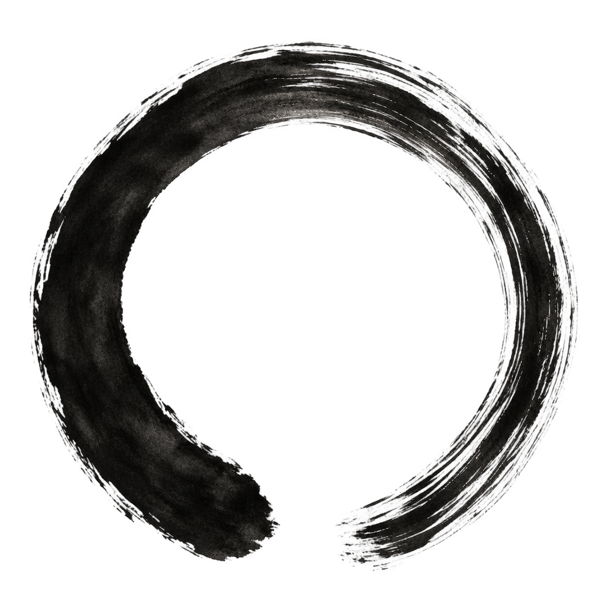
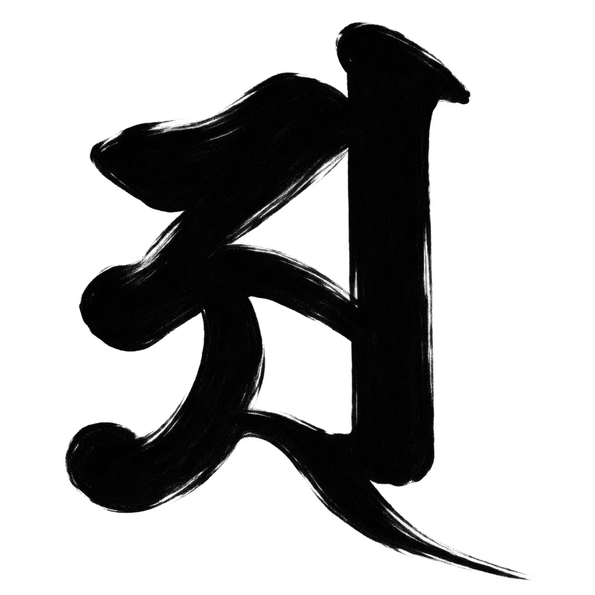

仏教の言葉を知ると、日常の出来事にも新しい問いが生まれる。「空」を読んだ後で、自分は他人を固定した性格で決めつけていないか。「三密」を学んだ後で、口では丁寧に話しながら、身体や心は相手を拒んでいないか。理解は、こうした具体的な場面へ戻すことで深まっていく。
まず、一日の中に立ち止まる時間をつくり、教わった作法を無理なく続けてみる。その後、人との関係や、自分の反応にどんな変化があったかを確かめる。実践の入口には、特別な能力や大きな決心は要らない。この章では、教えを学ぶこと、宗教の修行として行うこと、科学で効果を調べることを、それぞれの役割に沿って考える。


1 聞き、考え、修める — 学びを一周させる
仏教では、聞・思・修によって智慧（物事を見誤らずに知る力）を育てると考える。聞は教えを聞いたり読んだりすること、思は意味や理由を考えること、修は瞑想などの修行を重ねて身につけることである。禅定（心を深く集中し、安定させる修行）も修に含まれる。学んだ知識を仕事へ使うことだけでなく、迷いを離れるための実践として読む。新纂浄土宗大辞典「三慧」
初心者も、この三つを行き来して学べる。例えば不妄語（うそをつかない戒め）を知る。次に、未確認の話を事実として伝えると、相手を困らせるのではないかと考える。そして仕事では、確認したことと推測を分けて話してみる。難しかった場面があれば、その疑問を次の法話や読書へ持ち帰る。
教えを学ぶことと、実際に行うことは、互いを確かめる役目を持つ。説明を読むだけでは、焦った時に自分の身体がどう緊張するかを見落としやすい。一方、経験だけでは、一度の心地よさを教義全体の意味だと思い込みやすい。読んだ教えを自分の行動で確かめ、経験したことは教えや他の人の説明と比べて考え直す。
読書ノートは三行でもよい。「本文が述べること」「自分がそこから考えたこと」「次に確かめたいこと」を分けて書く。例えば「空海は身体と言葉と心を一体として実践を説く」「私は会話でも身体の向きが大切だと思った」「この日常的な応用と正式な三密行は、どこまで同じでどこが異なるか」。最後の問いを残せることが、学びを続ける力になる。
2 顕密・中観・唯識を、問いの位置を知る地図にする
顕教・密教という言葉を読むときは、誰の立場からの区別かを確かめたい。空海は、この二つを使って教えを比較し、密教の特色を説いた。真言密教は法身説法（仏の真実のあり方そのものが智慧を説くこと）と三密加持（身体・ことば・心を通じて仏の働きと応じ合うこと）を重視する。ただし、顕教と呼ばれる伝統にも、瞑想や身体を使う修行、儀礼がある。「顕教は理屈だけ、密教は体験だけ」と分けると、その実際の姿を見落とす。金剛峯寺「高野山真言宗とは」
中観と唯識は、大乗仏教の重要な思想的伝統である。入口の問いを、次のように整理できる。
| 観点 | 学ぶときの入口 | 日常で考えてみる問い |
|---|---|---|
| 中観 | 縁起するものに、独立して固定した自性を立てられるか | 「あの人は絶対にこういう人だ」と判断するとき、どんな条件を省いているか |
| 唯識 | 認識とその習慣が、経験の成立にどのように関わるか | 見聞きした出来事に、自分の予測や記憶が何を付け加えているか |
| 真言密教 | 仏の智慧に身体・言葉・心の働きを通じてどう参与するか | 理解したことが、姿勢・発言・行為にどう表れるか |
龍樹の『中論』は、原因や条件によって成り立つことを縁起と呼び、その物事には独立した本体がないという空の見方へつなげる。名前を付けて日常で語ることも認めつつ、「絶対にある」「全くない」の一方に決めつけない中道を説く。唯識は、見る・感じる・判断する働きが、どう経験を成り立たせ、迷いを生むかを調べ、その認識を転換しようとする。単に気分を変えれば好きな世界を作れるという教えとしては読まない。『中論』観四諦品・大正蔵30巻33頁、法相宗大本山興福寺・唯識関係の刊行図書案内
表の右列は、各思想を日常から考えるための問いである。この問いだけで思想全体を説明したわけではなく、三つを初級・中級・上級と並べる共通の基準もない。空海が教えをどう分類し評価したかと、それぞれの伝統が自分の教えをどう説明するかを分けて読む。すると、違いを残したまま学べる。
3 五つの実践で、どこを見て何を問うか
曼荼羅 — 一尊から、関係の全体へ
曼荼羅を見るときは、まず一つの像や区画をゆっくり見る。姿勢、手の形、持物、周囲との配置を観察し、その後で名称と役割を調べる。東寺の講堂には、大日如来を中心に二十一尊を配置した立体曼荼羅がある。仏の姿を通じて教えを表すという寺院の説明を読み、配置全体と自分の視線の動きを照らしてみよう。東寺「立体曼荼羅」
「何の仏か」が分かったら、「なぜここに置かれるのか」「穏やかな姿と厳しい姿が同じ場所にあるのはなぜか」も調べてみよう。美しい、怖いと感じた像を記すと、自分がどんな姿を好み、何を恐れるかにも気づける。その印象は、自分の反応として記録し、仏像に伝統的に託された意味とは分ける。寺や図像の解説と比べることで、受け継がれてきた意味へ近づける。
阿字観・阿息観 — 教わったことへ戻る場所を持つ
阿字観を継続して学ぶなら、僧侶の指導を受け、姿勢・呼吸・対象の観じ方を一つずつ確認したい。金剛峯寺は初心者向けの阿字観体験と、経験者が質問しながら学ぶ実修会を案内している。入口を一度経験した後に、疑問を持って学び直す道が用意されている。金剛峯寺「高野山で体験」
日常へ持ち帰る際には、「前より深く入れたか」だけを評価にしない。「始める前は何に気を取られていたか」「力みや眠気に気づいたか」「終えた後、人の話をどう聞いたか」も観察できる。阿息観と阿字観の公開された基本作法は第1篇の実践節で確認し、さらに学んだ範囲を指導者と確かめて続ける。時間を延ばすことより、落ち着いて戻れる手順を持つことを大切にしたい。
授戒 — 受け取った言葉を一日の選択へ
高野山大師教会の授戒では、菩薩十善戒（身体・言葉・心に関わる十の戒め）を授かり、法話を聞く。例えば、不殺生は命をむやみに奪わないこと、不偸盗は盗まないこと、不妄語はうそをつかないこと、不悪口は人を傷つける言葉を避けること。生命や所有、言葉、心の使い方を、生活の中で確かめる道になる。金剛峯寺「授戒・菩薩十善戒」
授戒の後は、まず一項目を、自分の生活に当てはめて考えてみる。不悪口なら、「相手への指摘に、傷つける言葉を混ぜていないか」。不妄語なら、「自分をよく見せようとして、成果や確実さを大げさに言っていないか」。守れなかった場面も、何が引き金で、次はどこで行動を選び直せるかを調べる材料にする。十項目を一度に完璧にしようと、自分を責め続ける必要はない。
写経 — 書く速さを、読む深さにつなげる
写経では、筆先だけでなく、早く終えようとする焦りや、字を他人と比べる気持ちも観察できる。大覚寺は、経文に向き合う写経の機会や用具を案内している。寺院で行う場合は、その場の説明と作法を受け取って取り組みたい。大覚寺・公式案内
書き終えたら、一句だけでも意味を調べてみる。「無所得」なら、何も得られなくてよいという意味なのか、得たものだけで自分の価値を決めることへの問いなのか、前後の文章も読んで確かめる。書き写すことと意味を読むことを行き来すると、文字の形だけを繰り返す作業で終わりにくい。字の出来栄えとは別に、今日どの言葉が心に残ったかも記しておこう。
供養 — 見えない関係に、どう応えるか
供養の場では、誰が、誰のために、何を供えているかを見よう。亡き人への祈り、大師へ食事を届ける供膳、日々の勤行（読経などの仏前のお勤め）は、目的や受け継がれた意味が異なる。奥之院の生身供は、弘法大師が今も入定（深い瞑想の修行）を続けているという信仰から、食事を届ける儀礼である。その意味を知ると、料理と時刻だけでなく、誰へ、どんな思いで届けているかも見えてくる。金剛峯寺「もっと知りたい！高野山金剛峯寺」第4回・奥之院維那のインタビュー
その場から日常へ戻ったときには、「自分の生活を支えた誰の働きを忘れていたか」と問える。食事を作る人、道具を直す人、亡くなった家族など、すぐに返事の来る関係だけに心を限定しない。その気づきを、感謝を伝える、物を丁寧に使う、後の人のために片づけるといった行動へ移せる。ただし、これは供養から考えた日常への応用であり、宗教儀礼の意味を全部置き換える説明ではない。
4 特別な感覚を、悟りの判定にしない
静かに座った後の落ち着き、読経に包まれた感動、身体が軽く感じられた経験は、その人にとって大切な出来事になりうる。その経験をまず、起きたこととして丁寧に扱おう。その上で、「宇宙と一体になったから自分の判断は正しい」「強い感覚がなかったので失敗した」と結論を急がない。
経験したことと、そこへ付ける意味は、分けて確かめたい。「温かく感じた」は、起きた感覚の記録。「慈悲を実感した」は、その感覚をどう理解したか。「悟りに達した」は、さらに広い宗教上の判断である。前の二つから、三つ目が自動的に決まるわけではない。密教が目指す智慧と利他（他者を助けること）を考えるなら、その後、自分が何を言い、どう行動したかも継続して見直す。金剛峯寺「高野山真言宗とは」
科学で調べるなら、質問を具体的にする。「この実践は大切か」という価値の問いと、「続けた人の睡眠や血圧はどう変わったか」という測定の問いでは、確かめ方が違う。血圧が改善しても、それだけで教義全体が正しいと証明したことにはならない。また、一人に起きた変化が、誰にでも同じように起きるとは限らない。
自分の記録は、研究論文の代わりにはならないが、生活を調整する手がかりになる。よく眠れた日、忙しかった日、人と争った日も含めて記せば、都合のよい経験だけを選ぶことを避けやすい。身体的な不快感や強い不安が生じた場合は、無理に続けず、指導者に具体的な状況を伝える。深めるために、いったん緩める判断も必要になる。
5 利他を、相手に届く行動として考える
原文 · 『大日経』住心品、大正蔵18巻1b29–1c01
菩提心爲因。悲爲根本。方便爲究竟。
読み下し 菩提心を因と為し、悲を根本と為し、方便を究竟と為す。
読み ぼだいしんをいんとなし、ひをこんぽんとなし、ほうべんをくきょうとなす。
意訳 仏の智慧は、悟りを求める心を出発点とし、生きものの苦しみを取り除こうとする慈悲を根本とする。その完成は、相手に応じた方法で生きものを導く働きにある。
文脈に沿った解釈 『大日経』は、悟りを求める菩提心（自分と他者のために、悟りを求めて進む心）を出発点とし、他者の苦しみに応える慈悲を根本とし、相手へ届く方法で働く方便（相手に応じた方法で、悟りへ導く働きや工夫）を完成へつなげる。この三つを別々にせず、一つの実践として読む。だから、自分が満たされたかに加えて、他者の苦しみにどう応えたかも問い直せる。『大日経』住心品・大正蔵18巻1頁
日常では、親切にしたつもりでも、相手には負担になることがある。助言する前に話を聞く。手伝う内容を相手に確認する。感謝や見返りがなくても、必要な作業を終える。こうした具体性を持たせると、「善い自分」の印象を守ることから、相手にとって役立つことへ注意を向けられる。
仕事での利他も、大きな奉仕活動に限らない。曖昧な引き継ぎを残さない、ミスを早く共有する、他人の成果を横取りしない、忙しい人にも判断に必要な情報を渡す。専門知識があるなら、相手の理解できる言葉で説明することも一つの実践になる。これらは日常への応用例であり、行動の目的と結果をともに確かめるための提案である。
また、慈悲を理由に無理な要求を引き受け続ける必要はない。自分の疲労や限界を認め、断る場合には理由と可能な代案を伝える。人を傷つける行為には距離を取り、必要な援助を求める。他者の苦しみを大切にすることと、自分を傷つける状況を放置することを同一にしない。続けられる関係を考えることも、相手と自分の双方を具体的に見る練習になる。
ひとことで 自分の気づきを、相手に届く働きへつなぐ。何をしてほしいかを聞き、できることを一つ実行し、その結果を確かめる。
6 午前2食・20時間断食を、人の試験から考える
食事を午前中に終えること、一日二食にすること、毎日20時間食べないことは、別々の変更である。二食でも、いつ食べるか、間にどれだけ時間が空くか、全部でどれだけ食べるかによって生活は変わる。奥之院の生身供は10時30分から翌朝6時まで19時間30分空くが、これは大師へ食事を届ける間隔である。僧侶自身が食べた時刻の記録でも、人間の断食効果を測った試験でもない。持明院「雨の生身供」
原文 · Suttonら、2018年の試験の抄録
6-hr feeding period, with dinner before 3 p.m.
文脈に沿った解釈 引用は、食べる時間を6時間以内に収め、夕食を午後3時より前に終える条件を示す。Suttonらの2018年の試験は、前糖尿病（血糖が正常より高く、糖尿病には至っていない状態）の男性8人が完了した小規模な研究である。早い時間帯の6時間に食事を収めて15時までに終える方法と、12時間に食事を分ける方法を、それぞれ5週間行った。
食事量を合わせ、体重を維持するように管理しても、インスリン感受性（血糖を調節するインスリンへの身体の反応）や血圧などに改善が見られた。ただし、両条件とも一日三食である。食べる時刻を考える上で重要な結果だが、「午前中の二食が最善」「毎日20時間食べないのが最善」と確かめた研究ではない。Sutton et al., 2018・原著全文
Cienfuegosらの2020年の試験には、20時間の絶食に近い条件がある。肥満の成人58人を、15～19時の4時間に食べる群、13～19時の6時間に食べる群、普段どおり暮らす比較用の群へ、無作為（偶然に任せる方法）で割り付けた。8週間後、時間を制限した二群では、体重がともに約3％減り、摂取エネルギーも一日約550キロカロリー減っていた。
食べる量も減ったため、この減量をすべて「長く食べなかった効果」とは説明できない。また、食べたのは午後から夕方であり、朝の二食を調べた試験ではない。Cienfuegos et al., 2020
Liuらの2022年の試験は、肥満の成人139人を12か月調べた。一方は、食事量を制限した上で、食べる時刻も8～16時に収めた。もう一方は、食事量だけを制限した。比べたところ、体重減少の差は統計学的に有意ではなかった。つまり、この研究では、時間制限を加えた方が明確によいとは示せなかった。
これは、二つの方法の効果が完全に同じだと証明したことではない。この条件での結果を、食べる時間を短くするほど必ず効果が増える、という結論へ広げることもできない。Liu et al., 2022・NEJM原著
オートファジーは、細胞の中の成分を分解し、再利用する仕組みである。その処理の流れを測ることをフラックスという。2025年の探索的解析（どんな変化があるかを探る分析）は、肥満の121人が参加した6か月の無作為化試験で、末梢血単核球という血液細胞のフラックスを調べた。
2か月では、群どうしの変化に明確な差は示されなかった。6か月では、断続的な絶食と食べる時間の制限を組み合わせた群と、比較用の群との変化量に、事後解析（主な解析の後に追加で行う分析）で有意差があった。ただし、絶食などを行った群だけを見ると、開始時からの有意な増加はなかった。比較用の群が低下する傾向も、群間の差に関わりうると著者らは述べている。
人の細胞で測った点に意義はある。しかし、16時間で一斉に作動する閾値、全身の若返り、寿命延長を確定した研究ではない。測ったのは特定の血液細胞の働きであり、そこから身体全体や寿命まで一度に結論してはいけない。Bensalem et al., 2025
これらの試験は、食べる時刻と時間幅が、食べる量や代謝（身体の中で物質を処理する働き）にどう関わるかを調べている。ここで扱った結果から、午前中の二食や20時間の絶食が、誰にでも最適だとは言えない。生活を変えるなら、食事の質と必要量、睡眠、活動量、続けられるかも確かめる。低血糖を起こしうる薬を使っている、妊娠・授乳中、低体重、摂食障害の既往がある、といった場合は、先に医師や管理栄養士へ個別に相談したい。NIDDK「Fasting Safely with Diabetes」、NIH「To Fast or Not to Fast」
ひとことで 「早い時間帯に食べる」「二食にする」「20時間食べない」は別の条件。早い食事の小規模試験がよい結果でも、午前二食・20時間断食が最善だという結論にはならない。
7 毎日3分、10分、週に一度 — 日常に戻す仕組み
次は、実践を生活の中で続けるための提案である。宗派の正式な修法や、健康効果を検証したプログラムとして示すものではない。阿字観・阿息観は、教わった作法と第1篇の実践節の公開資料を土台にする。ここでは、いつ行うか、何を振り返るかを、生活に合わせて整える。
毎日の3分 — 反応する前に、状況を見直す
仕事を始める前、帰宅したとき、気がかりな連絡へ返事をする前など、決まった一場面を選ぶ。まず座面や足が床に触れる感覚を確かめ、肩や顎に不要な力が入っていれば緩める。呼吸は無理に深くせず、自然な出入りをしばらく観察する。息を止めたり、苦しさを我慢したりする必要はない。薬師院の公開する随息観にも、自然な呼吸を見つめ、浮かんだ考えを認めて呼吸へ戻る案内がある。高野山真言宗薬師院「密教瞑想法・阿字観について」
次に、今の状態を短く言葉にする。「急いでいる」「失敗を怖がっている」「相手の態度に腹を立てている」。この言葉も自分の永久的な性質にはせず、現在の状態として置く。最後に「次の一動作で、何を大切にするか」を決める。相手の話を最後まで聞く、確認を一つする、言い過ぎた部分を訂正するなど、実行できる大きさにする。
この3分の目的は、必ず気分をよくすることではない。怒りが残っていても、侮辱する文面をそのまま送らずに済むことがある。感情を消せたかに加え、その感情の下でどんな行動を選んだかを見るのである。
10分の時間 — 指導を受けた実修と、一行の記録
僧侶から学んだ阿息観や阿字観を行う時間は、生活の中で確保しやすい位置に置く。起床後でも、仕事を終えた後でもよい。指導で決められた手順や時間があれば、それを優先する。「10分」は生活上の目安であり、正式な行の時間を勝手に切り詰める指示ではない。
終えた後は、経験を一行だけ残す。「呼吸に注意が戻るたび、明日の予定を考えていたことに気づいた」「眠かったので、今日は早く休むことにした」など、具体的に書く。集中できた、できなかったの二択よりも、状態と対応が分かる記録の方が、次の相談や調整に役立つ。休んだ翌日は、埋め合わせのために急に長く行わず、続けられる分量へ戻る。
毎週の振り返り — 心境より、関係の変化を確かめる
週に一度、五分ほどで次の四点を見直す。
- 読んだ言葉や受けた指導の中で、まだ説明できない点は何か。
- 怒り、焦り、欲張りに気づいた場面はあったか。その後どう行動したか。
- 相手の話を確かめずに決めつけたこと、助けを求められたことはあったか。
- 来週、一つだけ変えるなら、何をどの場面で行うか。
例えば、上司の短い返事を「自分への軽蔑」と受け取った場面なら、返事の短さは観察した事実、軽蔑は自分の解釈、と分ける。必要に応じて用件を確認し、解釈が当たっていたかを見直す。ただし、実際の不当な扱いまで心の問題として片づけない。事実を確かめることは、我慢を増やすためにも、相手を無条件に正当化するためにも使わない。
記録は、日付／出来事／自分の反応／選んだ行動／次の問い、の五項目でよい。締切や人の評価を無理に仏教用語へ言い換えず、何が起きたかを普段の言葉で残す。その記録を、読んだ教えと、実際に行った修行の両方から見直すと、学びと生活をつなげやすい。
8 読み続けるための地図
学ぶ順番は、関心から選べばよい。ただし、入門書、寺院の解説、原典、研究論文には、それぞれ異なる役割がある。一冊で全体を決めず、同じ疑問を種類の違う資料へ持っていくと理解を確かめやすい。
| いまの関心 | 次に読む資料 | 読むときの問い |
|---|---|---|
| 空海が仏教全体をどう見たか | 吉村均『空海に学ぶ仏教入門』、ちくま新書、2017年。国立情報学研究所・書誌 | 教えの比較は、どんな修行と人間理解を前提にしているか |
| 『秘鍵』を自分で読んでみたい | 空海著・加藤精一編『空海「般若心経秘鍵」』、角川ソフィア文庫。出版社の目次・書誌 | 原文、訳文、解説を分け、同じ一節を照合できるか |
| 法話の言葉で読み直したい | 大覚寺「『般若心経秘鍵』に学ぶ」。連載の入口 | 日常の比喩が、原文のどの部分を説明しているか |
| 原文と解釈の距離を確かめたい | SAT大正新脩大蔵経テキストデータベース。『般若心経秘鍵』 | 引用はどこにあり、その前後で何が論じられているか |
| 唯識を別の伝統の側から学びたい | 興福寺の刊行図書・講座案内。公式案内 | 自分の理解する「心」と、唯識が分析する「識」は同じか |
| 阿字観・阿息観を続けたい | 指導を受けた寺院の資料と実修会。金剛峯寺の体験・実修案内 | どこまで自分で確認でき、どこを指導者に尋ねる必要があるか |
原典を開いてすぐ分からなくても、行き詰まりではない。一句を訳で読み、解説を参照し、実践の後でまた原文へ戻る。そのとき、最初には気づかなかった語が見えてくることがある。
今週は一つの言葉を読む。日々の一場面で使ってみる。自分や相手に何が起きたかを確かめる。そして、分からない点を持って、もう一度学ぶ。阿字観や阿息観を長く続けることも、この往復の中に置ける。静かに座る時間と、他者と生きる時間が、少しずつ互いを照らすようになる。
もう一段、本文の奥へ
気になった言葉を開く。原文の表現から意味をたどり、身近な場面へ戻して考える。
01聞・思・修 — 説明を読んだだけで終わらせない学び方聞く・考える・身につける。その一周を旅の後にも。
文脈に沿って読む
聞所成慧（もんしょじょうえ）・思所成慧（ししょじょうえ）・修所成慧（しゅしょじょうえ）。それぞれ、聞いて得られる智慧、考えて得られる智慧、修習して得られる智慧をいう。
聞・思・修は、「情報を集める→自分の意見を書く→役立てる」というだけの勉強法ではない。仏教では、迷いをなくす道の中で教えを学び、その意味を吟味し、修習によって自分のあり方を変えていく。とくに修慧には瞑想などを通じた智慧が含まれる。知識が多い人でも、怒った瞬間には言葉を失う。そのとき、知っていた教えが身体と言葉に現れるかどうかが問われる。
ただし「実際にやって気持ちよかった」だけでは、教えを理解した証明にならない。聞いた教えが実践の方向を示し、実践で生まれた疑問が学び直しの題材となり、考察が思い込みを点検する。三つは相互に確かめ合う。「空海の答えを暗記すること」と「空海がその答えに向かった問いを、自分でも考えること」は違う。
三慧は仏教諸伝統に共通する用語だが、修習の内容は各伝統の教えと作法による。
中学生にもわかる説明
聞・思・修は、教えを身につける三つの学び方である。聞は説明を聞いたり読んだりすること、思はその意味や理由を自分で考えること、修は瞑想などの実践を重ね、智慧（物事を正しく見抜く力）を深めることだ。
泳ぎ方の本を読む、なぜその動きで浮くのか考える、水に入って練習する。この違いを思い浮かべると分かりやすい。ただし仏教で目指すのは、記録を伸ばすことではなく、迷いを離れ、物事を正しく知ることにある。
「人を傷つける言葉を避ける」と読んだら、どんな言葉が相手を傷つけるかを考え、自分の会話でも確かめる。うまくできなかった場面があれば、教えに戻って考え直す。読んだだけ、体験しただけで終わらず、学びと実践を互いに確かめる。
生活で確かめる
今回の授戒で一つだけ気になった戒を選び、帰宅後に「教わった意味／自分の疑問／今日の一場面」を三行で書く。たとえば不妄語なら、確認していないことを断定しそうになった場面を書く。翌日は、その一場面で言葉を選び直す。
持ち帰る問い 「知っている」と「身についている」は、何が違うと自分で判断できるだろうか。
この項目の問い合わせ文
聞・思・修と三慧について中学生にもわかるように説明して。 原本の表現とその解説、さらにそれを中学生レベルにまで落とし込んだ解説 という構成で回答してください。 文字数は必要最大限で、本質を捉えながら遊び心を持たせながら文章に記すこと。 目的は『一生使える知識としてまとめること』です。 省略しないでほしい項目： - 聞・思・修 — 説明を読んだだけで終わらせない学び方：聞く・考える・身につける。その一周を旅の後にも。 各項目は、必要最小限の原文と書名・位置・一次URL→意味訳と文脈→中学生にもわかる説明、の三層にしてください。新しい漢文引用には解説用の読み下しとかなを付けてください。既存の現代訳の長い転載は避け、後世の伝承と当時の史料、現代の例えと原典の主張を区別し、未確認は推測で埋めないでください。 資料の調査は、論点に直結する一次資料・公式公開資料の少数の強い根拠を精読することを優先してください。同じ説明を探すためだけに検索数を増やさず、確認できた範囲と未確認を分け、必要な本文の読解へ時間を使ってください。
Proの解説を読む
聞・思・修と三慧
— 説明を読んだだけで終わらせない。聞く・考える・身につける、その一周を旅の後にも。
「説明できること」と「身についていること」は、同じではありません。けれど、説明を学ぶことも、考えることも、無駄な前座ではない。
聞・思・修は、そのそれぞれを大切にする仏教の学び方です。三慧とは、教えを聞くこと、道理を考えること、修習することによって育つ三つの智慧を指します。新纂浄土宗大辞典・三慧
まず見取り図を置くと、こうなります。
| 学びのはたらき | それによって育つ智慧 | つかむための言い換え |
|---|---|---|
| 聞（もん） | 聞所成慧（もんしょじょうえ） | 教えから理解を得る |
| 思（し） | 思所成慧（ししょじょうえ） | 道理を考えて理解を確かめる |
| 修（しゅ） | 修所成慧（しゅしょじょうえ） | 瞑想・修習によって理解を深める |
これらを略して、聞慧・思慧・修慧、合わせて三慧（さんえ。「さんね」とも）と呼びます。「慧」は智慧、すなわち物事を見分け、理解するはたらきです。単なる物知り度の順位ではありません。新纂浄土宗大辞典・三慧
以下では、古典の根拠を『阿毘達磨倶舎論』巻第二十二「分別賢聖品第六之一」に絞ります。世親の著作を玄奘が漢訳した論書で、確認するのはその伝存本文の電子版です。著者の自筆原稿という意味の「原本」ではありません。読み下しと意味訳は、説明のために付したものです。CBETA公式本文
1．三慧 — 「三つの動作」だけでなく、「そこから育つ智慧」
① 原文・位置・一次URL
依聞所成慧起思所成慧，依思所成慧起修所成慧。
解説用読み下し
聞所成慧（もんしょじょうえ）に依（よ）りて思所成慧（ししょじょうえ）を起（お）こし、思所成慧（ししょじょうえ）に依（よ）りて修所成慧（しゅしょじょうえ）を起（お）こす。
出典：『阿毘達磨倶舎論』巻22「分別賢聖品第六之一」、『大正新脩大蔵経』29巻、No.1558、116頁下段8–9行。
一次URL：CBETA閲覧画面・巻22／照合したCBETA公式本文データ。CBETA公式本文
② 意味訳と文脈
意味訳
「教えを聞くことで生じた智慧をよりどころとして、考えることで生じる智慧を起こす。それをよりどころとして、修習によって生じる智慧を起こす。」
「所成」は、それによって成り立ったものという意味です。ここでは、智慧を生み出す条件に注目しています。また、前段では戒を清らかに保つことを基礎に置いています。元の話題は、単なる勉強の効率化ではなく、真理を見きわめる道へ進むための修行です。CBETA公式本文
③ 中学生にもわかる説明
たとえば、自転車の乗り方を教わったとします。
「こうすればいいらしい」と理解する。
「どうしてそうするのか」と考える。
実際に練習し、少しずつ扱えるようになる。
この三つは、別々の仕事です。
ただし、これは学びの違いをつかむための現代のたとえです。自転車に乗れれば仏教の修慧を得た、という話ではありません。
ここで覚えたいのは、聞く段階にも、考える段階にも、すでに大切な理解があるということです。実践だけを持ち上げて「本なんて読むな」とするのも、読書だけで全部済んだとするのも、この三つを生かせません。
2．聞 — まず、自分の頭の外から学ぶ
① 原文・位置・一次URL
依聞至教
解説用読み下し
至教（しきょう）を聞（き）くに依（よ）る。
出典：『阿毘達磨倶舎論』巻22、同116頁下段19行。「聞所成」を説明する文の冒頭。
一次URL：CBETA・巻22／照合用本文。CBETA公式本文
② 意味訳と文脈
意味訳
「すぐれた教えを聞くことに基づく。」
続く本文では、それによって生じるすぐれた智慧を「聞所成」と呼びます。ここでの「聞」は、音が耳に入るだけのことではありません。仏道の教えを受け取り、理解する学びです。現代の説明では、読書を含む学習としても捉えられます。CBETA公式本文
③ 中学生にもわかる説明
聞とは、「まだ知らないことを、自分の思い込みだけで埋めない」ための入口だと考えてみてください。
説明を読むとき、こんな区別をしてみます。
「この文章には、何が書いてある？」
「自分が勝手に付け足した意味はない？」
「誰の、どの説明なのだろう？」
たとえば、説明には「執着を離れる」とあるのに、自分の頭の中で「何も大切にしないことだ」と変換してしまったとします。そのまま進むと、学んだつもりで、別の話を育ててしまいます。
そこで最初にするのが、相手の説明を、相手が説明している形で受け取ることです。
これは、何でもうのみにすることとは違います。まず内容を取り違えずに受け取り、そのうえで次の「思」へ進みます。
覚え方を一言にすると、
聞＝「自分の答え」を急いでかぶせず、まず教わる。
3．思 — 「なるほど」を、道理に照らして確かめる
① 原文・位置・一次URL
依思正理
解説用読み下し
正理（しょうり）を思（おも）うに依（よ）る。
出典：『阿毘達磨倶舎論』巻22、同116頁下段20行。「思所成」を説明する文の冒頭。
一次URL：CBETA・巻22／照合用本文。CBETA公式本文
② 意味訳と文脈
意味訳
「正しい道理を考察することに基づく。」
本文は、そこから生じる智慧を「思所成」と呼びます。「思」は、何となく思い浮かべることでも、自分に都合のよい感想を作ることでもなく、教えの意味を道理に即して考えることです。現代の知恩院の法話でも、聞いた内容を自分で考え、反省してみることと説明されています。CBETA公式本文
③ 中学生にもわかる説明
「なるほど」とうなずいたあと、自分で説明し直してみるのがよい入口です。
たとえば、旅先で「決めつけずに人の話を聞くことが大切だ」という説明を受けたと仮定します。そこで、こう考えてみます。
「なぜ、途中で決めつけるとまずいのか？」
「最後まで聞くことと、全部に賛成することは同じか？」
「自分は、相手の話より先に反論を組み立てていないか？」
すると、「聞く＝同意する」ではない、と区別できます。理解したうえで反対することもできる。それなら、相手に流されずに、相手の話を聞けそうです。
この問い方は、ここで提案する現代的な応用です。大切なのは、教えを自分好みに薄めるのではなく、その意味を自分でも確かめられるようにすることです。
説明の言葉を借りるだけでなく、その言葉が何を指しているのかを考える。いわば、引用文の後ろに隠れず、自分でも立ってみるわけです。
思＝「そう書いてある」から、「どういう意味で、なぜそう言えるか」へ。
4．修 — 「わかったつもり」を越えて、心を修める
① 原文・位置・一次URL
依修等持
解説用読み下し
等持（とうじ）を修（しゅ）するに依（よ）る。
出典：『阿毘達磨倶舎論』巻22、同116頁下段20–21行。「修所成」を説明する文の冒頭。
一次URL：CBETA・巻22／照合用本文。CBETA公式本文
② 意味訳と文脈
意味訳
「等持を修めることに基づく。」
等持は、心を散乱させず、対象に安定させる「定」に関わる語です。したがって、ここでの修所成慧は、瞑想・修習によって生じる智慧です。単に何かを実行した、回数をこなした、という意味には縮められません。CBETA公式本文
③ 中学生にもわかる説明
「落ち着いて物事を見ることが大切だ」と説明するのと、実際に心が動いているときにも見失わずにいるのとでは、違いがあります。
修を身近な言葉でつかむなら、理解したことが心のはたらきにも深くなじむよう、修めていくことです。仏教では、そこに瞑想・観察の修習が含まれます。新纂浄土宗大辞典・三慧
ただし、次のように飛躍しないことが大切です。
「一度、静かに座れた」から「智慧が完成した」へ。
「強く感動した」から「教えを完全に理解した」へ。
「何も考えなかった」から「考察を越えた」へ。
これらは、それぞれ別のこととして確かめる必要があります。
また、日常の行動に教えを生かすことにも意味があります。現代の法話では、修慧を、納得した教えを実行していくこととして説く例もあります。ただし、その広い実践の説明と、『倶舎論』の等持に基づく専門的な分類は、同じ細かさの説明ではありません。総本山知恩院布教師会
修＝言葉を覚えるだけでなく、心のあり方を修める。
5．旅の後にも一周 — 「一つの教え・一つの問い・一つの実践」
① 公式公開資料の表現・位置・URL
「そのとおり素直に実行していく」
出典：総本山知恩院布教師会、中村晃和「聞思修の三慧」、会長法話第27話、修慧を説明する段落。
公式URL：知恩院布教師会「聞思修の三慧」。総本山知恩院布教師会
これは古典の漢文ではなく、現代の寺院公式の法話です。
② 意味と文脈
この法話は、教えを聞き、自分で考え、納得したことを実行するという形で三慧を説いています。学びを日常へつなげる説明です。総本山知恩院布教師会
ただし、「帰宅後に何度も一周させる」という記録法は、以下で提案する現代的な応用です。『倶舎論』の当該箇所に、そのままの旅行用手順が書かれているわけではありません。また、これだけで正式な瞑想修習を代替したり、修所成慧の獲得を判定したりはしません。
③ 中学生にもわかる説明 — 帰ってから、三行だけ残す
旅で得た説明を全部、完璧に持ち帰ろうとしなくてもかまいません。まず、一つを選びます。
| 記録すること | 書き方の例 |
|---|---|
| 聞：何を教わったか | 「決めつけず、相手の話を聞く」。誰の、どの説明だったかも添える。 |
| 思：何がわかり、何が疑問か | 「聞くことと同意することは違う。では、反対するときはどう伝えよう？」 |
| 修への日常的な応用：何を試すか | 次の会話で、一度は相手の話を途中で遮らずに聞き、内容を確認してから返す。 |
この例の言葉や行動は、古典からの引用ではありません。学びを持ち帰る練習の見本です。
試した後には、「できた・できなかった」だけで採点せず、こんな一言を足します。
「最後まで聞いたら、自分が予想した話と違っていた」
「黙ってはいたけれど、頭の中では反論ばかり考えていた」
「理解できなかったので、もう一度説明を確かめたい」
そこで、再び聞く。考え直す。試し方を変える。
一周とは、成功の丸を付けることではなく、次に学ぶべきことが見えるところまで進むこと――そのように使ってみてください。
寺院で教わった瞑想については、その場で確認した手順と、自宅で続けてよいと案内された範囲を守る。一方、読んだ説明を自分の言葉で確かめたり、日々の接し方を振り返ったりすることは、旅の記憶を生活につなげる入口にできます。
一生使うために、最後はこの三つ
聞は、自分だけで答えを作らないため。
思は、他人の答えを借りたままにしないため。
修は、理解を言葉の中だけに閉じ込めないため。
これは原典の直訳ではなく、ここまでの説明を持ち歩くための言い換えです。
読んだページにしおりを挟むだけでなく、暮らしの中にも、一か所しおりを挟む。
「次にこの場面が来たら、少し違う受け取り方をしてみよう。」
旅先で出会った教えを、一生の知識にする仕事は、帰ってからも続きます。
02如実知自心 — 心の中を眺めると、何が分かるのか自分を採点する前に、いま心が何を加えたかを見る。
原本の表現
云何菩提。謂如實知自心。
読み 読み下し：云何が菩提。謂く、如実に自心を知るなり。（いかんがぼだい。いわく、にょじつにじしんをしるなり。）
『大日経』住心品 · 大正蔵18巻1c
心不在内不在外。及兩中間心不可得。
読み 読み下し：心は内に在らず、外に在らず、及び両の中間にも、心は得べからず。（しんはうちにあらず、そとにあらず、およびりょうのちゅうげんにも、しんはうべからず。）
『大日経』住心品 · 大正蔵18巻1c・「如実知自心」に続く問答
文脈に沿って読む
意訳：悟りとは何か。それは、自分の心をありのままに知ることである。
『大日経』は、悟りを遠くの場所にある賞品のように語らず、自心を如実に知ることへ向ける。「如実」は、気分のよい自己像に合わせて見ることではなく、実際のあり方に即して知ること。「自心」は、今日の気分を記録するだけで終わらず、その心の本性と悟りの関係を問う言葉である。薬師院の公開指導が、刺激的な体験を求めることより自分の心の確認を重視するのも、この方向を示している。
意訳：心を、内側にも外側にも、その中間にも、固定したものとしてつかむことはできない。
「如実に自心を知る」に続いて、経は菩提、つまり悟りを、手に入れられる物や定まった形として捉えない。そこで「誰が悟りを求めるのか」と問い返され、自心が求める、その本性は清浄である、と答えた上で、この句を置く。自分の心を深く知ることは、内面を探して変わらない「心そのもの」を発見し、所有することではない。
経はさらに、心・虚空界・菩提を無二として語り、慈悲と方便（相手に応じた方法で、悟りへ導く働きや工夫）へ結びつける。無二は、互いに切り離された二つの実体として扱わないこと。今日の感情を観察することを入口に、その感情を生む心も、悟りも、固定した物にしないところへ問いを深める。本性が清浄だという教えは、今の自分の判断がすべて正しいという保証にはならない。隣の「阿字本不生」で学ぶ、条件から独立した本体を立てない見方とも読み比べられる。
入口では、「私は腹が立っている」に加え、「誰かを責める説明を繰り返している」「相手の一言に、過去の記憶を付け加えている」と心の動きを細かく知る。嫌な感情が見えたから、自分の本性は悪だ、と決める必要はない。そこで起きている心の動きを、永久不変の自分そのものと同一にしないことも大切になる。
『吽字義』には、自分で恐ろしい夜叉を描いた画師が、その絵を見て自分で怖がる譬えがある。たとえば短い返信を見て「嫌われた」と想像し、自分の想像に怯える場面を考えると、譬えへの入口になる。原典の譬えは、迷いの世界を自ら描き、そこに沈むという、もっと大きな問題を語っている。
中学生にもわかる説明
如実知自心は、「自分の心を、ありのままに知る」という意味である。好きな自分像に合わせて採点するのでなく、いま何を感じ、何を考え、その心がどう働いているかを確かめる。
たとえば「返事が短かった」は目にしたこと。「嫌われたに違いない」は、そこへ自分が付け加えた判断である。判断したことにも気づくと、想像を事実だと信じ込む前に、いったん確かめられる。
『大日経』の問いは、感情の整理で終わらない。「心の本当のあり方を知ることは、悟りとどう結びつくのか」へ進む。そこで、心を内側・外側・その中間のどこかにある、変わらない物としてはつかめない、と説く。
怒りが現れたからといって、「自分は永遠に怒りっぽい人だ」と決めなくてよい。感情を消したり正当化したりする前に、その感情を生んだ心の働きを知る。これは教えに近づく入口であり、一度の観察で悟りが完成したという意味ではない。
生活で確かめる
気になった出来事を「実際に起きたこと／今、自分が足した説明」に分ける。自分の説明を消す必要はない。説明であると知った上で、確認できることを一つ選ぶ。
持ち帰る問い 出来事そのものと、自分が付け足した説明の境目はどこにあるだろう。
『大日経』住心品・大正蔵18巻1c ／ 空海『吽字義』・大正蔵77巻405a、画師の譬え ／ 薬師院「瞑想とは？」
この項目の問い合わせ文
如実知自心について中学生にもわかるように説明して。 原本の表現とその解説、さらにそれを中学生レベルにまで落とし込んだ解説 という構成で回答してください。 文字数は必要最大限で、本質を捉えながら遊び心を持たせながら文章に記すこと。 目的は『一生使える知識としてまとめること』です。 省略しないでほしい項目： - 如実知自心 — 心の中を眺めると、何が分かるのか：自分を採点する前に、いま心が何を加えたかを見る。 各項目は、必要最小限の原文と書名・位置・一次URL→意味訳と文脈→中学生にもわかる説明、の三層にしてください。新しい漢文引用には解説用の読み下しとかなを付けてください。既存の現代訳の長い転載は避け、後世の伝承と当時の史料、現代の例えと原典の主張を区別し、未確認は推測で埋めないでください。 資料の調査は、論点に直結する一次資料・公式公開資料の少数の強い根拠を精読することを優先してください。同じ説明を探すためだけに検索数を増やさず、確認できた範囲と未確認を分け、必要な本文の読解へ時間を使ってください。
Proの解説を読む
如実知自心 — 自分を採点する前に、いま心が何を加えたかを見る
如実知自心（にょじつちじしん）は、「自分の心を、真実のあり方に即して知る」という言葉です。ただし、『大日経』では、性格や気分を知るだけでなく、「悟りとは何か」への答えとして示されています。日常の心の観察は、その理解への入口ですが、入口と到達点は区別する必要があります。CBETA『大日経』電子本文
以下では、漢訳『大日経』の伝存本文を中心に、その注釈である『大日経疏』を補助に読みます。「原文」は著者自筆の現物という意味ではなく、公開されている漢文本文です。読み下しは解説用で、〔 〕は意味を通すための補いです。
1．「自分を知る」とは、プロフィールを完成させることではない
① 原文・読み下し・出典
祕密主！云何菩提？謂如實知自心。
読み下し
秘密主（ひみつしゅ）よ、云何（いか）なるか菩提（ぼだい）。謂（いわ）く、如実（にょじつ）に自心（じしん）を知（し）るなり。
出典
『大日経』、正式名『大毘盧遮那成佛神變加持經』巻一「入真言門住心品第一」。『大正新脩大藏經』第18巻・第848番、1頁c欄1〜2行。
一次資料URL：CBETA公開原文／閲覧用画面。CBETA『大日経』電子本文
② 意味訳と文脈
意味訳：
「秘密主よ、悟りとは何か。それは、自分の心を、その真実のあり方に即して知ることである。」
「秘密主」は、ここでは仏の説法を聞く金剛手（こんごうしゅ）への呼びかけです。直前で金剛手は、仏の智慧は何を原因とし、何を根本とし、どこに完成するのかと尋ねています。仏はそれに答えるなかで、自ら「悟りとは何か」と問い、この一句を述べます。したがって、これは単独の自己啓発標語ではなく、仏の智慧と、その実現をめぐる問答の一部です。CBETA『大日経』電子本文
「如実」は、自分の望む姿に合わせて、ではなく、実際のあり方に即してということ。「自心」は、自分自身の心。そして「知る」も、説明を暗記するだけではありません。『大日経疏』は、この箇所を、心を如実に観察して明らかに証し知ることとして説明しています。CBETA『大日経疏』電子本文
そのため、「私は内向的」「私は負けず嫌い」という自己分析だけでは、まだ話の途中です。原典が向かうのは、そうした性格や感情を含む心の真実のあり方を知ることです。
③ 中学生にもわかる説明
「自分を知る」と聞くと、こんなプロフィールを思い浮かべるかもしれません。
好きなもの：音楽。
苦手なもの：人前で話すこと。
性格：心配性。
これは役立つ自己紹介です。でも、如実知自心への入口では、もう一歩たずねます。
「そのプロフィールを、絶対に変わらない“私の正体”だと思っていない？」
たとえば、一度発表に失敗して、「私は人前では何もできない人間だ」と決めたとします。
そこで調べたいのは、「私は何点の人間か」ではありません。
「実際に何が起きたのか」「どんな気持ちになったのか」「そこから、どんな結論を作ったのか」です。
自己紹介の名札を作ることと、その名札に自分を閉じ込めていないか確かめることは、違う。
これは、原典を日常へ引き寄せるための現代のたとえです。
2．心は、出来事のあとに「続きの物語」を書く
① 原文・読み下し・出典
同じ章には、さまざまな心のあり方が並びます。その一つに、思いをさらに重ねる心があります。
云何鹽心？謂所思念彼復增加思念。
読み下し
云何（いか）なるか塩心（えんしん）。謂（いわ）く、思念（しねん）する所（ところ）の彼（かれ）に、復（また）思念を増加（ぞうか）するなり。
出典
『大日経』巻一「入真言門住心品第一」。大正蔵第18巻・第848番、3頁a欄22〜23行。
一次資料URL：CBETA公開原文。CBETA『大日経』電子本文
② 意味訳と文脈
意味訳：
「塩のような心とは何か。あることを思い考え、そのことについて、さらに思いを増し重ねる心である。」
この章では、欲に動く心、怒る心、慈しむ心、疑う心など、多様な心のあり方が説明されます。「塩心」も、そのなかの一つです。いったん思ったことに、さらに思いが重なっていくという動きを言い表しています。CBETA『大日経』電子本文
ただし、この一文から「考えを深めることは全部悪い」とは言えません。また、これだけが如実知自心の定義なのでもありません。
ここから日常へつなげられるのは、心の内容だけでなく、心がどのように内容を増やしているかも確かめるという見方です。「自分を採点する前に、いま心が何を加えたかを見る」は、そのための現代的な言い換えです。
③ 中学生にもわかる説明
たとえば、友達にメッセージを送ったのに、返事が来ません。
| 分けて見たいもの | この場面での例 |
|---|---|
| 確認できている出来事 | まだ返事が来ていない。 |
| 自分に起きている感情 | 不安、さびしさ、いらだち。 |
| 心が加えた解釈 | 「嫌われたに違いない」。 |
| さらに加えた自己判定 | 「私は、人に好かれない人間なんだ」。 |
最初にあったのは「返事がまだ来ない」という出来事でした。そこに心が脚本を書き足し、いつのまにか「私という人間の評価」まで完成させています。
返事は来ていないのに、心の裁判だけは結審している。
ここで必要なのは、「そんなことを考える自分は駄目だ」と、もう一回採点することではありません。
「不安になっているな」
「いま、“嫌われた”という説明を加えたな」
「さらに、“自分には価値がない”まで飛んだな」
と、分けてみることです。
不安があることは確かでも、不安が出した結論まで確かとは限りません。
もちろん、本当に関係が悪くなっている可能性もあります。だからこそ、「絶対に嫌われていない」と逆の物語で塗り替えるのでもなく、わかっていることと、まだわからないことを分けるのです。
3．では、心の奥に「本当の私」という固まりが見つかるのか
① 原文・読み下し・出典
「如実知自心」のすぐ後には、次の説明があります。
本性清淨故。心不在內、不在外及兩中間，心不可得。
読み下し
本性（ほんしょう）清浄（しょうじょう）なるが故（ゆえ）に。心（こころ）は内（うち）に在（あ）らず、外（そと）に在らず、及（およ）び両（ふた）つの中間（ちゅうかん）にも〔在らず〕。心は得（う）べからず。
出典
『大日経』巻一「入真言門住心品第一」。大正蔵第18巻・第848番、1頁c欄8〜10行。
一次資料URL：CBETA公開原文。CBETA『大日経』電子本文
② 意味訳と文脈
この直前では、自分の心が悟りと智慧を求める、と説かれています。
意味訳：
「〔それは心の〕本性が清浄だからである。心は内にも、外にも、その中間にも、〔これこそ心だというものとして〕見いだせない。」
ここには、一緒に読まなければならない二つの点があります。
まず、心を固定した実体としてつかめないということ。
後続の本文は、形や色、身体や感受・思考など、さらには「私」「私のもの」「捉える側」「捉えられる側」といった区分のなかにも、心を決定的なものとして求め得ないと説きます。単に「心は透明だから見えません」という話ではありません。自分が作った区分に、心の真実を閉じ込められないという問題です。CBETA『大日経』電子本文
しかし、「だから心は何でもない」で終わるのでもありません。
本文は同時に、心の本性を清浄とします。『大日経疏』も、自心の真実のあり方そのものを菩提と説明しながら、それを如実に知らないために迷いが生じると述べています。本性が清浄であることと、いまの自分が十分に悟っていることは、同じではありません。CBETA『大日経疏』電子本文
また、『大日経疏』は、悟る主体と悟られる対象を、別々の確かな実体として立てることにも注意を向けます。したがって、感情のさらに奥に「すべてを眺める、絶対に変わらない私だけの魂」を置けば、この教えが完成するわけでもありません。CBETA『大日経疏』電子本文
③ 中学生にもわかる説明
「本当の自分を探そう」と言われると、心の地下室に、金庫入りの“本物の私”が隠れているように想像するかもしれません。
でも、ここでの話は、心の奥から永久保存版の自己紹介カードを発掘することではありません。
「いま怒っている」ことと、「私は怒りそのものだ」ということは違います。
「いま失敗を怖がっている」ことと、「私は一生何もできない」ということも違います。
その気持ちは、なかったことにしなくてよい。けれど、それを自分の全部にしなくてもよいのです。
そして「本性は清浄」という言葉も、
「心に浮かんだことは、何でも清く正しい」
という許可証ではありません。
むしろ、原典の考え方を身近に言い換えるなら、迷いや怒りだけで、心のすべてを言い尽くしたことにはならないということです。そこには、真実を知る悟りとのつながりが説かれています。CBETA『大日経疏』電子本文
心、虛空界、菩提，三種無二。
と結びます。解説用には「心と虚空界と菩提と、三種は無二なり」（かな：こころとこくうかいとぼだいと、さんしゅはむになり）と読みます。心・虚空界・菩提を、互いに切り離した別々の実体としない、という意味です。心の定まった形や所在を求め得ないという前の説明が、悟りとの関係へつながり、続いて慈悲と方便が説かれます。この前後関係を補う編集注であり、日常の感情を記録することがそのまま菩提の実現だとする説明ではありません。『大日経』巻一、大正蔵18巻1c18〜20行。CBETA閲覧用本文、電子本文。
ここまで来ると、「如実に知る」は、ただ気持ちを実況することより深いとわかります。
実況する。決めつけに気づく。そして、“これが絶対の私だ”と握りしめているものまで問い直す。
日常の観察は、その深い問いへ向かう入口になります。
4．心を知るのは、自分の中に閉じこもるためではない
① 原文・読み下し・出典
「如実知自心」の直前に置かれているのが、この三句です。
菩提心為因，悲為根本，方便為究竟。
読み下し
菩提心（ぼだいしん）を因（いん）と為（な）し、悲（ひ）を根本（こんぽん）と為し、方便（ほうべん）を究竟（くきょう）と為す。
出典
『大日経』巻一「入真言門住心品第一」。大正蔵第18巻・第848番、1頁b欄29行〜c欄1行。この箇所の経本文は「大悲」ではなく「悲」です。
一次資料URL：CBETA公開原文。CBETA『大日経』電子本文
その古い注釈『大日経疏』では、方便の働きを次のように説明します。
方便之業即是利他。
読み下し
方便（ほうべん）の業（ごう）は、即（すなわ）ち是（こ）れ利他（りた）なり。
出典
一行記『大毘盧遮那成佛經疏』、通称『大日経疏』。大正蔵第39巻・第1796番、587頁b欄8行。こちらは経そのものではなく、経を解釈する注釈の言葉です。
一次資料URL：CBETA公開原文。CBETA『大日経疏』電子本文
② 意味訳と文脈
意味訳：
「悟りを求める心を原因とし、苦しむものへの慈悲を根本とし、巧みな働きかけを完成とする。」
注釈の一句は、「その巧みな働きの向かう先は、他者を益することだ」という意味です。CBETA『大日経疏』電子本文
ここでいう「悲」は、ただ悲しい気持ちになることではありません。他者の苦しみを取り除こうとする慈悲です。「方便」も、都合のよい口実ではなく、相手や状況に応じて救いを実現する働きです。『大日経疏』は、慈悲を、幹や葉や実を支える木の根になぞらえています。CBETA『大日経疏』電子本文
したがって、「私は自分の心をよく観察している。他人がどうなっても構わない」では、この文脈から外れてしまいます。
心を知ることは、慈悲を根にして、他者への働きへ開かれていく。
これが、「如実知自心」を孤立した内省だけに縮めないための、大切な前後関係です。CBETA『大日経疏』電子本文
③ 中学生にもわかる説明
先ほどの「返事が来ない」場面に戻りましょう。
自分の不安と決めつけに気づいたら、そこで終わりではありません。
「返事がなくて心配だった。今、大丈夫？」と確認する。
相手が困っていたなら、できることを考える。
繰り返し傷つけられているなら、距離を置いたり、助けを求めたりする。
大切なのは、相手を勝手に悪者にもしないし、自分の苦しみを勝手になかったことにもしないことです。
「心を見なさい」は、現実の理不尽や加害まで「あなたの受け取り方が悪い」で片づけるための言葉ではありません。自分の解釈を確かめることと、外で起きた問題に対処することは、両立します。
また、「自分を採点する前に見る」は、「善悪を永遠に判断しない」という意味でもありません。
怒りがあると認めることと、怒りに任せて相手を傷つけてよいとすることは、別です。
日常へ持ち帰るなら、こうまとめられます。
心に浮かんだものを、なかったことにしない。
心に浮かんだものを、そのまま真実にもしてしまわない。
確かめたうえで、自分と他者の苦しみを増やさない方へ動く。
これは原文の翻訳ではなく、ここまでの読解から作った実践の合言葉です。
一生使うために
原典の中心は、心の真実のあり方を知ることが、悟りであるという教え。
日常の入口は、自分に判決を下す前に、心が何を受け取り、何を付け加えたかを確かめること。
「私はこういう人間だ」で話を閉じる前に、こう聞いてみる。
「いま、私の心は何をしている？」
その問いは、自分を責めるための尋問ではありません。自分について作った物語を、もう一度、確かめるための問いです。
03阿字本不生 — 「生まれていない」なら、この私と世界は何なのか花も自分も、独立した一つの力では生まれない。
原本の表現
以一切法無不從衆縁生。
読み 読み下し：一切の法は衆縁より生ぜざること無きを以て。（いっさいのほうはしゅえんよりしょうぜざることなきをもって。）
空海『吽字義』 · 大正蔵77巻405a
文脈に沿って読む
意訳：あらゆるものは、多くの条件によって生じるからである。
空海の『吽字義』は、阿字に「有」「空」「不生」という三つの意味を読む。条件が集まって現れるので有であり、自分だけで独立して成り立つ性質がないので空であり、その独立した本体が初めて生まれるという捉え方から離れるので不生である。「何も起きていない」「世界は存在しない」という意味ではない。
花は咲く。しかし種、水、土、光などを抜きに、「花そのもの」が単独で自分を誕生させたわけではない。その条件も別の条件から生じている。原典は、条件をさかのぼっていけば固定した最初の本体が捕まる、という発想を問い直す。阿という一字は、この縁起・空・不生の深い関係へ入るための入口になる。
この教えを自分に向けると、「生まれつき絶対にこういう人」「一度失敗したから永遠にだめな人」という固い自己像を問い直せる。だからといって何でも好きな自分に書き換えられるわけではない。条件を知るからこそ、変えられる条件と、今は引き受ける条件を具体的に見られる。
中学生にもわかる説明
阿字本不生は、阿という梵字を通して、ものごとの「本不生」を観じる教えである。本不生とは、条件から独立した本体が、初めて自分だけで生まれるという考えを退けること。「世界では何も起きていない」という意味ではない。
ケーキは実際にできるし、食べられる。しかし材料、作る人、道具、時間を抜きに、「ケーキ自身の力だけで生まれたケーキ」はない。材料や人にも、さらに別の条件がある。空海は、この条件どうしのつながりをたどって考える。
自分に向ければ、一度失敗したことから「自分は、何をしても永遠にだめな人だ」と決める必要はなくなる。失敗をなかったことにするのでなく、何が重なってそうなったかを見て、変えられる条件を調べる。
こうした日常の例は、教えを考えるための手がかりである。阿字観では、阿が示すこの教えを、仏の智慧と自分の心の関係へ結びつけて観じる。単に自分を励ます標語ではない。
生活で確かめる
苦手なことを一つ選び、「性格だから」で片づける前に、睡眠、準備、場所、人との関係など、できごとを支えた条件を三つ挙げる。そのうち一つを変えてみる。これは教えを日常へ引き寄せた問いであって、阿字観の正式な観想手順そのものではない。
持ち帰る問い 「性格だから」で止めた説明の中に、変えられる条件が一つないだろうか。
空海『吽字義』・大正蔵77巻404c–405a ／ 宮坂宥勝「阿字本不生再考―空を問う」
この項目の問い合わせ文
空海『吽字義』の全体の中身、吽字を四字へ分析する字相・字義・実義と、阿字の有・空・不生、画師の喩が示す論証について中学生にもわかるように説明して。 原本の表現とその解説、さらにそれを中学生レベルにまで落とし込んだ解説 という構成で回答してください。 文字数は必要最大限で、本質を捉えながら遊び心を持たせながら文章に記すこと。 目的は『一生使える知識としてまとめること』です。
Proの解説を読む
3．訶字 — 「原因がある」と「原因をつかめない」は、なぜ両立するのか
原文
字相では、
「一切諸法無不從因縁生。」
実義では、
「一切諸法因不可得故。……以諸法展轉待因成故。當知最後無依。」
さらに、
「法界即是諸法之體不得爲因。」
出典：404b24、404c09–14。
意味は、「あらゆるものごとは因縁から生じる」「しかし、因は得られない。ものごとは次々と別の因に依存して成立しているので、最後に、それだけで成立する拠り所があるわけではない」「法界は諸法そのものの真実のあり方であり、別立ての原因にはできない」です。東京大学21dzk
解説 — 否定しているのは、因果関係ではない
ここでの「因不可得」は、「原因なんて存在しない」「努力してもしなくても同じ」という意味ではありません。
あるものの原因を見つけても、その原因もまた、ほかの条件によって成り立っている。したがって、それ自身は何にも依存しない、絶対的な原因をつかむことはできない、という論理です。
しかも空海は、最後に「法界という巨大な何かが、外から世界を作った」と置き直すこともしません。本文は、原因も、条件も、そこから生じるものも、すべて法界だと続けます。法界を、諸法とは別に存在する第一原因へと仕立てないのです。東京大学21dzk
これは、過去を実際に無限まで調べたという歴史調査ではありません。「諸法は因縁によって成り立つ」という見方を徹底したとき、どこにも自立した根本原因を立てられない、という考察です。本書はそこから、心の実相と法界を知るという、悟りの問題へ進みます。東京大学21dzk
中学生にもわかる説明
「木は、種から生まれた」
それは正しい。でも、その種はどこから来たのでしょう。
親の木、土、水、光、温度……。親の木にも、また条件があります。
だから、
「原因がある」と、「一つだけで全部を説明できる絶対原因がある」は、別の話。
原因を調べることは大切です。しかし、「全部こいつのせい」「成功は百パーセント自分一人の力」と、一か所に世界を押し込めない。訶字は、そのような見方への入口にもなります。
4．阿字 — 有・空・不生は、同じものごとの三つの読み方
原文
「次阿字實義者有三義。謂不生義空義有義。」
その説明は、有・空・不生の順に進みます。
「若有本初則是因縁之法。故名爲有。」
「若法攬因縁成則自無有性。是故爲空。」
「不生義者即是一實境界即是中道。」
出典：404c21–25。
意味は、「阿字の実義には、不生・空・有の三義がある」「始まりをもつものは因縁による法だから、有と呼ぶ」「因縁を集めて成り立つなら、それ自体だけの性質はない。だから空である」「不生は、真実の境界であり、中道である」です。東京大学21dzk
解説① 有 — 条件によって、現に成り立っている
阿字を「本初」の音として読むところから、始まりをもって現れるもの、因縁によって生じるものを「有」と説明します。
重要なのは、有が、そのまま「独立不変の実体がある」を意味していないことです。条件によって成り立ち、現に現れ、作用しているという側面です。東京大学21dzk
解説② 空 — 成り立っているからこそ、自立していない
次に、その成り立ちをよく見ます。
因縁を集めなければ成立しないのなら、そのものだけで成立する固定的な本性、すなわち自性はありません。これが空です。
したがって、有と空は、同じ意味で「ある」と「ない」を言い争っているのではありません。
有は、因縁によって成立していること。空は、因縁から独立して成立してはいないこと。
むしろ、因縁によって成立しているからこそ、空なのです。東京大学21dzk
解説③ 不生 — 独立した実体が、生まれたことはない
ここで「不生」を、「何の出来事も起きない」と読むと、話が壊れます。
否定されるのは、因縁による現れではなく、それ自身だけで成立する実体の誕生です。そうした実体は、途中で消えてしまったのではなく、もともと、そのようなものとして成立していない。
空海は、これを中道とします。有に固定するのでも、空を虚無にして固定するのでもない、諸法の真実のあり方です。「半分ある、半分ない」という折衷案ではありません。東京大学21dzk
中学生にもわかる説明 — 波で考える
海に波が立っています。
有： 波はあります。船を揺らすこともあります。「何も起きていない」わけではありません。
空： でも、水や風などの条件から切り離して、「これが波そのものです」と取り出せる、独立した塊はありません。
不生： 波が立ったとき、水などとは別に、自立した「波という物体」が新しく追加されたわけではありません。
つまり、
波は立つ。けれど、独立した「波の本体」が生まれたのではない。
この三つは、三つの別世界ではなく、同じ波の説明です。なお、この例えの水も、絶対的な根本物質として置いているわけではありません。水自体についても、その成り立ちを問い直せます。
原文が、決定的に言っていること
「今觀此能生之縁。亦復從衆因縁生。展轉從縁誰爲其本。」
「如是見一切法生時即是見本不生際。」
出典：405a06–10。
「生み出す条件もまた、さまざまな条件から生じる。次々と条件に依存するなら、何をその根本とするのか」「このように、あらゆる法が生じるのを見るとき、まさに本不生の究極を見ている」という意味です。東京大学21dzk
ここが核心です。
生じる世界を消した先に、不生という別世界があるのではない。生じるものの成り立ちを徹底して見ることが、本不生を見ることになる。
そして本文は、この理解を「如実知自心」、自分の心の真実をありのままに知ることへ結び、仏の智慧へとつなげます。「有・空・不生」は、単なる言葉のパズルではありません。東京大学21dzk
5．画師の喩 — 自分で描いた鬼に、自分でおびえる
原文
「如彼無智畫師自運衆綵、作可畏夜叉之形。成已還自觀之、心生怖畏頓躄于地。」
続いて、
「衆生亦復如是。自運諸法本源畫作三界。而還自沒其中。」
しかし、話はここで終わりません。
「如來有智畫師既了知已。即能自在成立大悲漫荼羅。」
出典：405a14–19。
意味は、「知恵のない画師が、さまざまな絵の具で恐ろしい夜叉を描き、完成すると自分でそれを見て、恐怖のあまり倒れてしまう。衆生も同じく、世界を描き出して、かえってその中に沈んでしまう。しかし如来という知恵ある画師は、その成り立ちを知り、自在に大悲の曼荼羅を成立させる」です。東京大学21dzk
解説① 問題は、絵があることではない
知恵のない画師は、自分で描いた像を、その像が示す実在そのものとして受け取ってしまう。
ここで大切なのは、何が存在し、何が取り違えられているのかを分けることです。
絵は、あります。絵を見て生じた恐怖も、経験として起きています。しかし、そこから「その場所に、自分を襲う本物の夜叉がいる」とは言えません。
恐怖が本当にあることは、恐怖の対象についての解釈が正しいことの証明にはならない。
画師の喩は、この取り違えを鮮やかに示します。本文ではそれを、衆生が自ら世界を描き、その中に没して苦しむあり方に重ねています。東京大学21dzk
先の三義に引きつけて言い換えるなら、絵は成立しているという意味で「有」。そこに想定された独立した鬼の実在はないという意味で「空」。描画によって本物の鬼が誕生したわけではないという意味で「不生」です。
ただし、これは三義と喩の関係をわかりやすく整理した説明です。「絵の鬼は実在しない。だから、世界の人々も苦しみも全部存在しない」と結論するための論証ではありません。
解説② 知恵ある画師は、絵を描くことをやめない
この喩の最重要点は、後半です。
悟った画師は、絵の具を捨て、真っ白な画面だけを眺める人にはなりません。「大悲曼荼羅」を成立させる画師になります。
つまり、成り立ちを知らずに世界に縛られるあり方から、成り立ちを知って、慈悲の働きを自在に現すあり方へ変わる。
単に「恐ろしい絵を、明るい絵に描き替えればよい」という話でもありません。問題は絵柄だけでなく、描かれたものをどう理解し、それとどう関わるかだからです。東京大学21dzk
中学生にもわかる説明 — 「返信がない」から、どこまで描き足した？
友達から返信が来ません。
ここまでは、確認できる出来事です。
ところが心の画師が、急に筆を走らせます。
「嫌われたんだ」
「前から嫌われていたんだ」
「きっとクラス全員も……」
数分で、心の中に大作が完成しました。題名は『全員が敵』。
それを自分で見て、怖くなる。
ここで大切なのは、「不安なんて嘘だ」と責めることではありません。不安は、現に起きています。確かめたいのは、不安を生む絵のどこまでが事実で、どこからが自分の描き足しなのかです。
知恵ある画師になるとは、「絶対に好かれている！」という逆向きの思い込みに交換することでもありません。「まだわからない」と余白を残し、必要なら確かめ、相手にも自分にも適切に接することです。
これは日常への応用例です。現実の被害や苦痛まで「あなたが描いた絵だから気にするな」と片づけるのは、この喩を乱暴に使うことになります。
「秘密」についての、意外な結び
「衆生自祕之耳。非佛有隱也。」
出典：405a20。
「衆生が自らそれを覆い隠しているのであって、仏が隠しているのではない」という意味です。
この文脈での深い秘密とは、仏が意地悪く隠した答えではなく、自分自身の見方によって見えなくなっている真実です。ただし、この一句から、密教の伝授や儀礼上の区別まで存在しないと結論することはできません。東京大学21dzk
9．大事な注意 — 「不生」と言えれば、もう完成なのか
原文
「若執非空非有……」
「若執不生不滅不増不減……」
「亦未會眞實義。並是遮情之邊。」
出典：407b09–14、抜粋。
「空でも有でもない」「不生不滅である」といった言葉にも執着するなら、まだ真実の意味を会得しておらず、否定によって思い込みを取り除く側にとどまっている、という指摘です。東京大学21dzk
解説 — 否定の言葉を、新しい実体にしない
ここは、とても厳しいところです。
本書は、有への固執だけでなく、無への固執を批判します。さらに「有でも無でもない」「不生不滅だ」と言えば、すべて解決したことになるとも認めません。
重要なのは「執」という字です。否定の言葉を覚えても、その言葉を最後の固定物として握っているなら、まだ十分ではない。
そして後続では、世俗的には衆生がある、究極的には衆生はないという二諦の説明を踏まえつつ、名前の深い意味を知る者には、第一義の中で「衆生がある」とも説く、と論じます。これは実体的な衆生を復活させるというより、否定だけで諸法の真実を尽くさず、密教的な意味においてその現れを読み直す方向です。東京大学21dzk
中学生にもわかる説明
「決めつけるな」という教えを覚えた人が、
「決めつけないことこそ、絶対に正しい唯一の考えだ！」
と決めつけてしまう。
ちょっと、おかしいですね。
空海の注意も、それに似ています。出口を示す看板を、新しい部屋の壁にしてはいけない。
「空」「不生」という言葉は、世界を見直す入口です。その言葉だけを持って、世界を見るのをやめてしまっては、逆戻りです。
／
04随息観・阿息観・月輪観・阿字観 — 名前が似ていても、向ける注意が違う息・声・月輪・阿字。対象と教えを取り違えない。
文脈に沿って読む
随息観（ずいそくかん）・阿息観（あそくかん）・月輪観（がちりんかん）・阿字観（あじかん）。
四つをすべて「呼吸を整えて何も考えない方法」とすると、本質が抜ける。何に注意を向け、その対象にどんな教えを読むかが違う。
観法：随息観。公開説明から分かる中心：自然な息の動きを観察し、考えに気づいたら息へ戻る。知っておくとよい違い：薬師院の公開説明は、阿を必ず発声するという手順ではない。
観法：阿息観。公開説明から分かる中心：阿を声にする、または息に阿をのせて観じる。知っておくとよい違い：久光院は実際の発声を説明している。無声で息を見るだけの方法と同一にしない。
観法：月輪観。公開説明から分かる中心：満月のような清浄な円い月輪を自心に重ねて観じる。知っておくとよい違い：自心と仏の智慧の関係を観じるための象徴であり、天体観測ではない。
観法：阿字観。公開説明から分かる中心：梵字の阿を本尊として観じ、本不生の教えに向き合う。知っておくとよい違い：文字の輪郭を覚えることと、その文字が示す教えを学ぶことが結びつく。
伝統的な阿字観の本尊では、月輪・蓮華・阿字が重要になる。満ちた月は清浄な菩提心（自分と他者のために、悟りを求めて進む心）を表す図として、蓮華は清浄さを示す象徴として、阿字は大日如来と本不生を示す文字として学ぶ。どのように身体の内外へ観じるか、広げ収めるかは、実修で習う具体的な作法となる。種智院大学の授業計画も、本尊の月輪・蓮華・阿字の観想と、広観・斂観を段階を分けて学ぶ構成である。
中学生にもわかる説明
観は、対象へ注意を向け、心の中でよく観察することや、その意味を思い描くことをいう。この四つの方法は、何に注意を向け、そこにどの教えを読むかが違う。
随息観は、自然な息の出入りを観察する。阿息観は、声や息に阿をのせて観じる。阿を実際に声に出す説明もあるので、息をただ眺める随息観と同じ手順だと決めない。
月輪観は、満月のように円く清らかな月輪を、自分の心に重ねて観じる。阿字観は、梵字の阿を中心に、その文字が示す本不生（条件から独立した本体が生まれるわけではないこと）を観じる。月や文字は、仏の智慧を学ぶための象徴となる。
どれも「何も考えない競争」ではない。実際の姿勢、息、声、思い描き方は、教わる寺の一組の作法として覚える。「いま何へ注意を向けているのか」を知ると、名前の似た方法を混ぜずに学べる。
生活で確かめる
実修で聞くと役立つこと：「今日、習ったのはどの観法ですか」「家では本尊をどう置き、どの姿勢と呼吸で始めればよいですか」「字形が鮮明に浮かばないときはどうすればよいですか」。一つの寺で習った手順を、ほかの寺の説明で勝手に継ぎ足さない。
持ち帰る問い いま自分が観じているのは何で、その対象はどんな教えを表しているのだろう。
薬師院「随息観・月輪観・阿字観・四無量心観」 ／ 久光院・阿息観 ／ 種智院大学2024年度仏教学科シラバス・阿字観の授業、142頁 ／ 広島大学・古典「阿字義」本文 ／ 興正寺「阿息観」・息に阿の音をのせる公開説明
この項目の問い合わせ文
阿字観・阿息観・保息観の違いと自宅で続ける範囲について中学生にもわかるように説明して。 原本の表現とその解説、さらにそれを中学生レベルにまで落とし込んだ解説 という構成で回答してください。 文字数は必要最大限で、本質を捉えながら遊び心を持たせながら文章に記すこと。 目的は『一生使える知識としてまとめること』です。
Proの解説を読む
阿字観・阿息観・保息観
— 違いと、自宅で続けるための見取り図
阿字観は「阿」の文字と意味を手がかりにする瞑想。阿息観は「阿」を呼吸に重ねる瞑想です。ただし、両者は別々の箱ではなく、重なり合っています。 現在の寺院でも、阿字観への導入として阿息観を教える例があり、古い文献でも阿字観の中に呼吸と「阿」を結びつける実践が説かれています。高野山別格本山 一乗院【公式ホームページ】
一方、「保息観」という名称については、今回確認した古典・研究論文・寺院の公開資料では、出典と定義を特定できませんでした。 そのため、これを確立した第三の観法として説明することは避けます。「呼吸を少し留める」という作法は確認できるので、その事実と、名称が未確認であることを分けて説明します。
まず、全体像はこうです。
| 名前 | 主な手がかり | 押さえておきたいこと |
|---|---|---|
| 阿字観（あじかん） | 梵字の「阿」、その姿と意味 | 文字を眺めるだけではなく、仏教の教えを自分の心に照らして観じる |
| 阿息観（あそくかん） | 息の出入りと「阿」の音・念 | 呼吸を使って、阿字の教えに親しむ。単なる発声練習ではない |
| 保息観 | 名称・定義を特定できず | 息を留める作法と、独立した観法の名称とを混同しない |
阿字観・阿息観の区別は、この表のような「主な入口の違い」と考えると理解しやすくなります。不動院
1．まず、「阿」の一文字に何を見ているのか
原典の表現
『大日経』の一句として、『大日経疏』巻七にも次の言葉が引かれています。
「謂阿字門一切諸法本不生故」
読み下すと、
「いわゆる阿字門とは、一切の諸法が本より生じないからである」となります。ここでいう「諸法」は、法律ではなく、あらゆる物事・現象のことです。ウィキソース
その解説
中心になる言葉は、本不生（ほんぷしょう）です。
しかし、これは「赤ちゃんは生まれない」「花は咲かない」という意味ではありません。
『大日経疏』は、物事はさまざまな条件から生じ、その条件も、さらに別の条件から生じると説明します。そこをたどっていくと、ほかの何にも頼らず、それ単独で成り立つ根本の実体は見いだせない。そうした見方を、「阿」の一字によって観じようとするのです。ウィキソース
つまり、日常の意味では、物事は生まれ、変わり、消えていきます。しかし、そこに「条件から独立した、固定的な実体が生まれた」とは見ない。
「何も存在しない」ではなく、「何も、それだけで独立して存在しているわけではない」。
本不生への入口としては、こう理解すると、虚無的な読み方を避けられます。ウィキソース
中学生にもわかる説明
たとえば、目の前におにぎりがあるとします。
「これは米でできている」。そのとおりです。けれど、それで説明は終わりでしょうか。
米が育つには、土も水も必要です。育てた人、運んだ人、炊いた人もいます。さらに、その人たちにも、それぞれを支えてきた人がいます。
おにぎりは、ぽつんと独立して現れた物ではありません。たくさんのつながりが、いま「おにぎり」という姿になっている。
この例を自分に向けてみると、どうでしょう。
「自分は一人だけでできあがった、完成済みの物体だ」という見方が、少し緩みます。自分もまた、関わりの中で生き、変わっている存在です。
阿字の教えを日常に応用するなら、「一度失敗したから、自分は永久にダメな人間だ」と決めつける必要もありません。これは原文の直訳ではありませんが、物事を固定した札一枚で決めつけないという学び方です。
「阿」は、願いを自動でかなえるパスワードというより、物事の見方を開く、一文字の入口なのです。
2．阿字観 — 文字を見ながら、心の見方を学ぶ
原典の表現
覚鑁（かくばん）の『ア字観儀』には、次の表現があります。書名の「ア」は、資料では梵字で記されています。
「能觀心所觀阿字、本來無二一體觀可。」
意味は、
「観じる心と、観じられる阿字とは、本来二つではなく一体である、と観じなさい」です。
これは、北尾隆心「興教大師における阿字観（二）」の実頁85、資料（15）に掲載された古典本文の翻刻で確認できます。空海の発言としてではなく、覚鑁の文献として扱う必要があります。J-STAGE
その解説
「能観」は、観じる側の心。
「所観」は、観じられる対象です。
阿字観では、梵字の「阿」を本尊として、その字形に仏教の真理を観じます。不動院の公開説明でも、単に文字を凝視するのではなく、阿字を本尊とする瞑想として説明されています。不動院
古い作法には、月輪――満月のような円――や蓮華、その上の阿字を用いる記述もあります。しかし、その形を鮮明に思い描くことだけで話が終わるわけではありません。先ほどの原文は、見ている心と、阿字が表す真実とを、切り離されたものとして終わらせないよう促しています。J-STAGE
真言宗の教えに照らして言えば、仏の智慧や慈悲を、自分とは無関係な遠い世界のものとして眺めるだけではなく、自分自身の心において確かめ、生活に表す方向へ進むのです。真言宗豊山派
中学生にもわかる説明
「ありがとう」と書いた紙を見ている場面を想像してください。
文字の形だけを見るなら、「あ・り・が・と・う」の五文字です。
でも、その言葉を見て、誰かに助けてもらったことを思い出し、自分も人を助けようと思ったらどうでしょう。文字が、心の働きを変えるきっかけになります。
阿字観も、入口をたとえるなら、それに似ています。ただし「阿」に込められているのは、先ほどの本不生や、仏の智慧に関わる、もっと深い教えです。
だから、阿字観を「梵字とのにらめっこ大会」にしてはいけません。
大切なのは、文字に勝つことではなく、その文字を手がかりに、自分の見方を見直すこと。
ここでいう「観」は、ただ目に映す「見る」よりも、心を向け、意味を確かめながら見つめるに近いと考えてください。
3．阿息観 — 「阿」の教えを、呼吸に重ねる
原典の表現
同じ『ア字観儀』には、次の一節があります（北尾論文の実頁85、資料（16））。
「出入息阿阿可唱念。」
大意は、
「出入りする息に即して、阿、阿と唱え念じなさい」です。
「唱念」は、声に出して唱えることと、心に念ずることに関わる言葉です。この短い一句だけから、現代の全寺院に共通する発声方法や呼吸の秒数まで決めることはできません。J-STAGE
その解説
阿息観は、息の出入りに「阿」を重ねて観じる方法です。
たとえば、興正寺は、吐く息・吸う息に意識を向け、そこに「阿」をのせる瞑想として説明しています。正覚院の説明では、吐く息では「阿」と唱え、吸う息では「阿」を念じる、とされています。正覚院「阿息観」吸うときにも無理に声を出す、という意味ではありません。八事山興正寺 公式ページ
ここで大切なのは、「アー」と音を出すこと自体が全部ではない、という点です。呼吸と音を手がかりに、阿字が表す教えへ心を向けます。
また、「阿息観は初心者用だから、慣れたら卒業するだけ」と考えるのも不正確です。 一乗院は阿字観の前段階として阿息観を案内していますが、覚鑁の思想を検討した研究では、阿息観は阿字観の重要な要素であり、それ自体も重要な観法であると整理されています。入口として教えられることと、内容が浅いことは、同じではありません。高野山別格本山 一乗院【公式ホームページ】
中学生にもわかる説明
阿字観では、文字の姿が大きな手がかりになります。
阿息観では、その手がかりを、いま出入りしている息にも置きます。
たとえるなら、阿字観は教えを「見つめる入口」、阿息観は教えを「息とともに確かめる入口」です。どちらも同じ家につながっていて、途中で行き来もできます。
ただし、ここで競技を始めないこと。
「今日は昨日より十秒長く、アーと言えた！」
それは発声の記録にはなっても、理解が十秒分深まった証拠ではありません。
呼吸は、教えに心を向けるための手がかりです。呼吸を立派に見せるために、自分の体をいじめる必要はありません。
4．保息観 — 確認できることと、できないことを分ける
確認できた原文に相当する表現
「保息観」という名称の原典は、今回特定できませんでした。
一方、不動院の現代の公開作法には、呼吸を整える「調息」の説明として、次の言葉があります。
「お腹で少し息を留めたら」
その後、ゆっくり息を吐くよう説明されています。ただし、このページは、この操作を「保息観」という独立した観法の名称では呼んでいません。不動院
その解説
ここには、分けるべき二つの問題があります。
「息を少し留める作法があるか」という問題と、
「保息観という、定義の定まった観法があるか」という問題です。
前者は、少なくとも上記の公開作法では確認できます。後者は、出典の確認が必要です。
したがって、現時点では「保息観＝息止め瞑想」とも、「保息観＝自然な呼吸を観る方法」とも断定できません。ちなみに薬師院では、自然な呼吸を見つめる練習を随息観（ずいそくかん）として紹介しています。似た説明だからといって、名称を勝手に置き換えないことが大切です。薬師院
中学生にもわかる説明
料理の途中に「少し火を止める」という操作があっても、それだけで「火止め料理」という料理名があることにはなりません。
呼吸の作法も同じです。
途中の操作と、修行全体の名前は別。
ここで覚えておくべきなのは、未確認の第三の方法ではなく、名前がもっともらしくても、出典と中身を確かめるという姿勢です。これは仏教以外でも、一生使える技術です。
5．自宅では、どこまで続けてよいのか
公開資料の表現
総本山金剛峯寺の阿字観体験は、
「どなたさまもぜひご参加ください」
と案内され、初心者にも僧侶が指導すると明記されています。したがって、阿字観全体を「灌頂を受けた僧侶しか触れてはいけないもの」と説明するのは不適切です。 一般向けに開かれた実践があります。高野山公式サイト
また、薬師院の随息観の説明は、
「静かになり、自然な呼吸を見つめます。」
と始まります。考えが浮かんだら、それを良い・悪いと裁かず、呼吸へ戻るように教えています。薬師院
その解説 — 「家か寺か」より、「何を、どう習ったか」
自宅での範囲は、次のように整理すると混乱しません。
まず、姿勢を楽に整え、自然な呼吸に気づく基礎練習。
これは、正式な阿字観の全作法を自己流で再現することとは分けられます。椅子に座る選択も、不動院の公開作法に含まれています。足を無理に組むことを、修行の資格試験にする必要はありません。不動院
次に、先生から習った阿息観・阿字観を、確認した範囲で復習すること。
声の出し方、目の開き方、本尊の扱い、手の形、観想、終え方は、まず一つの指導に沿って覚えるのがよいでしょう。寺院によって、導入に何を行うか、どのように呼吸を説明するかには違いがあります。違う説明をネットから集めて、自己流の「全部入り」にする必要はありません。高野山別格本山 一乗院【公式ホームページ】
そして、教わっていない操作を、強く・長く・複雑にしないこと。
これは一律の宗教的禁止を言っているのではなく、独習時の実用的な線引きです。特に呼吸については、苦しさを我慢する息止めや、無理に大きく速く呼吸する練習へ発展させないでください。一般的な呼吸練習でも、NHSは「無理をせず、快適な範囲で」行うことを勧めています。nhs.uk
体験の際には、先生にこう確認しておくと、自宅で迷いにくくなります。
「今日教わったうち、一人で家で続けてよい部分はどこですか。声の出し方、息を留める必要の有無、時間の目安、終え方も教えてください。」
中学生にもわかる説明
泳ぎ方を習ったあと、浅いプールで復習するのは自然です。
でも、「水に慣れたから、次は長時間の潜水に挑戦しよう」とは、いきなり進みません。
瞑想も同じです。
習ったことを丁寧に繰り返すことと、強いことを追加することは別。
そして、先生がいる意味は、「秘密を握っている人に許可をもらう」だけではありません。姿勢や呼吸の癖、自分では気づけない力み、教えの受け取り違いを、確かめてもらうためでもあります。
まだ作法を習っていない日の、短い練習例
以下は、正式な阿字観の代わりではなく、自然な呼吸に親しむための準備練習としての提案です。「三分」は古典の規定ではなく、続けやすさのための目安です。
最初は、楽に座る。
椅子でもかまいません。足元を安定させ、肩やあごの余分な力を抜きます。姿勢を立派に見せるより、無理なく保てることを優先します。不動院
次に、息の出入りに気づく。
「吸っている」「吐いている」と、静かに確かめます。長さの記録を取らず、意図的な息止めも加えません。
考えごとに気づいたら、戻る。
「昨日の失敗を考えていたな」「明日の予定に飛んでいたな」。それに気づいたら、また呼吸へ。考えが出た自分を叱る必要はありません。これは薬師院の公開説明にも沿う基本です。薬師院
終わりには、周囲と体へ注意を戻す。
座面や足元の感触を確かめ、ゆっくり動いて終えます。瞑想には、入る手順だけでなく、普段の状態に戻る「出定（しゅつじょう）」の手順もあります。不動院
この準備練習に慣れても、それだけで阿字観の作法を習得したことにはなりません。「阿」をどのように重ねるかは、受けた指導へつなげてください。
不調は「修行が進んだ証拠」にしない
瞑想は、誰にでも必ず快適に働くものではありません。公的な医療情報でも、不安などの好ましくない体験が起こり得ること、医療の代わりにしないことが注意されています。NCCIH
めまい、しびれ、息苦しさ、強い不安などが出たら、無理に続けず、呼吸の操作をやめて休んでください。症状が続く、繰り返す、強い場合は医療者に相談を。
苦しいほど深い、長いほど偉い、という採点表は持ち込まない。
これは、自宅で続けるうえで特に大切な原則です。
6．何を目標に続けるのか — 静かな時間を、普段の言葉と行動へ
公開資料の表現
真言宗豊山派は、その教えを、次のような生き方として説明しています。
「仏のような心で」
「仏のように語り」
「仏のように行う」真言宗豊山派
その解説
瞑想を、静かな場所での気持ちよい体験だけに閉じ込めない、ということです。
薬師院も、瞑想を単なるリラックスや刺激的な神秘体験の追求とは区別し、自分の心を確かめる実践として説明しています。薬師院
その教えを日常に応用するなら、成果を確かめる問いは、次のようなものになるでしょう。
「何も考えずに座れたか」だけでなく、
「考えに飲み込まれたとき、気づいて戻れたか」。
「特別な感覚が起きたか」だけでなく、
「人に向ける言葉を、少し丁寧に選べたか」。
これは、怒りを感じるな、不当な扱いにも黙って耐えろ、という勧めではありません。怒りに任せて傷つける以外にも、説明する、断る、離れる、助けを求めるという選択があります。
中学生にもわかる説明
友達から嫌なメッセージが届いたとします。
すぐに言い返す前に、
「あ、自分はいま怒っているな」
と気づく。そのうえで、何を返すかを選ぶ。
このように日常で使うなら、瞑想は、心を真っ白に消す練習ではなく、心に何が起きているかを見て、次の行動を選び直す練習にもなります。
通知が一件来ただけで、スマートフォン全体を壊す必要はありません。怒りや不安が一つ現れたからといって、自分全体がそれになったわけでもありません。
一生使うために、最後に残しておきたいこと
阿字観は、「阿」の姿と意味を手がかりに、自分の心と仏の教えを観じる。阿息観は、その「阿」を息の出入りに重ねて観じる。両者は重なり合い、阿息観が単なる下位版というわけではありません。不動院
自宅では、まず無理のない基礎から。習った作法は、先生と確認した範囲で丁寧に続ける。長さや強さよりも、呼吸や心への接し方を大切にする。
そして、覚え方を一言にするなら、
「阿は入口。息は手がかり。確かめるのは心。生かす場所は日常。」
なお、今回の調査では阿字観・阿息観の根拠と、呼吸を少し留める公開作法は確認できましたが、「保息観」という名称の出典は確定できていません。 この語が載っている本やページが分かれば、その文脈に即して、第三の語の位置づけを確かめられます。
この解説の問い合わせ文
随息観・月輪観と、阿字観の本尊に描かれる月輪・蓮華・阿字の意味について中学生にもわかるように説明して。 原本の表現とその解説、さらにそれを中学生レベルにまで落とし込んだ解説 という構成で回答してください。 文字数は必要最大限で、本質を捉えながら遊び心を持たせながら文章に記すこと。 目的は『一生使える知識としてまとめること』です。
Proの月輪観・随息観の解説を読む
随息観・月輪観と、月・蓮・阿の意味
――「心」を、息と図像から学ぶ
随息観は、息の出入りに心を沿わせること。月輪観は、清らかな心を満月の姿として観じること。 前者は実際の呼吸を、後者は月のイメージを手がかりにします。薬師院・随息観と月輪観
そして、阿字観の本尊に描かれる月輪・蓮華・阿字は、単なる背景・飾り台・文字ではありません。自分の心と仏の悟りを、形によって学ぶための象徴です。東京国立博物館所蔵の《阿字曼荼羅図》にも、蓮台の上に阿字が描かれています。この作品は、阿字観の修行に用いられたと考えられています。文化庁・阿字曼荼羅図
以下、古典の本文を短く引用し、その意味と身近なたとえを分けて説明します。
1．随息観 — 息を操るより、息についていく
原典の表現
天台の智顗（ちぎ）による『六妙法門』には、次のようにあります。
「捨前數法、一心依隨息之出入」
「それまでの数える方法を離れ、一心に息の出入りに従う」という意味です。
出典は、大正蔵46巻『六妙法門』549c29–550a3。「随息観」の核となる、「随」の実践を説明した箇所です。CBETA『六妙法門』電子本文
その解説
「随」は、したがう・ついていくという意味です。
呼吸を数えて心を落ち着かせる方法が「数息観（すそくかん）」。それに対し、数えることから離れ、息が入る・出る、そのあり方に注意を沿わせるのが随息観です。原典でも、まず一から十まで数える説明があり、その後に「随」が説かれています。CBETA『六妙法門』電子本文
前回の阿息観との違いも、ここで整理できます。
数息観は「息を数える」。随息観は「息に従う」。阿息観は「息に阿を重ねる」。
阿息観では呼吸に「阿」の音や念を重ねますが、随息観の基本説明には、その操作は含まれていません。似ていても、同じ名前の言い換えではないのです。CBETA『六妙法門』電子本文
中学生にもわかる説明
川岸に座って、水の流れを見ている場面を想像してください。
水を手で押して速くするのではなく、「流れているな」と見守る。随息観も、入口をたとえるなら、それに似ています。
「あ、吸っている」
「いま、吐いている」
途中で「明日の予定は……」と考え始めたら、気づいたところで呼吸へ戻る。考えごとを始めた自分と、頭の中でけんかをする必要はありません。
覚え方は、「息の指揮者になるより、息の観察者になる」。
少なくとも、原典がここで説く中心は、息止めの長さを競うことではなく、息に心を沿わせることです。CBETA『六妙法門』電子本文
2．月輪観 — 満月を借りて、自分の心を観る
原典の表現
『菩提心論』には、こうあります。
「於內心中觀白月輪」
「内なる心の中に、白い月輪を観じる」という意味です。
さらに、なぜ月なのかについて、
「滿月圓明體、則與菩提心相類」
「満月の円く明るいあり方が、菩提心に似ているから」と説明します。
出典は、大正蔵32巻『菩提心論』573c14–21です。CBETA『菩提心論』電子本文
その解説
月輪（がちりん）は、満月のような円い姿のことです。
月輪観では、その白く円い月を思い描き、自分の本来清らかな心として観じます。目標は、天体としての月を研究することでも、月から特別なエネルギーを受け取ることでもありません。原典が月になぞらえているのは、自分の心と菩提心です。CBETA『菩提心論』電子本文
「菩提」は悟り。ここでいう心は、「今日は気分がよい」という一時的な気分だけではなく、悟りに関わる清らかな心として語られています。
阿字観の本尊に描かれる月輪も、この意味とつながります。『阿字観用心口決』は、月輪の清らかさ・涼やかさ・明るさを、それぞれ貪欲・怒り・無知を離れることに結びつけています。つまり、静かな丸に見えて、心のあり方についての教えが込められているのです。東京大学21dzk
ただし、「本来清らか」とは、「自分の考えは最初から全部正しい」「反省も修行もいらない」という意味ではありません。大覚寺の説明も、本来の菩提心が煩悩の雲に覆われているとして、教えに沿った行いを促しています。大覚寺
中学生にもわかる説明
空に雲がかかると、月が見えなくなります。
でも、「月が見えない」と「月がなくなった」は違います。
このたとえを心に向けてみましょう。
腹が立った。嫉妬した。失敗して落ち込んだ。そんなとき、「自分の心は、怒りや嫌な感情だけでできている」と決めつけない。
「いまは雲が出ている。でも、それだけが心のすべてではない」
このように受け止める入口になります。
ただし、雲を見なかったことにするのでもありません。「自分には清らかな心があるはずだから、悪いことをしても問題ない」は、話が逆です。
清らかさを信じることと、行いを確かめることは、セット。
月輪は、自分を過大評価するための金メダルではなく、心の向きを確かめるための満月なのです。
3．蓮華 — 心が開き、智慧と慈悲が働く
原典の表現
『大日経疏』巻五には、次の説明があります。
「此蓮花臺是實相自然智慧、蓮花葉是大悲方便也」
大意は、
「この蓮華の台は、真実を悟る智慧を表し、花びらは、大いなる慈悲に基づく働きかけを表す」
ということです。
出典は、大正蔵39巻『大日経疏』631c1–3。この説明は、『阿字観用心口決』にも引用されています。CBETA『大日経疏』電子本文
その解説
蓮華には、まず、泥水の中にありながら、それに染まらず花を咲かせる清らかさという、仏教で広く用いられる意味があります。『法華経』の蓮華のたとえも、煩悩や苦しみのある世間にいながら、それに染まらない姿を表します。K-Dic
しかし、阿字観に関わる蓮華を「きれいな心のマーク」だけで終わらせると、もう一歩が抜けます。
『大日経疏』は、内なる白蓮を衆生の本心の象徴とし、八枚の花びらを備えて開く姿を説明しています。その中心には智慧、花びらには大悲の方便が表されます。CBETA『大日経疏』電子本文
「智慧」は、物事の真実を見抜くこと。
「大悲」は、人々の苦しみを取り除こうとする深い慈悲。
「方便」は、ここではごまかしではなく、相手や状況に応じた、適切な助け方です。
つまり蓮華は、清らかさだけでなく、心が開き、理解と慈悲が働く姿として読めます。
なお「八葉だから八正道」と直結させるのは早計です。この箇所では、四方の花びらを如来の四智、四隅の花びらを四行に対応させています。数字が同じでも、説明の文脈は別です。CBETA『大日経疏』電子本文
中学生にもわかる説明
困っている友達を見たとします。
「かわいそうだな」と思うだけでは、何をすればよいか分かりません。逆に、問題を分析できても、助けようとしなければ、友達はそのままです。
「何に困っているのだろう」とよく見る。
「どうすれば助けになるだろう」と考えて動く。
原典の智慧と慈悲を、日常に引き寄せるなら、こんな姿です。
よく分かることと、よく助けること。蓮華は、その両方が開く花。
仏さまの座布団に見えて、実は教えそのものだった――というわけです。
また、泥に染まらないというたとえを、「嫌な環境でも逃げずに耐え続けろ」と読む必要はありません。日常への応用として大切なのは、嫌なことを受けたとき、自分まで同じやり方で誰かを傷つける必要はない、ということです。
4．阿字 — 「すべては、それだけで独立して生じたものではない」
原典の表現
『大日経』巻七には、こうあります。
「阿字門、所謂一切法本不生故」
「阿字という入口は、いわゆる、あらゆる物事が本来生じないということによる」という意味です。
出典は、大正蔵18巻『大日経』52b8です。CBETA『大日経』電子本文
その解説
本尊に描かれるのは、漢字の「阿」ではなく、音の a を表す梵字です。阿字は、大日如来を表す種子として用いられます。「種子（しゅじ）」とは、仏やその教えを一字に凝縮して表す文字のことです。東京大学21dzk
中心となる教えが、本不生（ほんぷしょう）です。
これは、「人は生まれない」「出来事は何も起きない」という意味ではありません。
『大日経疏』巻七は、物事はさまざまな条件から生じ、その条件もまた別の条件から生じる、と説明します。それをたどっても、ほかの何にも依存せず、単独で成り立つ根本は見いだせない。そのように、物事の生起を観察するのです。ウィキソース
「何も存在しない」ではなく、「何も、それだけで独立した実体として生じているわけではない」。まずはここから理解すると、虚無的な読み違いを避けられます。
真言密教では、この真実を大日如来の法身と結びつけ、阿字を観じる実践へとつなげます。単なる気分転換の記号ではありません。東京大学21dzk
中学生にもわかる説明
机の上に、折り鶴があります。
折り鶴は、紙、折った人、折り方などの条件がそろってできました。何の条件もなく、完成品が突然出現したわけではありません。
でも、「条件からできているから、折り鶴なんて存在しない」と言うのも変です。机の上には、ちゃんと折り鶴があります。
ある。けれど、それだけで独立してあるのではない。
この区別が、本不生を理解する入口です。
自分について考えるときにも、「一度失敗したから、自分は永久に失敗する人間だ」と、固定した札を貼らない。出来事も、自分の反応も、さまざまな条件に関わっています。
これは教えの日常への応用ですが、一つの出来事を、その人の永遠の正体にしないという見方につながります。
阿字は、いわば「一文字の教科書」。文字数は少なくても、中身は薄くありません。
5．三つを合わせると — 別々の飾りではなく、一つの教え
原典の表現
『阿字観用心口決』には、
「月輪與阿字全一也」
「月輪と阿字とは、まったく一つである」とあります。
出典は、大正蔵77巻『阿字観用心口決』415a17です。東京大学21dzk
その解説
これは、紙に描いた円と文字の形が同じだ、という意味ではありません。
月輪が表す清らかな心と、阿字が表す真実とを、切り離された別物として終わらせないということです。同書は蓮華・月輪・阿字を関連づけて説き、観想の組み合わせも複数示しています。東京大学21dzk
また、同書には、蓮華を身体の心臓、月輪を精神の心に結びつける説明もあります。こうした図像には、身体・心・智慧・慈悲など、複数の意味が重なっています。したがって、「月はこれだけ、蓮はそれだけ」という一対一の暗記では、意味を尽くせません。東京大学21dzk
なお、意味を学ぶことと、瞑想中に理屈を考え続けることは別です。同書には、観法の際には別に義理を思いめぐらさず、形と色を明瞭に観じるという説明もあります。この解説を、座っている間ずっと頭の中で読み上げるわけではありません。東京大学21dzk
中学生にもわかる説明
同じ海を、「広さ」「波の動き」「水の性質」から説明しても、海が三つに増えるわけではありません。
それに似て、月輪・蓮華・阿字は、互いに関係する教えを、違う角度から示しています。
覚えるために言い換えるなら、
月は、心の清らかさを照らす。
蓮は、智慧と慈悲が開く姿を示す。
阿は、その根本を一文字に表す。
そして随息観は、そのように心へ向き合う際にも役立つ、息に注意を沿わせる実践として理解できます。
一生使うために残しておきたいのは、「不思議な図を見た」という記憶よりも、そこから受け取った問いです。
いまの感情だけで、自分を決めつけていないか。
よく理解することと、人を大切にすることが離れていないか。
物事を、それだけで独立した固定物のように見ていないか。
月・蓮・阿の意味を知ると、本尊は単なる「見慣れない絵」ではなく、自分の心の見方を問い直す図として読めるようになります。
05調身・調息・調心・出定 — 座る前から、終わった後までが実践身体、息、心を調え、日常へ戻るまでを覚える。
文脈に沿って読む
調身（ちょうしん）・調息（ちょうそく）・調心（ちょうしん）・出定（しゅつじょう）。
調身と調心は同じ読みでも、身体を整えることと心を整えること。最初から「心を静かにしろ」と命じるのではなく、身体、息、心を順に調える。さらに出定という、瞑想から普段の状態へ戻る段階を持つ。終わるまでが一つの実修である。
不動院の公開作法を、同院の手順として読むと次の流れが見える。
1. 調身――半加座・正座・椅子の座り方が示され、法界定印を結ぶ。重心を安定させ、背筋を整え、肩の力を抜き、半眼にする。
2. 調息――口からゆっくり吐き、鼻から吸う。体をめぐる息のイメージと、腹で少し息を留める手順を含む。
3. 調心――阿を心に観じ、自然の響きや、さまざまな命と共にあることへ心を向ける。
4. 出定――印を解き、合掌・一礼を行い、手と息を用いた動作で普段の状態へ戻る。
これらは、金剛峯寺の予約体験の細部を推定した手順ではない。今回の体験では、担当僧が示した姿勢、息、声、観想、終わり方を一組として覚える。特に保息などの細部は、別の寺の公開文を読んで自分の実修へ追加するものではない。
中学生にもわかる説明
瞑想は、座ってから急に「心を静かにしよう」とするだけではない。身体を整える調身、息を整える調息、心を整える調心、普段の状態へ戻る出定という、入口から出口までの流れがある。
まず安定して座り、余分な力を抜く。次に息を整え、教わった対象へ心を向ける。心が働きやすいように、身体と息から準備するわけだ。調身と調心は同じ「ちょうしん」でも、整える対象が違う。
最後の出定も実践の一部である。教わった動作で瞑想を終え、身体や周りの様子へ注意を戻す。「始め方だけ覚えて、終わり方は自己流」にしない。
寺によって細かな手順は異なる。今回の体験で教わった姿勢・息・声・心の向け方・終わり方を、一組として持ち帰る。別の寺の説明にある息を留める手順などを、後から勝手に付け足さない。
生活で確かめる
当日の持ち帰りメモ：「座り方」「手の形」「目の開き方」「息と声」「観じる対象」「終わり方」の六項目を、体験直後に一言ずつ記す。全部を記憶だけで再現しようとするより、次に確認する一点が明確になる。
持ち帰る問い 始め方と終わり方を含めて、今回習った作法を一組として覚えているだろうか。
この項目の問い合わせ文
阿字観の入り方から終わり方まで、調身・調息・調心（正観）・出定の四段階について不足を補う確認です。四段階それぞれを、公開資料にある必要最小限の原文と出典位置・URL→意味訳と文脈→中学生にもわかる説明、の三層で説明してください。不動院の公開「阿字観の進め方」1〜4（https://www.fudouin.or.jp/zen_ajikan.html）など寺院公式を優先し、とくに前の回答で抜けた調心（正観）そのものを説明してください。寺院ごとの公開体験案内、正式な伝授を要する修法、帰宅後に取り入れられる範囲を区別し、個別寺院の手順を一律の古典儀礼として一般化しないでください。四観の名前・図像・三分の日常練習は別途説明済みなので再生成不要です。根拠のない新しい観法名や、特殊な健康効果を作らず、本質と実践時の注意を必要最大限・簡潔にまとめてください。
Proの解説を読む
不動院の「四段階」は、同院が現在公開している実践案内です。古典の本文そのものや、すべての寺院に共通する細部まで固定された作法とは区別して読みます。fudouin.or.jp
① 調身 — 安定して座れる身体に整える
原文・出典位置・URL
「肩の力を抜きます」
不動院「阿字観の進め方」の、下段「１.調身」→「姿勢」。
意味訳と文脈
座り方には正座や椅子も認められています。身体を前後左右に動かして重心を安定させ、背筋を伸ばしながら力みを緩める。手は法界定印、目は半眼にするという案内です。背筋を伸ばすことと、身体を緊張させることは別です。fudouin.or.jp
中学生にもわかる説明
カメラで写真を撮る前に、三脚を安定させるような準備です。立派に見える座り方を競うのではなく、これから落ち着いて座っていられる土台をつくります。
② 調息 — 呼吸の調子を整える
原文・出典位置・URL
「口からゆっくりと息を吐く」
不動院同ページの「2.調息」→「呼吸の調子を整える」。
意味訳と文脈
口で吐く息に汚れが離れるイメージを重ね、鼻から吸う息が全身に広がると想像します。途中で少し息を留める記述もありますが、秒数の指定はありません。ここでの浄化は、まず心に思い描く内容としての説明です。fudouin.or.jp
中学生にもわかる説明
息を大量に吸う競争でも、息止めの我慢大会でもありません。慌ただしい呼吸を、無理なく続けられる調子へ落ち着かせる準備です。呼吸の深さを身体に強制しないことは、一般的な呼吸練習の注意としても大切です。nhs.uk
③ 調心・正観 — 整えた心を、何に向けるのか
原文・出典位置・URL
「心の中に「あ」をイメージ」
不動院同ページの「3.調心（正観）」→本文冒頭。
意味訳と文脈
阿字を心に思い浮かべ、鳥・水・風などの自然の音を感じながら、さまざまな命と共にある自分を観じます。つまり、正観には、阿字をよりどころにすること、周囲の響きを感じること、命とのつながりを心に描くことという内容があります。「瞑想に入る」の一言だけでは、この中心部分が抜け落ちます。fudouin.or.jp
また、宗教的な背景を補う別資料として、金剛峯寺の［「高野山真言宗とは」→「密教と真言宗」](https://www.koyasan.or.jp/shingonshu/)は、真言密教の瞑想を、本尊と行者が一体となる方向で説明しています。これは背景の説明であり、不動院の正観に別の手順を追加する根拠ではありません。
中学生にもわかる説明
「頭を真っ白にできたら成功」というテストではありません。
たとえるなら、自分の頭の中だけを映していたカメラを少し引いて、周りと共に生きている自分にも目を向ける感じです。その手がかりが阿字です。単にぼんやりするのとも、考え事を次々と広げるのとも違う、と捉えるとわかりやすくなります。
④ 出定 — 区切りをつけ、普段の状態へ戻る
原文・出典位置・URL
「合掌、一礼」
不動院同ページの「4.出定」→本文１行目。
意味訳と文脈
同院では、印を解いて礼拝した後、両手を頭上へ上げます。身体に触れず手を下ろしながら吸い、膝上で手を少し留め、そこから前方へ動かしながら吐く、という終了作法です。「下ろしながら吸う」という順序も、この公開文の記載です。fudouin.or.jp
中学生にもわかる説明
飛行機は、飛び立つだけでなく着陸までが一つの行程です。同じように、座っている時間を終えるところにも区切りをつける、と考えてください。この手の動きを、他の寺院でも必ず同じように行うとは限りません。
公開体験・正式伝授・帰宅後の実践の境界
公開体験 — その寺院の指導に沿って行う
金剛峯寺の［「ちょっと一息阿字観体験」冒頭](https://www.koyasan.or.jp/experience/)は、初めての人にも僧侶が指導すると明記しています。また、同じ案内の「道場換気」には発声を伴う実修への言及があります。したがって、不動院の文章に発声の回数などが書かれていないからといって、他寺の体験にも発声がないとはいえません。別々の案内を混ぜて一つの作法にせず、その場の指導を基準にします。
正式伝授 — 体験参加と、法を正式に授かることは別
高野山大学の［「僧侶をめざす」→「修行（実習）」「伝法灌頂」](https://www.koyasan-u.ac.jp/career/monk/)は、師僧のもとでの出家、所定の修行、伝法灌頂という僧侶養成の過程を説明しています。これは、一般向け阿字観体験の参加条件を説明した資料ではありません。
そのため、「阿字観はすべて灌頂済みの僧侶しかできない」とも、「公開手順を読めば正式な伝授を受けたことになる」ともいえません。各伝承の正式修法に必要な伝授・資格条件の詳細は、今回の公開体験資料だけでは確定できません。正式修法として学ぶ場合は、当該の師にその条件を確認する領域です。高野山公式サイト
帰宅後 — 教わって理解できた範囲を続ける
実践上の目安は、無理のない姿勢・呼吸と、指導者から自宅でも続けてよいと教わった観想・終了作法を繰り返すことです。金剛峯寺は、体験受講者を対象に、普段の実践について質問しながら学べる「阿字観実修会」も案内しています。一般の人の継続実践を、正観も含めて一律に禁止する説明ではありません。koyasan.or.jp
ただし、わからない部分を独自の唱句や長い息止めで補わないこと。「吐ききる」「留める」を、苦しさに耐える指示に読み替えず、痛みや息苦しさが出る形は続けないでください。呼吸は楽にできる範囲を優先します。nhs.uk
06雑念が出たら失敗なのか — 帰宅後三分の練習と、困ったときの戻り方三分で特別な体験を求めず、自然な一呼吸へ戻る。
原本の表現
自然な呼吸を見つめます
薬師院「随息観」 · 公開指導の一節
文脈に沿って読む
薬師院の随息観では、考えが浮かぶことも観察の中に入る。よい考えか悪い考えかを採点し続けず、考えていたと気づいて息へ戻る。雑念ゼロの記録を作ることが目標ではない。「一度もそれなかった」より、「それたと知って戻れた」を大切にする入口が示されている。
次の三分は、その入口を生活に置くための本稿の提案である。阿字観の正式な作法を三分に短縮したものではない。
時間の目安：最初の30秒。すること：安定した椅子などで座り、肩を緩める。頭の中で確かめること：「いま、どこに力が入っているか」。
時間の目安：次の2分。すること：自然な息の出入りに注意を向ける。頭の中で確かめること：考えに気づいたら「考えていた」と認め、次の一呼吸へ戻る。
時間の目安：最後の30秒。すること：身体と周囲に注意を戻し、次にすることを一つ決める。頭の中で確かめること：「今から送る返事を読み返す」「食事中は画面を閉じる」など。
中学生にもわかる説明
心はタブを勝手に開くブラウザのようなもの。「宿題」「昔の失敗」「夕飯」へ飛んでも、飛んだと分かれば今のページへ戻れる。タブが開いた自分を叱っているうちに、また別のタブを開いてしまう。だから、叱るより戻る。
生活で確かめる
始める前に：背もたれのある安定した椅子でもよい。足を床に置き、背筋を無理なく伸ばし、手は腿の上へ置く。呼吸の長さや回数を成績にせず、息を止めない。目を閉じることが落ち着かなければ、少し前へ視線を落とす。ここでは正式な阿字観の印や本尊の観想を自己流で再現するのではなく、自然な息に戻ることを練習する。
困ったとき：眠い日は長さを競わず短く終える。息を長くしようとして苦しいなら自然な呼吸に戻る。怒りが消えなくても、返事を一呼吸待てれば、次に選べる言葉が増える。「何も感じなかった」日は、何も感じなかったと記せばよい。鮮明な像や強い感動を毎回再現することを課題にしない。教わった阿字観に戻る場合は、先生に「どの段階で何が難しかったか」を具体的に尋ねる。
持ち帰る問い それたと気づいて一呼吸へ戻れたとき、その後の一言はどう変わるだろう。
この項目の問い合わせ文
阿字観・阿息観・保息観の違いと自宅で続ける範囲について中学生にもわかるように説明して。 原本の表現とその解説、さらにそれを中学生レベルにまで落とし込んだ解説 という構成で回答してください。 文字数は必要最大限で、本質を捉えながら遊び心を持たせながら文章に記すこと。 目的は『一生使える知識としてまとめること』です。
Proの解説を読む
雑念に気づいて戻る — 帰宅後三分と日常への応用
5．自宅では、どこまで続けてよいのか
公開資料の表現
総本山金剛峯寺の阿字観体験は、
「どなたさまもぜひご参加ください」
と案内され、初心者にも僧侶が指導すると明記されています。したがって、阿字観全体を「灌頂を受けた僧侶しか触れてはいけないもの」と説明するのは不適切です。 一般向けに開かれた実践があります。高野山公式サイト
また、薬師院の随息観の説明は、
「静かになり、自然な呼吸を見つめます。」
と始まります。考えが浮かんだら、それを良い・悪いと裁かず、呼吸へ戻るように教えています。薬師院
その解説 — 「家か寺か」より、「何を、どう習ったか」
自宅での範囲は、次のように整理すると混乱しません。
まず、姿勢を楽に整え、自然な呼吸に気づく基礎練習。
これは、正式な阿字観の全作法を自己流で再現することとは分けられます。椅子に座る選択も、不動院の公開作法に含まれています。足を無理に組むことを、修行の資格試験にする必要はありません。不動院
次に、先生から習った阿息観・阿字観を、確認した範囲で復習すること。
声の出し方、目の開き方、本尊の扱い、手の形、観想、終え方は、まず一つの指導に沿って覚えるのがよいでしょう。寺院によって、導入に何を行うか、どのように呼吸を説明するかには違いがあります。違う説明をネットから集めて、自己流の「全部入り」にする必要はありません。高野山別格本山 一乗院【公式ホームページ】
そして、教わっていない操作を、強く・長く・複雑にしないこと。
これは一律の宗教的禁止を言っているのではなく、独習時の実用的な線引きです。特に呼吸については、苦しさを我慢する息止めや、無理に大きく速く呼吸する練習へ発展させないでください。一般的な呼吸練習でも、NHSは「無理をせず、快適な範囲で」行うことを勧めています。nhs.uk
体験の際には、先生にこう確認しておくと、自宅で迷いにくくなります。
「今日教わったうち、一人で家で続けてよい部分はどこですか。声の出し方、息を留める必要の有無、時間の目安、終え方も教えてください。」
中学生にもわかる説明
泳ぎ方を習ったあと、浅いプールで復習するのは自然です。
でも、「水に慣れたから、次は長時間の潜水に挑戦しよう」とは、いきなり進みません。
瞑想も同じです。
習ったことを丁寧に繰り返すことと、強いことを追加することは別。
そして、先生がいる意味は、「秘密を握っている人に許可をもらう」だけではありません。姿勢や呼吸の癖、自分では気づけない力み、教えの受け取り違いを、確かめてもらうためでもあります。
まだ作法を習っていない日の、短い練習例
以下は、正式な阿字観の代わりではなく、自然な呼吸に親しむための準備練習としての提案です。「三分」は古典の規定ではなく、続けやすさのための目安です。
最初は、楽に座る。
椅子でもかまいません。足元を安定させ、肩やあごの余分な力を抜きます。姿勢を立派に見せるより、無理なく保てることを優先します。不動院
次に、息の出入りに気づく。
「吸っている」「吐いている」と、静かに確かめます。長さの記録を取らず、意図的な息止めも加えません。
考えごとに気づいたら、戻る。
「昨日の失敗を考えていたな」「明日の予定に飛んでいたな」。それに気づいたら、また呼吸へ。考えが出た自分を叱る必要はありません。これは薬師院の公開説明にも沿う基本です。薬師院
終わりには、周囲と体へ注意を戻す。
座面や足元の感触を確かめ、ゆっくり動いて終えます。瞑想には、入る手順だけでなく、普段の状態に戻る「出定（しゅつじょう）」の手順もあります。不動院
この準備練習に慣れても、それだけで阿字観の作法を習得したことにはなりません。「阿」をどのように重ねるかは、受けた指導へつなげてください。
不調は「修行が進んだ証拠」にしない
瞑想は、誰にでも必ず快適に働くものではありません。公的な医療情報でも、不安などの好ましくない体験が起こり得ること、医療の代わりにしないことが注意されています。NCCIH
めまい、しびれ、息苦しさ、強い不安などが出たら、無理に続けず、呼吸の操作をやめて休んでください。症状が続く、繰り返す、強い場合は医療者に相談を。
苦しいほど深い、長いほど偉い、という採点表は持ち込まない。
これは、自宅で続けるうえで特に大切な原則です。
6．何を目標に続けるのか — 静かな時間を、普段の言葉と行動へ
公開資料の表現
真言宗豊山派は、その教えを、次のような生き方として説明しています。
「仏のような心で」
「仏のように語り」
「仏のように行う」真言宗豊山派
その解説
瞑想を、静かな場所での気持ちよい体験だけに閉じ込めない、ということです。
薬師院も、瞑想を単なるリラックスや刺激的な神秘体験の追求とは区別し、自分の心を確かめる実践として説明しています。薬師院
その教えを日常に応用するなら、成果を確かめる問いは、次のようなものになるでしょう。
「何も考えずに座れたか」だけでなく、
「考えに飲み込まれたとき、気づいて戻れたか」。
「特別な感覚が起きたか」だけでなく、
「人に向ける言葉を、少し丁寧に選べたか」。
これは、怒りを感じるな、不当な扱いにも黙って耐えろ、という勧めではありません。怒りに任せて傷つける以外にも、説明する、断る、離れる、助けを求めるという選択があります。
中学生にもわかる説明
友達から嫌なメッセージが届いたとします。
すぐに言い返す前に、
「あ、自分はいま怒っているな」
と気づく。そのうえで、何を返すかを選ぶ。
このように日常で使うなら、瞑想は、心を真っ白に消す練習ではなく、心に何が起きているかを見て、次の行動を選び直す練習にもなります。
通知が一件来ただけで、スマートフォン全体を壊す必要はありません。怒りや不安が一つ現れたからといって、自分全体がそれになったわけでもありません。
07三密 — 手・口・心は、別々の仕事をしているのか身体と言葉と心を、仏の働きへ向ける。
原本の表現
手作印契口誦眞言心住三摩地。
読み 読み下し：手に印契を作し、口に真言を誦し、心は三摩地に住す。（てにいんげいをなし、くちにしんごんをじゅし、こころはさんまじにじゅうす。）
空海『即身成仏義』 · 大正蔵77巻383a
文脈に沿って読む
意訳：手で印を結び、口で真言を唱え、心を三摩地（一つの対象に心を深く集中させる状態）に置く。
空海は『即身成仏義』で、三密を身密・語密・心密として説く。身体、言葉、心の三つを通して、仏の働きと応じ合う。印は意味を持つ身体の形、真言は意味と教えを担う言葉、三摩地は心を集中し安定させる境地である。三つが同じ方向に応じるため、儀礼は「祈りの文章を頭で理解すること」だけには収まらない。
三密は、身体・発言・考えを整えれば仕事の効率が上がる、という自己管理術に尽きない。宗教上は仏の三密との相応と成仏の議論に置かれている。その上で、学んだ教えが会話にどう現れるかを考えることはできる。「どうぞ」と言いながら、身体は進路をふさぎ、心は早く出て行ってほしいと思っている。三つが別方向へ向く具体例である。
中学生にもわかる説明
三密は、仏の身体・ことば・心の働きである。修行する人も、手で印（教えを表す手の形）を結び、真言（仏の真実を表すことば）を唱え、心を集中させる。三つを通して、仏の働きに応じようとする。
身近な例なら、「どうぞ」と言いながら身体は相手の進路をふさぎ、心では早く去ってほしいと思っている場面を考えられる。言葉だけを整えても、身体と心が別方向なら、その親切は相手へ届きにくい。
仏教を学ぶ時にも、頭で分かったことが、実際の言葉や行動にどう表れるかを確かめたい。ただし、その日常の点検と、印・真言・瞑想によって仏の智慧を明らかにする密教の修行は、同じものとしては扱わない。
生活で確かめる
人の話を聞く前に、身体を相手へ向ける。相手の話を勝手に結論づける言葉を止める。心が別の予定へ飛んでいたら、今の話へ戻る。これは三密から考えた日常の応用であり、儀礼の印や真言を変更する説明ではない。
持ち帰る問い 親切な言葉を使うとき、身体と心も同じ方を向いているだろうか。
この項目の問い合わせ文
初回の問い合わせ 空海『即身成仏義』の二頌八句全体――六大無礙常瑜伽、四種曼荼羅、三密加持と入我我入、帝網、五智、なぜこの身で仏になると言えるのかという論理について中学生にもわかるように説明して。 原本の表現とその解説、さらにそれを中学生レベルにまで落とし込んだ解説 という構成で回答してください。 文字数は必要最大限で、本質を捉えながら遊び心を持たせながら文章に記すこと。 目的は『一生使える知識としてまとめること』です。 追補1の問い合わせ 八句の説明は再生成せず、共有先に必要な未回答部分だけ補ってください。①六大を能生、四法身・三世間を所生とする説明から、能所を絶する説明へ進む論証、②四種曼荼羅と金剛界・胎蔵界は何を分類するかの違い（この八句の本文と別の資料を明確に区別）、③三密加持の原典にある阿闍梨・入壇・灌頂・無間修習・法則と精進の条件が速疾とどう両立し、何を「本有三身」として顕すのか、の3点を、それぞれ必要最小限の原文と書名・位置・URL→意味訳と文脈→中学生説明の順で示せますか。既出の八句・五智・帝網・加と持は繰り返さず、確認できない原文や解釈を推測で埋めないでください。
Proの解説を読む
三密加持と修習 — 実回答の関連節
出典と説明の区別
以下、原文は『大正新脩大藏經』第77巻・第2428番、SAT公開本文を基準にし、一部の旧字体を現行字体に改めます。「中学生の言葉で」の部分は、原文の直訳ではなく、理解のための説明とたとえです。
原文は『大正新脩大藏經』所収本文を用い、句読点を補います。位置の a・b・cは、各頁の上・中・下段を表します。
第三句 三密加持速疾顕
— 頭で分かっただけでは、まだ自分の生き方にならない
原本の表現
三密加持速疾顕
三密加持すれば、速疾に顕る。
さんみつかじすれば、そくしつにあらわる。
空海は、三密を身密・語密・心密とし、行者の実践を、手に印を結び、口に真言を誦し、心を三摩地に住めることとして説明します。東京大学21dzk
解説① 三密とは何か
三密は、身体・言葉・心という三つの働きです。
身密は、仏の身体の働きに、行者が身体の実践を通して相応すること。語密は、真言を通して仏の言葉の働きに相応すること。心密は、仏を観想し、心を集中させる実践を通して、仏の心に相応することです。東京大学21dzk
「密」は、単に「他人に教えてはいけない秘密」という意味ではありません。
空海は、仏の三密が深く微細で、容易には捉えられないため「密」というのだと説明します。秘密のポーズと合言葉を知れば、裏技で仏になれる、という話ではないのです。東京大学21dzk
そして、ここには、仏の側の三密と、私たちの側の三密があります。
人間が一方的に「仏の真似」をするだけではなく、仏の働きと行者の働きが互いに感応し、支え合う。それが三密加持です。高野山公式サイト
解説② 「加持」は、太陽と水面のたとえで読む
この部分では、空海自身が美しいたとえを使っています。
佛日之影現衆生心水曰加。
行者心水能感佛日名持。
仏を太陽に、衆生の心を水にたとえています。
仏という太陽の光が、衆生の心の水に現れることが「加」。
行者の心の水が、その仏の太陽を受けとめることが「持」。
その直前には、加持とは、如来の大きな慈悲と、衆生の信心を表す、とあります。東京大学21dzk
したがって、加持を「外から不思議な力を一方的に注入されること」だけで理解すると、片側が抜け落ちます。
仏の慈悲が届くことと、それを受けとめる行者のあり方。その両方を含む言葉です。
解説③ 「入我我入」は、ここにどうつながるのか
関連する重要語が、入我我入〈にゅうががにゅう〉です。
入我とは、仏が我に入ること。
我入とは、我が仏に入ること。
仏を、自分とはまったく無関係な外部の存在として眺めるのでもなく、自分だけの内面に閉じこもるのでもない。仏と行者の三密が感応し、互いに隔てられないあり方を、実践において明らかにすることです。高野山公式サイト
なお、「入我我入」という四字そのものは、この八句にも、『即身成仏義』本文の説明にも出てきません。 本文にある「互いに入り合い、互いに摂め持つ」という説明と結びつけて理解できる、真言密教の関連語です。原文の引用と、関連概念の解説は分けておく必要があります。東京大学21dzk
また、これは「何者かに乗っ取られる」という話でも、「私の思いつきが、そのまま仏の命令になる」という話でもありません。
むしろ、自分を中心に世界を切り分けるあり方を超えていく実践です。
解説④ 「速疾」と「顕」が重要
速疾は、速やかに、という意味です。しかし「練習も理解もいらず、数秒で完成」という意味にはできません。
同じ本文に、空海は、
漸次修練、不捨此身、進入佛位。
と記しています。
すなわち、次第に修練し、この身を捨てずに、仏の位に進み入る。速疾を説く本文の中に、段階的な修練も明記されているのです。東京大学21dzk
そして、もう一つの鍵が顕です。
まったく存在しなかった仏の本性を、新しく製造するのではない。本来具わっているものが、実際に顕れる。
だから、「仏の智慧はもともとある」と「修行が必要だ」は、矛盾しません。東京大学21dzk
中学生の言葉で
水面に太陽を映すために、太陽を新しく作る必要はありません。
でも、水面が激しく揺れていたら、太陽はうまく映りません。
太陽があることと、太陽がよく映ることは、別なのです。
同じように、
「自分にも仏の智慧が具わる」と本で読むことと、
怒ったとき、困ったとき、誰かと向き合うときに、その智慧が働くことは、別です。
そこで、頭だけで終わらせず、身体も、言葉も、心も、丸ごと実践する。
三密加持は、「分かったつもり」を「生きた働き」に変えるところなのです。
追補③ 修行の条件と「速疾」はどう両立し、何を「本有三身」として顕すのか
原文・書名・位置・URL
『即身成仏義』が掲げる儀軌の引用部分
大正蔵77巻・第2428番、383b1–17の必要箇所です。
「遇逢曼荼羅阿闍梨得入曼荼羅」〔b1–2〕
「具受灌頂受職金剛名號」〔b12〕
「無間作意修習」〔b15〕
「現生證得初地漸次昇進」〔b16–17〕
同じ引用中には、「須臾頃」〔b4〕という、きわめて短い時間を表す語もあります。阿闍梨への出会い、入壇、灌頂、継続修習、段階的な進歩と、速やかな利益とが、同じ引用の中に置かれています。21dzk.l.u-tokyo.ac.jp
引用に続く空海の総括と、顕現するもの
「若有人不闕法則晝夜精進。……漸次修練不捨此身進入佛位。」
〔383b23–24〕「現身速疾顯現證得本有三身。」
〔383b28–29〕
また、その前の引用には、
「能證毘盧遮那三身果位。」
〔383b21〕
とあります。
URL：SAT『即身成仏義』本文。21dzk.l.u-tokyo.ac.jp
引用元の照合には、BDK刊 Shingon Texts（2004）の『即身成仏義』英訳、印刷頁77–78も参照できます。同訳は、入壇から継続修習までの引用を大正蔵20巻535b–c、「三身果位」の引用を同539aに対応づけています。これらは第1125番の五秘密の儀軌に属する箇所です。
URL：BDK Shingon Texts PDF。仏教伝道協会
意味訳と文脈
修行の条件について。
引用文は、曼荼羅の阿闍梨という指導者に出会い、そのもとで曼荼羅に入り、灌頂を受け、金剛名号を授かるという伝授の過程を示します。そして、その後、行住坐臥にわたって心を向け続け、修習することを述べます。空海自身も、法則を欠かさず、昼夜精進し、次第に修練することを総括として明記しています。ここでの「法則」は、直前の「儀軌法則」という注記からも、修行の定められた作法・規範を指すと読めます。21dzk.l.u-tokyo.ac.jp
したがって、この段が示すのは、伝授と継続修習を伴う具体的な密教修行の道です。「言葉だけ知ればよい」「自己流の動作だけでよい」という説明ではありません。
では、速疾と段階的な修練は矛盾しないのか。
ここは、いつ、何を得ると書かれているかを分ける必要があります。
入壇の場面では、加持によって速やかに三昧耶・陀羅尼の門を証し、通常なら一大阿僧祇劫にわたって集める福徳・智慧を得る、と説きます。しかし、その後の修習については、「現生に初地を証得し、次第に昇進する」と続けています。初めの利益が速やかであることと、その後の修習があることを、本文自身が併記しているのです。東京大学21dzk
つまり、「速疾」を無条件・全員・一瞬で修行終了と読むのは行き過ぎです。一方、単に「長く努力しましょう」と薄めるのも不正確です。本文は、きわめて速やかな利益を強く主張しつつ、伝授・作法・精進・段階的進歩を省いていません。
そして、最終的な到達については、「この身を捨てずに仏位に入る」とします。修練が必要だからといって、成就を必ず死後や別の生に先送りするわけではありません。これが「漸次修練」と即身での成就の両立です。21dzk.l.u-tokyo.ac.jp
何を「本有三身」として顕すのか。
本文の語に即して確実に言えるのは、毘盧遮那の三身という仏果を、行者が今の身において、本来具わるものとして「顕現・証得」するということです。「顕れる」だけでなく「証得する」とあるため、本に書かれた可能性を知るだけではありません。21dzk.l.u-tokyo.ac.jp
ただし、この一段は、三身の内訳を名前で列挙していません。用語上の補助として、前掲BDK版の語彙集、印刷頁346「three bodies」では、三身を次のように整理しています。
“Dharma body” / “enjoyment body or recompense body” / “transformation body”
すなわち、法身・受用身〔報身〕・変化身です。これは外部の用語解説であり、空海が当該箇所にこの三名称を書いている、という意味ではありません。
URL：BDK Shingon Texts 語彙集「three bodies」。仏教伝道協会
この区別を保つなら、「本有三身」は、もともとなかった仏身を外から付け足すことではなく、仏の本来のあり方を、行者自身に顕し、実現することと説明できます。ただし、「本来具わる」という説明によって、直前に書かれた修行条件が取り消されるわけではありません。21dzk.l.u-tokyo.ac.jp
中学生にいうと
「速く到達できる道がある」と、「道を教わる必要も、歩く必要もない」は、まったく別です。
この文章には、先生に導かれ、正式に教えを受け、方法を守り、続けて修行する人が登場します。そのうえで、「長大な時間が必要だと思われていた成果に、この身で到達できる」と説いています。
また、目指すのは、外から「仏の身体セット」を取り寄せて装着することではありません。本文の言い方では、本来具わる仏のあり方を、自分の現在の身に顕し、実際に証することです。
だから、ここでの要点は、
速疾は、修行の免除ではない。本有は、未修行の状態をそのまま完成扱いする言葉ではない。
この二点になります。
08授戒と十善戒 — 十の禁止を覚えるだけでよいのか身体に三つ、言葉に四つ、心に三つ。生活を照らす十の窓。
文脈に沿って読む
菩薩十善戒（ぼさつじゅうぜんかい）。
授戒は、戒を阿闍梨から授かり、法話を聞く儀式である。金剛峯寺の説明は、戒を「罰を受けないために外から押しつけられる規則」という理解から、自分のほとけごころを自覚し保つことへ向ける。禁止に見える十項目は、その反対側にある、生かす、与える、誠実に語るといった働きを育てる指針にもなる。
関わる働き：身体。戒と読み：不殺生・ふせっしょう。本来の方向をつかむ説明：命をむやみに奪わず、生かす方へ向かう。今日の一場面への応用：食べものと命を粗末に扱わない。
関わる働き：身体。戒と読み：不偸盗・ふちゅうとう。本来の方向をつかむ説明：他人のものを盗まない。今日の一場面への応用：他人の成果を自分の手柄にしない。
関わる働き：身体。戒と読み：不邪淫・ふじゃいん。本来の方向をつかむ説明：性の関係で人を傷つけ、不誠実な関係を持たない。今日の一場面への応用：自分の欲望より相手の意思と尊厳を確かめる。
関わる働き：言葉。戒と読み：不妄語・ふもうご。本来の方向をつかむ説明：うそをつかない。今日の一場面への応用：確認と推測を分けて伝える。
関わる働き：言葉。戒と読み：不綺語・ふきご。本来の方向をつかむ説明：真実から離れた飾り言葉を使わない。今日の一場面への応用：大げさな約束で自分をよく見せない。
関わる働き：言葉。戒と読み：不悪口・ふあっく。本来の方向をつかむ説明：人を傷つける悪罵をしない。今日の一場面への応用：問題点を伝えることと人格攻撃を分ける。
関わる働き：言葉。戒と読み：不両舌・ふりょうぜつ。本来の方向をつかむ説明：人の関係を裂く二枚舌を使わない。今日の一場面への応用：片方にはA、もう片方には反Aと言って操らない。
関わる働き：心。戒と読み：不慳貪・ふけんどん。本来の方向をつかむ説明：むさぼり、惜しみすぎる心から離れる。今日の一場面への応用：十分あると知っても取り続けていないかを見る。
関わる働き：心。戒と読み：不瞋恚・ふしんに。本来の方向をつかむ説明：怒りや憎しみに駆られて傷つけない。今日の一場面への応用：感情が起きたことと、攻撃へ移すことを分ける。
関わる働き：心。戒と読み：不邪見・ふじゃけん。本来の方向をつかむ説明：因果やものごとの道理を見失う誤った見方から離れる。今日の一場面への応用：自分だけ絶対に正しいとする前に根拠を見る。
十項目は「身体三つ・言葉四つ・心三つ」という整理で覚えられる。法話で使われる順番と表の順番は異なる場合があるが、言葉だけが四つある点に注目したい。私たちは拳を振るわなくても、言葉で相手を苦しめられるからだ。
中学生にもわかる説明
授戒は、仏教の戒めを阿闍梨（教えと作法を伝える僧）から授かる儀式である。十善戒は、身体で行うことを三つ、言葉を四つ、心の働きを三つに分け、自分や他の人を傷つける行いから離れる道を示す。
「盗まない」なら、物を取らないことに加え、人の成果を自分の手柄にしていないかも考えられる。「うそをつかない」なら、調べていないことを確かな話として伝えていないかを確かめる。十項目を、具体的な自分の行動へ戻して読む。
禁止を覚えて人を取り締まるだけではなく、命を大切にする、誠実に語る、他者を助ける働きを育てる。金剛峯寺は、戒を自分の「ほとけごころ」に気づき、それを保つことへ結びつけて説明している。
怒りが起きたことと、その怒りで相手を攻撃することも分けられる。心を見て終わらず、次に何を言い、何をするかまで確かめることが、暮らしの中で戒を守る練習になる。
生活で確かめる
帰宅後一週間は、今日の一項目を選ぶ。全部の達成率を採点するより、「どの場面で何に気づいたか」を一行だけ残す。できなかった日は、相手へ謝る、訂正する、次の言葉を変えるという実際の行動を考える。
持ち帰る問い 今日、一項目を意識するなら、どの場面の何を変えたいだろう。
金剛峯寺「授戒・菩薩十善戒」 ／ 天台宗「戒名とは」・十善戒の一覧 ／ 日本仏教学会年報65号・十善戒の身三／口四／意三の整理
この項目の問い合わせ文
菩薩十善戒・授戒と言葉の四戒について中学生にもわかるように説明して。 原本の表現とその解説、さらにそれを中学生レベルにまで落とし込んだ解説 という構成で回答してください。 文字数は必要最大限で、本質を捉えながら遊び心を持たせながら文章に記すこと。 目的は『一生使える知識としてまとめること』です。 省略しないでほしい項目： - 授戒と十善戒 — 十の禁止を覚えるだけでよいのか：十善戒の十項目を身体三・言葉四・心三として全部説明。授戒の意味と伝法資格の違いを保持。 - 不妄語・不綺語・不悪口・不両舌 — 言葉の四つの壊れ方：不妄語・不綺語・不悪口・不両舌を四つとも区別した原文、解説、中学生版を残す。 各項目は、必要最小限の原文と書名・位置・一次URL→意味訳と文脈→中学生にもわかる説明、の三層にしてください。新しい漢文引用には解説用の読み下しとかなを付けてください。既存の現代訳の長い転載は避け、後世の伝承と当時の史料、現代の例えと原典の主張を区別し、未確認は推測で埋めないでください。 資料の調査は、論点に直結する一次資料・公式公開資料の少数の強い根拠を精読することを優先してください。同じ説明を探すためだけに検索数を増やさず、確認できた範囲と未確認を分け、必要な本文の読解へ時間を使ってください。
Proの解説を読む
菩薩十善戒・授戒と言葉の四戒
— 十の禁止を覚えるだけでよいのか
十善戒は、「何をしてはいけないか」を入口にして、「どんな行い・言葉・心を育てるか」を学ぶ教えです。 高野山の公式説明も、教えを聞いて満足するのではなく、実際の生活に生かすことを重視しています。koyasan.or.jp
以下では、現在の高野山の授戒については公式案内、十善の意味については『十善業道経』と『華厳経』の漢訳本文を参照します。古典の引用は、現行の授戒式でそのまま唱えられる文句だと確認したものではありません。読み下し・意味訳は解説用に作成し、学校生活などの例は現代の応用として区別します。
1．授戒 — 教えを受け取ることと、伝える資格を得ることは違う
① 原表現・出典
高野山の公式案内は、授戒を次のように説明しています。
「仏さまの示された戒めの教え（戒）を阿闍梨さまから直接授かり法話を頂く儀式です。」
出典・位置：金剛峯寺公式「高野山で体験」内「授戒」冒頭。ここで授ける戒を「菩薩十善戒」としています。
一次URL：金剛峯寺「高野山で体験」。koyasan.or.jp
一方、僧侶養成について高野山大学は、
「得度（とくど）」→「受戒（じゅかい）」→「加行（けぎょう）」→「灌頂（かんじょう）」
という過程を示し、「伝法灌頂」の項目で、それまでの行位を修めた行者が阿闍梨位を得ることを説明しています。
出典・位置：高野山大学「僧侶をめざす」内「修行（実習）」「伝法灌頂」。
一次URL：高野山大学「僧侶をめざす」。高野山大学
② 意味と文脈
授ける側からいえば「授戒」、受ける側からいえば「受戒」です。ただし、同じ「受戒」という言葉が出てくるからといって、一般参拝者向けの授戒と、僧侶養成の過程を同一視してはいけません。
高野山大師教会の一般向け授戒は、菩薩十善戒を授かり、その教えを自分の生活に引き受ける宗教的な機会です。それだけで僧侶や阿闍梨になったり、密教の修法を正式に伝授する資格を得たりするわけではありません。大学の案内では、得度・受戒・四度加行を経て伝法灌頂を受ける過程が、別に示されています。高野山大学「僧侶をめざす」
つまり、「阿闍梨から授けてもらうこと」と「自分が阿闍梨になること」は違うのです。反対に、伝法資格が付かないから宗教的に無意味、ということにもなりません。何を大切にして生きるかを、仏教の教えに照らして受け止める意味があります。koyasan.or.jp
③ 中学生にもわかる説明
「教えを受け取る」ことと、「その教えを正式に伝える先生になる」ことは別です。
授戒は、「私はもう完璧な人間です」という合格証をもらうことではなく、「この教えを、自分の生き方にしていこう」と向きを定める機会だと考えるとわかりやすいでしょう。
お堂から出た瞬間に別人になるというより、出たあとに使う言葉、接する相手、選ぶ行動が問われるのです。
2．十善戒の全体像 — 身体三・言葉四・心三
① 原文・出典
『十善業道経』は、悪を避けるだけでなく、善を育てることを説きます。
「令諸善法念念增長」
解説用読み下し：
「諸（もろもろ）の善法（ぜんぽう）を、念念（ねんねん）に増長（ぞうちょう）せしむ。」
出典・位置：『十善業道経』、大正蔵15巻・No.600、157c28–29。十善の列挙は158a05–06。
一次URL：CBETA公開本文『十善業道経』。CBETA公開本文
② 意味と文脈
意味は、「よい教え・よい行いを、心の一瞬一瞬に育て、増していく」です。
この経典では、十善は人間としてよく生きるためだけでなく、仏教の悟りに向かうための基礎とされています。また『華厳経』では、十善を広い慈悲や他者を見捨てない願いと結びつけて、菩薩の実践として説明します。自分だけが罰を免れればよい、という狭い話ではありません。CBETA公開本文
十項目は、次のように整理できます。名称と並びは高野山公式に合わせています。古典には「邪行」「貪欲」などの表現や、列挙順の違いがあります。高野山公式サイト
| 三つの働き | 十善戒 |
|---|---|
| 身体の三つ | 不殺生・不偸盗・不邪淫 |
| 言葉の四つ | 不妄語・不綺語・不悪口・不両舌 |
| 心の三つ | 不慳貪・不瞋恚・不邪見 |
以下で参照する『華厳経』巻35は、菩薩の修行段階の一つである離垢地（りくじ）の理想を述べた箇所です。一般向け授戒を受けた人が、直ちにその境地へ到達したと証明する文章ではありません。CBETA公開本文
③ 中学生にもわかる説明
「しない」はブレーキです。
けれど、十善には進む方向もあります。殺さないことから、命を大切にすることへ。奪わないことから、分かち合うことへ。嘘をつかないことから、信頼できる言葉を話すことへ。
悪いことを止める力と、よいことを育てる力。その両方を練習するのが十善です。
3．身体の三戒 — 命・持ち物・性的な関係をどう扱うか
1．不殺生（ふせっしょう） — 命を奪わず、安心して生きられるようにする
① 原文・位置
「若離殺生」
「普施無畏」
読み下しは、「若（も）し殺生（せっしょう）を離（はな）るれば」「普（あまね）く無畏（むい）を施（ほどこ）す」。
出典：『十善業道経』、大正蔵15巻、158a07–08。
一次本文。CBETA公開本文
② 意味訳と文脈
「命を奪う行為を離れる」。そして、その結果の一つとして「生きものに、恐れなくてよい安心を与える」と説きます。
殺さないという禁止の先に、相手をおびえさせず、生かす方向へ働くという積極的な意味があります。『華厳経』も、殺害を避けるだけでなく、生きものを利益し、慈しむ心を述べています。CBETA公開本文
③ 中学生にもわかる説明
命を、「邪魔だから消してよいもの」にしない。
小さな生きものを面白半分に苦しめない。相手が怖がっていたら、怖がらせるのをやめる。
「殺していない」で終わらず、「安心して生きられるようにする」へ進む戒です。
2．不偸盗（ふちゅうとう） — 「ばれない」と「もらった」は違う
① 原文・位置
「不與不取」
読み下しは、「与（あた）えられざれば、取（と）らず」。
出典：『大方広仏華厳経』巻35「十地品第二十六之二」、大正蔵10巻・No.279、185a27–28。草の葉ほどのものでも、という文脈です。
一次本文。CBETA公開本文
② 意味訳と文脈
「与えられていないものを取らない」。
本文は、他人の財物を他人のものとして認め、侵害しないことを説きます。判断の中心は、値段の大小や発覚する可能性ではなく、それが誰のもので、自分に受け取る権限があるかです。CBETA公開本文
③ 中学生にもわかる説明
借りている消しゴムは、長く手元にあっても自分のものにはなりません。
「たぶん気づかれない」は、「あげると言われた」の別名ではないのです。
使いたいなら聞く。借りたら返す。奪うのではなく、必要なら分けてもらう。
3．不邪淫（ふじゃいん） — 「好き」は、相手を勝手に扱える許可証ではない
① 原文・位置
「於自妻知足，不求他妻」
読み下しは、「自（みずか）らの妻（つま）に於（お）いて足（た）るを知（し）り、他（た）の妻（つま）を求（もと）めず」。
出典：『華厳経』巻35「十地品第二十六之二」、大正蔵10巻、185a29。関係する説明は185b02まで続きます。
一次本文。CBETA公開本文
② 意味訳と文脈
この句は、自分の配偶者との関係を大切にし、他人の配偶者を求めないことを述べます。ここでの不邪淫は、性的な関係をすべて禁止する説明ではありません。
ただし、原文は当時の婚姻・家族制度を前提に、男性の側から書かれています。現代の「同意」や「権利」という概念を、そのままの言葉で述べた文章ではありません。CBETA公開本文
現代の生活へ応用するなら、性的な関係で人を傷つけないこと、強要や裏切りを避け、相手の意思と尊厳を大切にすることとして考えられます。これは原文の直訳ではなく、現在の倫理に照らした応用です。
③ 中学生にもわかる説明
誰かを好きになることと、その人の体や気持ちを自分のものにすることは違います。
「好きだからいいでしょ」は、相手の「嫌だ」を消せません。
人との親しい関係ほど、自分の欲だけでなく、相手がどう感じ、何を望んでいるかを大切にするのです。
4．言葉の四戒 — 言葉には、四つの壊れ方がある
覚えるために整理すると、妄語は事実と信用、綺語は言葉の意味と誠実さ、悪口は相手の尊厳や心、両舌は人と人との関係を損なう問題です。
これは以下の原典を踏まえた現代の覚え方です。四つは完全に別々の箱ではなく、一つの発言が複数に当てはまることもあります。
4．不妄語（ふもうご） — 事実を、自分の都合で作り替えない
① 原文・位置
「常作實語、真語、時語」
読み下しは、「常（つね）に実語（じつご）・真語（しんご）・時語（じご）を作（な）す」。
出典：『華厳経』巻35「十地品第二十六之二」、大正蔵10巻、185b02–04の不妄語の段落。引用句は185b03。
一次本文。CBETA公開本文
② 意味訳と文脈
「いつも、事実にかなった偽りのない言葉、時にかなった言葉を話す」。
不妄語の中心は、相手を欺くために、虚偽を語らないことです。本文は、偽りを避けるだけでなく、真実であり、語る時にもかなった言葉へ向かうことを述べています。CBETA公開本文
現代の実践としては、知らないことを知っているように言わない、確認していない話を確定事項にしない、誤りに気づいたら訂正する、という形になります。単なる勘違いと、嘘だと知りながら欺くことは分けて考え、間違えた後の対応も大切にします。
③ 中学生にもわかる説明
宿題を出していないのに、「出しました」と言う。これは事実を書き換えています。
「まだ出せていません。今日中に出します」なら、言いにくくても現実から逃げていません。
「知らない」と言える人は、知ったかぶりをする人より、信頼できることがあります。
5．不綺語（ふきご） — 口先だけにせず、言葉をよく考える
① 原文・位置
「乃至戲笑尚恒思審，何況故出散亂之言！」
解説用読み下しは、
「乃至（ないし）、戯（たわむ）れ笑（わら）うにも、なお恒（つね）に思審（ししん）す。何（いか）に況（いわ）んや、故（ことさ）らに散乱（さんらん）の言（ことば）を出（い）だすをや。」
出典：『華厳経』巻35「十地品第二十六之二」、大正蔵10巻、185b16–19の不綺語の段落。引用句は185b18–19。
一次本文。CBETA公開本文
② 意味訳と文脈
「冗談を言うときでさえ、いつもよく考える。まして、わざと無思慮で散乱した言葉を放つことはしない」。
「思審」は、よく考えて吟味することです。その直前には、時にかなう言葉、意味のある言葉、道理にかなう言葉などが並びます。高野山公式は、不誠実なお世辞や、見た目だけを飾った言葉にも注意を向けています。CBETA公開本文
したがって、不綺語を「美しい表現は禁止」「雑談も冗談も一律禁止」とだけ説明するのは適切ではありません。少なくともこの本文は、冗談にも思慮を求めています。
真実かどうかだけでなく、いま、この相手に、その言葉を出す意味はあるかを問う戒として読めます。
③ 中学生にもわかる説明
友達が真剣に相談しているのに、ウケを狙って、関係のない話へすり替える。
嘘でも悪口でもなくても、その言葉は相手を置き去りにしています。
一方、緊張している友達を、思いやりのある冗談でほっとさせることまで、同じにはできません。
冗談が敵なのではありません。相手も場面も忘れて、口だけが走ることを見直すのです。
6．不悪口（ふあっく） — 正しさを、相手を傷つける武器にしない
① 原文・位置
「苦他語」
「如火燒心語」
読み下しは、「他（た）を苦（くる）しめる語（ことば）」「火（ひ）の如（ごと）く心（こころ）を焼（や）く語（ことば）」。
出典：『華厳経』巻35「十地品第二十六之二」、大正蔵10巻、185b09–16の不悪口の段落。引用句は185b09–10、185b11–12。
一次本文。CBETA公開本文
② 意味訳と文脈
本文は、他人を苦しめ、怒りや恨みを生じさせ、心を焼くような言葉を捨てることを説きます。その一方で、柔らかく、相手の心に届く言葉を挙げます。CBETA公開本文
中心にあるのは、言葉で相手を攻撃し、傷つけることです。内容が事実でも、侮辱や罵倒のために使えば、不妄語とは別の問題が生じます。
ただし、日常に応用する際は、必要な注意や批判まで禁じるものにしないことが大切です。「間違いを伝えること」と「その人の価値を踏みにじること」を分けます。
③ 中学生にもわかる説明
「この計算、ここで間違えているよ」は、間違いの指摘です。
「こんなのもできないの？ バカだね」は、人への攻撃です。
答えを直すために、人を壊す必要はありません。
声が大きいか小さいかだけでなく、その言い方が相手に何をしているかを見るのです。
7．不両舌（ふりょうぜつ） — 本当の話でも、人の仲を裂くために使わない
① 原文・位置
「不說離間語，若實、若不實」
解説用読み下しは、
「実（じつ）なるも、不実（ふじつ）なるも、離間（りかん）の語（ことば）を説（と）かず。」
出典：『華厳経』巻35「十地品第二十六之二」、大正蔵10巻、185b04–09の不両舌の段落。引用句は185b08–09。
一次本文。CBETA公開本文
② 意味訳と文脈
「本当であっても、本当でなくても、人を仲たがいさせる言葉を語らない」。
本文は、一方の言葉をもう一方に運んで関係を壊すこと、すでに壊れた関係をさらに悪くすることを避けるように説きます。両舌の中心は離間、つまり人と人との仲を裂くことです。CBETA公開本文
したがって、「人によって違うことを言う」という一般的な「二枚舌」の意味だけでは足りません。嘘をつかなくても、人を仲たがいさせるために事実を選んで伝えれば、問題になり得ます。
現代の応用では、いじめや被害について、保護や解決のために相談することとは区別します。不両舌を「困っていても黙っていなさい」という口止めに使うべきではありません。
③ 中学生にもわかる説明
AさんとBさんをけんかさせたくて、「Aさん、君のことをこう言っていたよ」と、わざわざ火をつける。
その話が本当でも、目的は仲を裂くことです。
「本当のことを言っただけ」は、言葉の使い方すべてを正当化する合言葉ではありません。
口が一つでも、仲を裂く使い方をすれば「両舌」になり得るのです。
四つを、送信前の四問にする
ここまでを現代の確認法にすると、こうなります。
| 戒 | 自分に聞くこと |
|---|---|
| 不妄語 | 事実を偽っていないか。 |
| 不綺語 | 中身や思慮を失った、口先だけの言葉になっていないか。 |
| 不悪口 | 相手を傷つけるための言い方になっていないか。 |
| 不両舌 | 人の仲を裂くために、情報を使っていないか。 |
「本当だからよい」だけでは、四つのうち一つしか点検していないことになります。
5．心の三戒 — 手や口を動かす前に、何を育てているか
8．不慳貪（ふけんどん） — 欲しい気持ちを、むさぼりや独占へ育てない
① 原文・位置
「不生貪心」
読み下しは、「貪心（とんしん）を生（しょう）ぜず」。
出典：『華厳経』巻35「十地品第二十六之二」、大正蔵10巻、185b19–21。不貪欲を述べ、他人の財物や生活に用いるものを対象としています。
一次本文。CBETA公開本文
② 意味訳と文脈
「他人のものを、自分のものにしようとむさぼる心を起こさない」。
高野山の戒名は「不慳貪」、この『華厳経』の表現は「不貪欲」です。現行の説明では、物への執着や、豊かさを物だけで測るあり方が問題にされています。高野山公式サイト
この段落を、「学びたい」「生活をよくしたい」という意欲まで全部なくせ、という意味に広げると、原文の対象が見えなくなります。日常の練習としては、欲しい気持ちが、他人の取り分や権利を押しのける方向へ進んでいないかを見ます。
③ 中学生にもわかる説明
「いいな、欲しいな」と思うことと、「あの人の分まで自分によこせ」は違います。
欲しいものが見えたら、同時に、自分がすでに持っているものと、相手にも必要なものを見る。
「もっと、もっと」の声だけを、心の代表者にしないのです。
9．不瞋恚（ふしんに） — 怒りや憎しみを養わず、害する心を離れる
① 原文・位置
「無損惱心」
読み下しは、「損悩（そんのう）の心（こころ）無（な）し」。
出典：『十善業道経』、大正蔵15巻、158b27–29。瞋恚を離れることで得る心のあり方を列挙する箇所です。
一次本文。CBETA公開本文
② 意味訳と文脈
「他者を傷つけ、苦しめようとする心がない」。
原典の理想は、怒りを表に出さないことだけではなく、心の憎しみや害意を離れ、慈しみへ向かうことです。『華厳経』も、瞋恚を離れる説明の中で、慈しみや相手を利益する心を挙げています。CBETA公開本文
日常の練習では、まず怒りに気づき、それを報復の計画や相手への攻撃へ育てないところから始められます。これは原典の理想を「怒鳴らなければ、憎み続けてよい」と弱めることではなく、そこへ向かう入口です。
③ 中学生にもわかる説明
「今、すごく腹が立っている」と気づくことと、
「だから、相手を苦しめてよい」と決めることは違います。
嫌なことには「やめて」と言ってよい。不正に抗議することも、相手を痛めつけたい気持ちとは分けて考える。
怒りに気づく。けれど、怒りに自分の行動を全部決めさせない。
10．不邪見（ふじゃけん） — 行いと結果のつながりを、都合よく消さない
① 原文・位置
「深信因果」
読み下しは、「深（ふか）く因果（いんが）を信（しん）ず」。
出典：『十善業道経』、大正蔵15巻、158c05–07。邪見を離れる功徳として挙げる表現です。
一次本文。CBETA公開本文
② 意味訳と文脈
「行為とその結果の因果を、深く信じる」。
ここでいう因果は、単に「努力すれば成績が上がる」という目先の因果関係だけではありません。原典には、善悪の行為と果報、生まれ変わり、悟りへ向かう道という、仏教の宗教的な世界観があります。不邪見を「思い込みをなくそう」という一般論だけに置き換えると、この文脈が抜けます。CBETA公開本文
そのうえで現代の日常に結びつけるなら、「人を傷つけても、ばれなければ何も起きていない」と、自分の行いの意味を消してしまわないことが、一つの入口になります。これは因果の教え全体の直訳ではなく、生活への応用です。
③ 中学生にもわかる説明
誰かをだまして得をしても、「先生に見つからなかったから、何も悪い結果はない」とは限りません。
相手は困ったかもしれない。信頼は傷ついたかもしれない。自分にも「また、ごまかせばよい」という癖がつくかもしれない。
行いは、その場で消えるボタンではない。自分にも、人にも、続きがある。
ただし、原典の因果は、この身近な例より広い仏教的な教えです。
6．授戒のあとに持ち帰るもの — 「私は何点か」より「次をどう直すか」
高野山の公式説明が求めているのは、教えを受け取ったあとの実践です。十項目を暗記できたことと、その教えが自分の行動になっていることは、同じではありません。koyasan.or.jp
日常では、たとえば一日の終わりに、印象に残った一言を振り返ってみます。
嘘だったなら訂正する。口先だけだったなら、具体的で誠実な言葉にし直す。傷つけたなら、その言い方を認めて謝る。仲を裂いたなら、自分が広げた誤解をほどく。
身体では、命や他人のものをどう扱ったか。心では、何をむさぼり、どんな怒りを育て、自分に都合よく何を見ないことにしたかを確かめます。
十善戒は、「自分は正しい人だ」と証明するための道具ではありません。身体・言葉・心を、傷つける方向から、生かす方向へ整えていく指針です。
「戒を受けたこと」が実践の代わりになるのではなく、そこから実践を引き受ける。
その違いを忘れなければ、授戒はお堂の中だけで終わらない学びになります。
09不妄語・不綺語・不悪口・不両舌 — 言葉の四つの壊れ方真実でも傷つく。優しい口調でも関係を裂ける。
文脈に沿って読む
不妄語・ふもうご。不綺語・ふきご。不悪口・ふあっく。不両舌・ふりょうぜつ。
言葉の戒は「うそをつかなければよい」だけではない。内容が事実でも、攻撃のために言えば人を傷つける。優しい口調でも、相手ごとに矛盾する話をして関係を壊せる。美しい言葉でも、真心と実行が伴わなければ、相手を操る飾りになる。
例：調べていないのに「絶対に成功する」。主に問われること：事実として伝えられる内容か。不妄語。言い直すなら：「ここまでは確認した。ここから先は予測」。
例：する気のない立派な約束で相手を喜ばせる。主に問われること：飾った言葉と真意・行動の距離。不綺語。言い直すなら：できる範囲を具体的に約束する。
例：ミスした人に「役に立たない人間だ」。主に問われること：指摘が人格を傷つける攻撃になっていないか。不悪口。言い直すなら：「この箇所が違う。次はこう直そう」。
例：Aに「Bはあなたを嫌っている」、Bにも逆を言う。主に問われること：言葉が関係を裂き、相手を操っていないか。不両舌。言い直すなら：当人同士の確認を邪魔せず、分かる事実を伝える。
これは一つの発言を一つの戒へ機械的に割り当てる採点表ではない。同じ発言が複数の問題を持つ場合もある。大切なのは、真実・真心・相手への配慮・関係への影響を、別々の角度から見られること。
中学生にもわかる説明
言葉の四つの戒は、うそをつかない不妄語、真実から離れた飾り言葉を使わない不綺語、人を傷つける言葉を避ける不悪口、人の関係を裂く二枚舌を使わない不両舌である。事実かどうかだけでなく、どう使うかも問う。
たとえば、間違いをした人へ「この計算が違う」と伝えることと、「お前は役に立たない人間だ」と言うことは違う。問題を直すための指摘はできても、相手の人格を攻撃する必要はない。
また、する気のない立派な約束で人を喜ばせたり、二人に反対の話をして仲を壊したりすることもある。優しい口調なら誠実、事実を言ったなら何をしてもよい、とは限らない。
話す前には「確かな内容か」「実行する気があるか」「攻撃になっていないか」「関係を壊すための話ではないか」を確かめる。一つの発言が、二つ以上の問題を持つこともある。
生活で確かめる
送る前のメッセージを一度だけ読む。「確かか／盛っていないか／人格を攻撃していないか／誰かを仲違いさせる内容ではないか」。それから、実際に必要な情報を残す。雑談や冗談そのものを一律に禁じると、戒の働きより言葉への恐怖が育ってしまう。
持ち帰る問い 伝える事実が正しくても、その言葉は誰かとの橋を壊していないだろうか。
この項目の問い合わせ文
菩薩十善戒・授戒と言葉の四戒について中学生にもわかるように説明して。 原本の表現とその解説、さらにそれを中学生レベルにまで落とし込んだ解説 という構成で回答してください。 文字数は必要最大限で、本質を捉えながら遊び心を持たせながら文章に記すこと。 目的は『一生使える知識としてまとめること』です。 省略しないでほしい項目： - 授戒と十善戒 — 十の禁止を覚えるだけでよいのか：十善戒の十項目を身体三・言葉四・心三として全部説明。授戒の意味と伝法資格の違いを保持。 - 不妄語・不綺語・不悪口・不両舌 — 言葉の四つの壊れ方：不妄語・不綺語・不悪口・不両舌を四つとも区別した原文、解説、中学生版を残す。 各項目は、必要最小限の原文と書名・位置・一次URL→意味訳と文脈→中学生にもわかる説明、の三層にしてください。新しい漢文引用には解説用の読み下しとかなを付けてください。既存の現代訳の長い転載は避け、後世の伝承と当時の史料、現代の例えと原典の主張を区別し、未確認は推測で埋めないでください。 資料の調査は、論点に直結する一次資料・公式公開資料の少数の強い根拠を精読することを優先してください。同じ説明を探すためだけに検索数を増やさず、確認できた範囲と未確認を分け、必要な本文の読解へ時間を使ってください。
Proの解説を読む
言葉の四戒 — 十善戒・授戒の実回答から
4．言葉の四戒 — 言葉には、四つの壊れ方がある
覚えるために整理すると、妄語は事実と信用、綺語は言葉の意味と誠実さ、悪口は相手の尊厳や心、両舌は人と人との関係を損なう問題です。
これは以下の原典を踏まえた現代の覚え方です。四つは完全に別々の箱ではなく、一つの発言が複数に当てはまることもあります。
4．不妄語（ふもうご） — 事実を、自分の都合で作り替えない
① 原文・位置
「常作實語、真語、時語」
読み下しは、「常（つね）に実語（じつご）・真語（しんご）・時語（じご）を作（な）す」。
出典：『華厳経』巻35「十地品第二十六之二」、大正蔵10巻、185b02–04の不妄語の段落。引用句は185b03。
一次本文。CBETA公開本文
② 意味訳と文脈
「いつも、事実にかなった偽りのない言葉、時にかなった言葉を話す」。
不妄語の中心は、相手を欺くために、虚偽を語らないことです。本文は、偽りを避けるだけでなく、真実であり、語る時にもかなった言葉へ向かうことを述べています。CBETA公開本文
現代の実践としては、知らないことを知っているように言わない、確認していない話を確定事項にしない、誤りに気づいたら訂正する、という形になります。単なる勘違いと、嘘だと知りながら欺くことは分けて考え、間違えた後の対応も大切にします。
③ 中学生にもわかる説明
宿題を出していないのに、「出しました」と言う。これは事実を書き換えています。
「まだ出せていません。今日中に出します」なら、言いにくくても現実から逃げていません。
「知らない」と言える人は、知ったかぶりをする人より、信頼できることがあります。
5．不綺語（ふきご） — 口先だけにせず、言葉をよく考える
① 原文・位置
「乃至戲笑尚恒思審，何況故出散亂之言！」
解説用読み下しは、
「乃至（ないし）、戯（たわむ）れ笑（わら）うにも、なお恒（つね）に思審（ししん）す。何（いか）に況（いわ）んや、故（ことさ）らに散乱（さんらん）の言（ことば）を出（い）だすをや。」
出典：『華厳経』巻35「十地品第二十六之二」、大正蔵10巻、185b16–19の不綺語の段落。引用句は185b18–19。
一次本文。CBETA公開本文
② 意味訳と文脈
「冗談を言うときでさえ、いつもよく考える。まして、わざと無思慮で散乱した言葉を放つことはしない」。
「思審」は、よく考えて吟味することです。その直前には、時にかなう言葉、意味のある言葉、道理にかなう言葉などが並びます。高野山公式は、不誠実なお世辞や、見た目だけを飾った言葉にも注意を向けています。CBETA公開本文
したがって、不綺語を「美しい表現は禁止」「雑談も冗談も一律禁止」とだけ説明するのは適切ではありません。少なくともこの本文は、冗談にも思慮を求めています。
真実かどうかだけでなく、いま、この相手に、その言葉を出す意味はあるかを問う戒として読めます。
③ 中学生にもわかる説明
友達が真剣に相談しているのに、ウケを狙って、関係のない話へすり替える。
嘘でも悪口でもなくても、その言葉は相手を置き去りにしています。
一方、緊張している友達を、思いやりのある冗談でほっとさせることまで、同じにはできません。
冗談が敵なのではありません。相手も場面も忘れて、口だけが走ることを見直すのです。
6．不悪口（ふあっく） — 正しさを、相手を傷つける武器にしない
① 原文・位置
「苦他語」
「如火燒心語」
読み下しは、「他（た）を苦（くる）しめる語（ことば）」「火（ひ）の如（ごと）く心（こころ）を焼（や）く語（ことば）」。
出典：『華厳経』巻35「十地品第二十六之二」、大正蔵10巻、185b09–16の不悪口の段落。引用句は185b09–10、185b11–12。
一次本文。CBETA公開本文
② 意味訳と文脈
本文は、他人を苦しめ、怒りや恨みを生じさせ、心を焼くような言葉を捨てることを説きます。その一方で、柔らかく、相手の心に届く言葉を挙げます。CBETA公開本文
中心にあるのは、言葉で相手を攻撃し、傷つけることです。内容が事実でも、侮辱や罵倒のために使えば、不妄語とは別の問題が生じます。
ただし、日常に応用する際は、必要な注意や批判まで禁じるものにしないことが大切です。「間違いを伝えること」と「その人の価値を踏みにじること」を分けます。
③ 中学生にもわかる説明
「この計算、ここで間違えているよ」は、間違いの指摘です。
「こんなのもできないの？ バカだね」は、人への攻撃です。
答えを直すために、人を壊す必要はありません。
声が大きいか小さいかだけでなく、その言い方が相手に何をしているかを見るのです。
7．不両舌（ふりょうぜつ） — 本当の話でも、人の仲を裂くために使わない
① 原文・位置
「不說離間語，若實、若不實」
解説用読み下しは、
「実（じつ）なるも、不実（ふじつ）なるも、離間（りかん）の語（ことば）を説（と）かず。」
出典：『華厳経』巻35「十地品第二十六之二」、大正蔵10巻、185b04–09の不両舌の段落。引用句は185b08–09。
一次本文。CBETA公開本文
② 意味訳と文脈
「本当であっても、本当でなくても、人を仲たがいさせる言葉を語らない」。
本文は、一方の言葉をもう一方に運んで関係を壊すこと、すでに壊れた関係をさらに悪くすることを避けるように説きます。両舌の中心は離間、つまり人と人との仲を裂くことです。CBETA公開本文
したがって、「人によって違うことを言う」という一般的な「二枚舌」の意味だけでは足りません。嘘をつかなくても、人を仲たがいさせるために事実を選んで伝えれば、問題になり得ます。
現代の応用では、いじめや被害について、保護や解決のために相談することとは区別します。不両舌を「困っていても黙っていなさい」という口止めに使うべきではありません。
③ 中学生にもわかる説明
AさんとBさんをけんかさせたくて、「Aさん、君のことをこう言っていたよ」と、わざわざ火をつける。
その話が本当でも、目的は仲を裂くことです。
「本当のことを言っただけ」は、言葉の使い方すべてを正当化する合言葉ではありません。
口が一つでも、仲を裂く使い方をすれば「両舌」になり得るのです。
四つを、送信前の四問にする
ここまでを現代の確認法にすると、こうなります。
| 戒 | 自分に聞くこと |
|---|---|
| 不妄語 | 事実を偽っていないか。 |
| 不綺語 | 中身や思慮を失った、口先だけの言葉になっていないか。 |
| 不悪口 | 相手を傷つけるための言い方になっていないか。 |
| 不両舌 | 人の仲を裂くために、情報を使っていないか。 |
「本当だからよい」だけでは、四つのうち一つしか点検していないことになります。
10四無量心 — 優しさを四つに分けると、何が見えてくるか慈・悲・喜・捨。「優しさ」の得意と苦手を見つける。
文脈に沿って読む
慈（じ）・悲（ひ）・喜（き）・捨（しゃ）の四無量心（しむりょうしん）。
四無量心は、対象を狭い身内だけに限定せず、広く生きものへ向ける四つの心の働き。慈は相手の安楽を願うこと、悲は苦しみを取り除こうとすること、喜は相手の幸福やよいことを共に喜ぶこと、捨は好き嫌いに偏らず平等に見ることとして学べる。「優しくする」という一つの曖昧な言葉では、嫉妬やえこひいきを見落としやすい。
たとえば、困っている友人を助けるのはできても、その友人が自分よりうまくいくと喜べないことがある。悲に向かえても、喜が難しい場面だ。身内には親切でも、知らない人の苦しみに冷たいなら、捨の問いが残る。薬師院の説明も、親しい人への好感と、嫌いな人への嫌悪に常に左右される自分を見ることから、慈悲と平等の心へ向ける。
四無量心は、真言密教にも位置がある。高野山大学の道範研究は、真言行者が自心を知ることと、他者の救済へ向かう四無量心を結びつけて説明する。内面を磨いた成果を自分の中に飾るのではなく、人に向ける働きへ転じるのである。
中学生にもわかる説明
四無量心は、相手へ向ける心を、慈・悲・喜・捨の四つから育てる教えである。慈は幸せを願うこと、悲は苦しみをなくしたいと願うこと、喜は相手の幸せを共に喜ぶこと、捨は好き嫌いに偏らず見ることだ。
友人が困ったら助けられるのに、自分より成功すると喜べないことがある。悲に向かえていても、喜が難しい場面である。四つを分けると、「自分は優しい」で見落としていた心の動きが分かる。
捨は、相手を捨てたり、どうでもよいと思ったりすることではない。身内だけを大切にし、知らない人の苦しみは無視する、といった偏りを問い直す心である。
無量は、向ける相手を狭い範囲へ閉じ込めない方向を表す。日常では一人への願いから確かめられるが、仏教では、その心を広く育てる瞑想と修行につながる。自分だけがよい気分になる練習で終わらせない。
生活で確かめる
今日は、自分と比較してしまう人の成果を一つ、具体的に認める。「すごいね」だけでなく、何をよくやったのか言葉にする。また、助ける際は相手に何が必要かを聞く。平等に見ることは、危険な行為へ無制限に近づくことではない。行為への判断と、相手を命ある存在として見ることを分けて考える。
持ち帰る問い 自分が苦手なのは、助ける優しさか、喜ぶ優しさか、偏らず見る優しさか。
高野山大学密教文化研究所紀要23号・中村本然「真言教学における生死観」、四無量心と道範の観行 ／ 薬師院「四無量心観」 ／ 日本テーラワーダ仏教協会・慈悲喜捨の意味
この項目の問い合わせ文
四無量心の慈・悲・喜・捨について中学生にもわかるように説明して。 原本の表現とその解説、さらにそれを中学生レベルにまで落とし込んだ解説 という構成で回答してください。 文字数は必要最大限で、本質を捉えながら遊び心を持たせながら文章に記すこと。 目的は『一生使える知識としてまとめること』です。 省略しないでほしい項目： - 四無量心 — 優しさを四つに分けると、何が見えてくるか：慈・悲・喜・捨。「優しさ」の得意と苦手を見つける。 各項目は、必要最小限の原文と書名・位置・一次URL→意味訳と文脈→中学生にもわかる説明、の三層にしてください。新しい漢文引用には解説用の読み下しとかなを付けてください。既存の現代訳の長い転載は避け、後世の伝承と当時の史料、現代の例えと原典の主張を区別し、未確認は推測で埋めないでください。 資料の調査は、論点に直結する一次資料・公式公開資料の少数の強い根拠を精読することを優先してください。同じ説明を探すためだけに検索数を増やさず、確認できた範囲と未確認を分け、必要な本文の読解へ時間を使ってください。
Proの解説を読む
四無量心 — 優しさを四つに分けると、何が見えてくるか
慈は、幸せを願う心。悲は、苦しみからの解放を願う心。喜は、他者の幸せを喜ぶ心。捨は、好き嫌いに偏らず、心の平静を保つこと。 四無量心（しむりょうしん）は、この四つを育て、向ける相手を限らず広げていく教えです。Baus EBS
たとえば、落ち込んだ友達を慰めるのは得意なのに、その友達が自分より成功すると喜べないことがある。反対に、お祝いは得意でも、苦しい話を聞くのは苦手なことがある。
四つに分けると、「自分は優しいか、冷たいか」という大ざっぱな採点では見えなかったものが見えてきます。
主な原典には、般若経を解説する論書『大智度論（だいちどろん）』巻二十を用います。同書は伝・龍樹造、鳩摩羅什訳として伝わる漢訳文献です。「喜」については『解脱道論（げだつどうろん）』巻八も参照します。以下の原文は公開されている漢文の翻刻であり、読み下しと意味訳は解説用です。新纂浄土宗大辞典
1．なぜ「無量」なのか — 優しさを、身内だけのものにしない
① 原文・出典
四無量心者，慈、悲、喜、捨。
読み下し
四無量心（しむりょうしん）とは、慈（じ）・悲（ひ）・喜（き）・捨（しゃ）なり。
さらに、慈の修習を説明する箇所に、次の表現があります。
愛、憎及中三種眾生，正等無異。
読み下し
愛（あい）・憎（ぞう）及（およ）び中（ちゅう）の三種（さんしゅ）の衆生（しゅじょう）に、正等（しょうとう）にして異（こと）なること無（な）し。
出典・位置
『大智度論』巻二十、四無量を論じる部分。『大正新脩大蔵経』25巻、208c・209b。
一次本文：『大智度論』巻二十
※「209b」は209頁中段。「a・b・c」は、それぞれ上段・中段・下段です。Baus EBS
② 意味訳と文脈
意味訳
「四無量心とは、慈・悲・喜・捨である。親しい者、憎い者、そのどちらでもない者に対して、隔てのない心を育てる。」
ここでいう「中」は、好きでも嫌いでもない相手です。「衆生」は人間だけでなく、生きものを広く指します。
本文は、自分の好きな相手、自分に利益をくれる相手、ある一方向にいる相手だけを思うことにとどまらず、心を広げるよう説いています。その文脈での「無量」は、対象に「ここまで」という限界を設けないことに関わります。Baus EBS
また、これは単なる「感じのよい性格」の説明ではありません。原典では、心を対象に向けて保ち、繰り返し修める瞑想・修行の教えとして論じられています。Baus EBS
③ 中学生にもわかる説明
「仲よしには幸せになってほしい。でも、嫌いな人はひどい目に遭えばいい」
この心には、優しさがないわけではありません。ただし、優しさが会員制になっています。
四無量心は、その会員の範囲を広げていく練習です。
「好きではないけれど、この人にも苦しみから抜け出してほしい」
「知らない人だけれど、安全に暮らしてほしい」
こうした方向へ心を育てます。
ただし、日常に応用するときには、願いを向ける範囲と、実際に引き受けられる仕事の量は別です。「無量」は、あなたの時間や体力まで無限だという意味ではありません。全員の問題を一人で背負うのではなく、「自分と関係が薄いから、その苦しみはどうでもよい」と切り捨てない。その入口です。
2．慈 — 「あなたが幸せでありますように」
① 原文・出典
慈名愛念眾生，常求安隱樂事以饒益之。
読み下し
慈（じ）と名（な）づくるは、衆生（しゅじょう）を愛念（あいねん）し、常（つね）に安隠（あんのん）の楽事（らくじ）を求（もと）め、以（もっ）て之（これ）を饒益（にょうやく）するなり。
出典・位置
『大智度論』巻二十、四無量の冒頭の定義。大正蔵25巻208c。
一次本文：『大智度論』巻二十・慈の定義。Baus EBS
② 意味訳と文脈
意味訳
「生きものを大切に思い、いつも安らかで幸福になれることを求め、その利益になるようにすることを、慈という。」
「愛念」は大切に思うこと。「饒益」は、相手を益し、そのためになることです。意味を短くまとめれば、慈は与楽（よらく）――楽を与えようとする心です。
原典は、慈を相手の安らぎや利益へ向かう心として説き、怒りや害意に対する働きも説明しています。つまり「私があなたを好きか」だけでなく、「あなたが安らかに生きられるか」が中心になります。Baus EBS
③ 中学生にもわかる説明
クラスに転校生が来たとします。
まだ泣いているわけでも、何か事件が起きたわけでもない。それでも、
「ここで安心して過ごせるといいな」
「一人で困らないよう、教室の場所を教えよう」
と思う。これが、慈を日常に置き換えた例です。
相手が苦しみ始めるのを待たずに、よく生きられるよう願う。
ここで気をつけたいのは、「自分がしてあげたいこと」と「相手のためになること」を同じにしないことです。
たとえば、静かに過ごしたい人を「楽しいはずだから！」と無理に大勢の輪へ引っ張る。善意から始めても、相手の希望が置いてきぼりになることがあります。
慈の練習として使える問いは、こうです。
「これは、私が親切な気分になるため？ それとも、この人が助かるため？」
3．悲 — 「その苦しみから離れられますように」
① 原文・出典
悲名愍念眾生受五道中種種身苦、心苦。
読み下し
悲（ひ）と名（な）づくるは、衆生（しゅじょう）の五道（ごどう）の中（なか）に種々（しゅじゅ）の身苦（しんく）・心苦（しんく）を受（う）くるを、愍念（みんねん）するなり。
後の説明では、次の願いが示されます。
莫令受是種種苦。
読み下し
是（こ）の種々（しゅじゅ）の苦（く）を受（う）けしむること莫（な）かれ。
出典・位置
『大智度論』巻二十。定義は大正蔵25巻208c、苦を受けさせまいとする説明は209c。
一次本文：『大智度論』巻二十・悲の定義と説明。Baus EBS
② 意味訳と文脈
意味訳
「生きものがさまざまな身体の苦しみ、心の苦しみを受けていることをいたみ、その苦しみを受けないよう願うことを、悲という。」
「愍念」は、相手の苦しみをいたみ、気にかけることです。「五道」は仏教の輪廻観における生存の領域を指し、原典の視野は、目の前の人間関係だけに限られていません。
意味を短くまとめれば、悲は抜苦（ばっく）――苦を取り除こうとする心です。慈が幸福へ向かう願いなら、悲は苦しみに出会ったとき、それを取り除く方向へ向かう願いです。Baus EBS
したがって、漢字に「悲しい」とあっても、目的は自分が悲しみに沈むことではありません。『大智度論』は、悲の修習から憂愁が生じて心が乱れる場合も挙げています。苦しみへの関心と、自分まで取り乱してしまうことは、区別されています。Baus EBS
③ 中学生にもわかる説明
友達が「学校に行きたくない」と言ったとします。
「かわいそうだね」で終わるのではなく、
「何が一番つらい？」
「一緒に先生へ話しに行こうか？」
と、苦しみが少しでも減る方向を探す。これが、悲を日常へ応用した例です。
悲は、相手を「かわいそうな人」として下に置くためのものではありません。自分が感動したり、立派な助言をしたりすることも、主目的ではありません。
「この人が、いま何に苦しんでいるか」が主語です。
慈と悲を、この場面で分けるなら、
「学校で安心して過ごしてほしい」が慈。
「いま受けている仲間外れをなくしたい」が悲。
二つは別々の陣営ではなく、同じ相手を異なる方向から支える心です。
4．喜 — 「あなたの幸せを、私も喜びます」
① 原文・出典
『解脱道論』は、親が子どもの幸福を喜ぶ姿を例にします。
見子得樂，心生歡喜。
読み下し
子（こ）の楽（らく）を得（う）るを見（み）て、心（こころ）に歓喜（かんぎ）を生（しょう）ず。
そして、その心を生きものへ広げ、こう願います。
願彼眾生長得歡喜。
読み下し
願（ねが）わくは、彼（か）の衆生（しゅじょう）、長（なが）く歓喜（かんぎ）を得（え）んことを。
出典・位置
『解脱道論』巻八「行門品之五」、喜についての問答。大正蔵所収、経典番号T1648。
一次本文：『解脱道論』巻八・喜の問答。ウィキソース
編集側の出典位置補記 二句は『解脱道論』巻八「行門品之五」、大正蔵32巻437b22–23・437b28–29。敬重する相手から中立・敵対する相手へ広げる説明は437cに続きます。照合したCBETA漢文データ（T1648）
② 意味訳と文脈
意味訳
「子どもが幸福であるのを見て、親の心にも喜びが生まれる。そのように、他の生きものの幸福を喜び、その喜びが長く続くように願う。」
ここでは、相手が幸福であることが、自分の喜びになるという関係が示されています。本文は、敬重する人から始め、中立の人、敵対する人へと、その心を広げるよう説きます。また、善いことと結びつく喜びを願う文脈であり、人を傷つけて楽しむことまで肯定する教えではありません。ウィキソース
一方、『大智度論』の定義は、衆生が楽を得て、そこからさらに歓喜を得ることを願う、という表現です。したがって喜を「他人の成功に拍手すること」だけに狭めず、他者の幸福を喜び、その人自身の喜びが深まることも願う心として捉えると、両書の説明がつながります。Baus EBS
③ 中学生にもわかる説明
同じ大会を目指していた友達が、選手に選ばれた。自分は選ばれなかった。
このとき、
「自分も選ばれたかった」
「でも、あいつが頑張ったのは本当だ。よかったな」
と、相手のよい出来事を認めようとする。これが、喜へ向かう練習の例です。
悔しさを感じた瞬間に「自分は最低だ」と判決を出す必要はありません。まずは、自分の悔しさと、相手の幸福を分けてみます。
他人の幸せを、すぐに「自分の負け」へ変換しない。
「落ち込んでいる友達には優しくできるのに、元気になって自分を追い越すと面白くない」
この場面は、慈悲と喜の違いを考える、よい練習問題になります。
日常の入口としては、大げさに喜ぶ演技より、まず一つ、事実を認めることです。
「その作品、よくできている」
「練習していたのを知っている。おめでとう」
主役の座を奪わず、相手の喜びに場所を空けるのです。
5．捨 — 「人を見捨てず、好き嫌いに振り回されない」
① 原文・出典
捨名捨三種心，但念眾生不憎不愛。
読み下し
捨（しゃ）と名（な）づくるは、三種（さんしゅ）の心（こころ）を捨（す）て、但（ただ）衆生（しゅじょう）を念（ねん）じて、憎（にく）まず愛（あい）せざるなり。
ただし、同じ箇所の後の問答には、明確にこうあります。
常不捨眾生。
読み下し
常（つね）に衆生（しゅじょう）を捨（す）てず。
出典・位置
『大智度論』巻二十。定義は大正蔵25巻208c、「衆生を捨てない」という説明は210b。
一次本文：『大智度論』巻二十・捨の定義と問答。Baus EBS
② 意味訳と文脈
意味訳
「三種の心を離れ、衆生に対して憎悪と偏愛に傾かない心を保つことを、捨という。しかし、衆生そのものを見捨てるのではない。」
ここでいう「三種の心」は、慈・悲・喜です。 貪・瞋・痴という三つの煩悩を指しているのではありません。
原典は瞑想の文脈で、慈・悲・喜の観想から、捨の観想へ移ることを説いています。また、慈や喜を修めているうちに貪着が生じたり、悲を修めているうちに憂愁が生じたりして、心が乱れることを挙げ、その偏りを離れる働きを説明します。Baus EBS
したがって、「不憎不愛」の「愛」を、相手を大切にすること全般の否定と読むのは適切ではありません。本文は慈を愛念と説明しながら、ここでは憎悪と対になる執着・偏愛を離れることを説いています。大切にしないのではなく、大切にする心を、執着や憎悪へ変質させないという方向です。Baus EBS
さらに同書は、頭の中で幸福を願うことだけでは、現実に相手を幸福にしたことにはならないとも論じ、菩薩の具体的な実践へつなげています。捨は、何もしない口実ではありません。Baus EBS
③ 中学生にもわかる説明
「どうでもいい」は、相手への関心を引っ込める言葉です。
捨を日常へ置き換えるなら、
「大切に思う。でも、好き嫌いだけで判断しない」
となります。
たとえば、同じいじめでも、嫌いな人がしたら怒り、仲のよい友達がしたら「冗談だから」とかばってしまう。その偏りに気づき、友達にも「それはやめよう」と言う。
あるいは、誰かを助けたあと、思ったほど感謝されなかった。
「ありがとうと言われなかった。だから、もう不幸になればいい」
と反転しそうな心を見て、いったん立ち止まる。これも、捨を考えるための現代的な例です。
ここで大事なのは、平等な願いと、同じ対応は別だということです。
人を傷つける行為は止める。必要なら距離を取り、先生などに相談する。それでも、その人が害をやめて生きられるよう願うことはできます。
信頼の度合いや関わり方まで、全員同じにする必要はありません。
捨は「見捨てる」ではなく、「心の偏りに、判断を乗っ取らせない」。
これが、日常へ持ち帰るための覚え方です。
6．四つを並べると、「優しさの得意・苦手」が見えてくる
ここからは、古典の教えを日常の振り返りへ応用するための問いです。四種類の人間に分類する性格診断ではありません。
| 心 | 自分に投げかける問い | 気づけるかもしれない苦手 |
|---|---|---|
| 慈 | 相手が本当に助かることを願っているか。 | 相手の希望より「自分がしてあげたいこと」が先に立つ。 |
| 悲 | 相手の何がつらいのかを、知ろうとしているか。 | 苦しい話を聞く前に、励ましや説教で終わらせたくなる。 |
| 喜 | 相手が自分よりうまくいったときも、そのよさを認められるか。 | 失敗は慰められるが、成功は祝えない。 |
| 捨 | 好き嫌いや見返りによって、相手への願いを変えていないか。 | 身内をえこひいきしたり、感謝がないと善意が怒りに変わったりする。 |
この表は、自分を責めるための成績表ではありません。
「今日は、悲は働いた。でも喜は難しかった」
「助けたい気持ちはあった。でも、自分の思いどおりにしたかった」
そう気づければ、「優しくなろう」という大きすぎる目標が、今日できる一つの練習になります。
慈なら、相手の希望を聞く。悲なら、困っていることを聞く。喜なら、相手のよい結果を一つ認める。捨なら、相手が別の人でも同じ判断をするか考える。
これらは四無量心の完成そのものではなく、その方向を生活の中で確かめる入口です。
一生持っておくための一文
幸せを願うだけでなく、苦しみに応え、幸せになった人を喜び、好き嫌いでその願いを引っ込めない。
四つに分ける意味は、「優しさ」を難しくするためではありません。
自分の優しさが、どこでは働き、どこで止まってしまうのかを、見えるようにするためです。
11写経 — 字をきれいに並べる以外に、何をしているのか手で経を読み、一文字から意味と願いへ進む。
文脈に沿って読む
一文字ずつ仏に向き合い、願いを込めて経を書き、読誦・祈願・回向へつなぐ。
写経は、字形の反復練習だけではない。大覚寺は、心経の一字一字を仏と念じて浄写するという信仰上の意味を説明する。空海の『秘鍵』が、一字一文に無量の教えを読む姿勢ともつながる。「何が書かれているか」と「どう向き合って書くか」の双方を持つ行為である。
同寺の公開する略作法は、用紙を整えて合掌し、息を調え、願意を記し、心を込めて書き、書き終えた経を唱えるか目を通し、その功徳が広く行き渡るよう回向する流れを示す。一度に書き上げる必要はなく、中断する場合の扱いも説明している。ここからは、速さより丁寧に向き合うことを重んじる姿勢が見える。今回の写経では、その会場の作法を受け取る。
書いている間には「失敗した字を早く取り返したい」「隣の人はもう終わった」という心も現れる。それを眺め、一字へ戻る。同時に、難しい一句が気になったら後で意味を調べる。「無所得」を書いて、努力の成果を求めることも悪いのか、と問う。その疑問から『心経』『秘鍵』を読むと、書いた言葉が手元の生活へ戻ってくる。
中学生にもわかる説明
写経は、仏の教えである経を書き写す行為である。字をきれいに並べる練習だけでなく、一字ずつ仏へ向き合い、願いを込めて書く信仰の実践でもある。
たとえば「無所得」と書いた時、「努力の成果を求めてはいけないのだろうか」と疑問が生まれる。その言葉の意味を調べ、前後の経文へ戻ってみる。手で書いた一字が、教えを読むきっかけになる。
大覚寺の作法では、書き終えた経を唱えるか目を通し、最後に回向（実践で得た宗教的な善い力を、自分だけでなく広く生きものへ向けること）をする。上手に書けたという達成感だけで終わらない流れだ。
途中で字が曲がったり、隣の人の速さが気になったりしても、その心に気づいて次の一字へ戻る。書くこと、意味を読むこと、願いを向けることを、教わった会場の作法の中でつなげる。
生活で確かめる
全文の写経が難しい日は、意味を学んだ一句を書き、その下に自分の説明を一行添える。これは家庭で経文に親しむ学習の提案で、寺院へ奉納する正式な写経を自己流に変更する案内ではない。教わった写経では、願意・終わりの読誦・回向まで含めて思い出す。
持ち帰る問い 今日書いた一字の意味を、自分の言葉で一行だけ説明できるだろうか。
大覚寺「写経・写仏」 ／ 同「写経の略作法」 ／ 空海『般若心経秘鍵』結偈・大正蔵57巻12c
この項目の問い合わせ文
写経と一字一仏について中学生にもわかるように説明して。 原本の表現とその解説、さらにそれを中学生レベルにまで落とし込んだ解説 という構成で回答してください。 文字数は必要最大限で、本質を捉えながら遊び心を持たせながら文章に記すこと。 目的は『一生使える知識としてまとめること』です。 省略しないでほしい項目： - 写経 — 字をきれいに並べる以外に、何をしているのか：手で経を読み、一文字から意味と願いへ進む。 各項目は、必要最小限の原文と書名・位置・一次URL→意味訳と文脈→中学生にもわかる説明、の三層にしてください。新しい漢文引用には解説用の読み下しとかなを付けてください。既存の現代訳の長い転載は避け、後世の伝承と当時の史料、現代の例えと原典の主張を区別し、未確認は推測で埋めないでください。 資料の調査は、論点に直結する一次資料・公式公開資料の少数の強い根拠を精読することを優先してください。同じ説明を探すためだけに検索数を増やさず、確認できた範囲と未確認を分け、必要な本文の読解へ時間を使ってください。
Proの解説を読む
写経と一字一仏
— 字をきれいに並べる以外に、何をしているのか
写経は、経典を書き写すこと。そして、その文字を通して、仏の教えに触れ、敬い、願いを託す営みです。
「字がきれいになった」「集中できた」も大切ですが、それだけでは、経典を仏のように敬い、供養するという宗教的な意味までは説明しきれません。臺大佛學數位圖書館
上の写真は、善通寺所蔵の『一字一仏法華経序品』です。一文字に対して一体の仏を配しています。「一字一仏」は、現代の写経教室の心構えだけではなく、実際の写経の姿にも表された信仰なのです。さぬき歴史文化探訪ナビ
1．写経 — 教えを「写す」と同時に、「受け取る」
① 原文と出典
受持讀誦解說書寫
解説用の読み下し
受持（じゅじ）し、読誦（どくじゅ）し、解説（げせつ）し、書写（しょしゃ）す。
同じ段落には、次の言葉があります。
於此經卷敬視如佛
解説用の読み下し
此（こ）の経巻（きょうかん）に於（お）いて、敬（うやま）い視（み）ること、仏（ほとけ）の如（ごと）し。
出典・位置
鳩摩羅什訳『妙法蓮華経』巻第四「法師品第十」冒頭、「若復有人」から始まる段落。
出典補記（編集側）：二つの原句は大正蔵9巻・No.262、30c10–11。福智のリンクは今回取得できなかったため、字句はCBETAの漢訳本文と、台湾大学公開ページの【経文】で照合しました。台湾大学の『講記』の解説部分は、漢訳経文そのものとは分けています。
経本文の公開先：福智「法師品第十」
字句と前後関係の確認：台湾大学公開『妙法蓮華經講記』所引の経本文
引用は漢訳経典の本文です。台湾大学のページでは、【 】内の経文と、その外側にある後世の解説とを区別して読んでいます。Bliss Wisdom
② 意味訳と文脈
意味は、次のようになります。
「この経の教えを受けとめて保ち、読み、唱え、説明し、書き写す。そして、その経巻を、仏に向き合うように敬う。」
ここでは、仏が亡くなった後にも『法華経』を受け継ぐ人々の営みが説かれています。経全体だけでなく、わずか一つの偈、つまり詩の形の一節を受け継ぐことにも目が向けられています。臺大佛學數位圖書館
言葉をほどくと、受持は教えを受けとめて保つこと、読は経文を読むこと、誦は覚えて唱えること、解説は意味を説き明かすこと、書写は書き写すことです。書く行為は、読む・理解する・伝える行為と並んで位置づけられています。臺大佛學數位圖書館
また、写経には、経典を残し、他の人へ届けるという実際的な役割がありました。印刷で容易に本を増やせなかった時代には、人の手による書写が、教えを受け継ぐ重要な手段だったからです。高野山公式サイト
ただし、経を単なる情報の容器として扱っているわけではありません。原文は「仏のように敬う」と言います。教えを保存することと、仏を敬うことが、写経の中で重なっているのです。臺大佛學數位圖書館
③ 中学生にもわかる説明
現代のたとえで言えば、写経には、「大切な本を次の人へ渡す仕事」と「その本の教えに、自分も向き合う時間」が重なっています。
コピー機なら、きれいな複製をすぐ作れます。けれども、コピー機は「この教えを大事にしたい」とは願いません。
人が写経するときには、
「この言葉は、何を伝えようとしているのだろう」
「自分は、この教えにどう向き合うのだろう」
という問いを、書く時間の中に持ち込めます。
もちろん、手書きすれば自動的に意味が分かる、という話ではありません。 書くことと理解することは別です。だからこそ、写した後に読むこと、分からないところを尋ねることが、次の一歩になります。
「きれいに写せた」で終えても一つの経験。そこから「何が書いてあった？」へ進むと、写した紙が、自分への問いかけにもなります。
2．一字一仏 — 一文字を、仏として尊ぶ
① 原表現・現存資料と出典
善通寺の公式解説は、『一字一仏法華経序品』について、こう説明しています。
一文字一文字が仏（ほとけ）であることを示しています。
資料名
『一字一仏法華経序品』
いちじいちぶつ・ほけきょう・じょぼん
出典・位置
総本山善通寺「宝物館」→「所蔵品」→国宝「一字一仏法華経序品」。
制作年代と伝承の区別については、香川県の公式解説を参照します。
香川県「さぬき歴史文化探訪ナビ」――作品解説、特に最終段落 善通寺
② 意味と文脈
この写経では、経文を一行に十文字ずつ書き、その次の行に、文字に対応する仏の姿を描いています。文字の行と仏像の行が交互に並ぶ形式は、経仏交書経（きょうぶつこうしょきょう）と呼ばれます。さぬき歴史文化探訪ナビ
ここで大切なのは、仏の絵が、ただの挿絵として添えられているのではないことです。善通寺の説明では、経の一文字一文字そのものを仏として受け止める信仰が、文字と仏像との対応によって示されています。zentsuji.com
したがって「一字一仏」は、「集中力を上げるため、一文字ずつ丁寧に書こう」という助言だけではありません。
この文字を、仏に向き合うように尊ぶ。文字を粗末に扱わず、教えとの出会いとして受け取る。
そのような宗教的な姿勢です。先ほどの『法華経』にある「経巻を仏のように敬う」という表現とも、重なり合うものがあります。ただし、その経句が「一字一仏」という四字の直接の初出だとまでは、今回の資料から断定できません。臺大佛學數位圖書館
ここでは、制作年代と寺伝も分けておきます。
この経巻には、空海が文字を書き、その母が仏を描いたという伝承があります。しかし香川県の解説は、その伝承を記す資料として1696年の『霊仏宝物目録』を挙げる一方、書風からは平安時代中期の写経とみています。したがって、「空海と母が共同制作したことが確認された作品」と紹介するのは不正確です。1696年は伝承を記した目録の年であり、経巻そのものの制作年でも、伝承の発生年と確定した年でもありません。さぬき歴史文化探訪ナビ
③ 中学生にもわかる説明
写真を見ると、文字の隣に、仏が一体ずつ座っています。
現代のたとえなら、文字がこう話しかけてくるようです。
「私は、急いで通過するための黒い印ではありません。ここで少し、教えに向き合ってください。」
写経をしていると、「あと何文字で終わるかな」と思うこともあるでしょう。そんなとき、一字一仏という考え方は、残りの文字を「片づける仕事」ではなく、「一つずつ丁寧に向き合う相手」として見直す手がかりになります。
ただし、これは「仏を雑に書いたら大変だ」と、自分を怖がらせるための説明ではありません。ここで提案したいのは、自分の字を採点する前に、その字を大切に書こうとすることです。
美しい字を目指してもよい。でも、上手・下手だけでは、教えを敬う姿勢までは測れません。
3．手で経を読む — 一字から、一文の意味へ進む
① 原表現と出典
金剛峯寺の公式「写経作法を知る」では、⑥の浄書に続き、⑦に次の行為が置かれています。
浄書した経文の一字一字を拝読する。
語の読み
浄書（じょうしょ）・経文（きょうもん）・拝読（はいどく）。
これは現代の寺院公式案内に掲載された日本語であり、古代の漢文から新たに読み下した文章ではありません。
出典・位置
総本山金剛峯寺「高野山で体験」→「写経」→「写経作法を知る」⑥浄書・⑦読誦。
② 意味と文脈
この作法では、書き終えることが、そのまま終点ではありません。書いた経文を、改めて敬って読む行為が続きます。
「浄書」は丁寧に書くこと、「拝読」は敬意をもって読むことです。ただし、「拝読」という言葉だけで、意味の理解まで完了したことにはなりません。ここから意味を尋ね、考えることは、さらに進められる学びです。高野山公式サイト
『法華経』の先ほどの章でも、書写だけでなく、教えを聞き、理解し、考え、修めることが説かれています。文字との接触と、教えを理解して身につけることは、結びついていても同じ行為ではないのです。CBETA『妙法蓮華経』巻4・31c07–15
そこで、写経を「手で経を読む」と表現できます。これは古典の決まった術語ではなく、ここでの現代的な説明です。
目が字を追い、手がその形をたどる。その時間を、一字への関心から、一文の意味へ進む入口にするのです。
なお、金剛峯寺自身が、この作法を「一例」と明記しています。どの寺でも同じ順序でなければならない、という全国共通の規則としては扱えません。高野山公式サイト
③ 中学生にもわかる説明
写経には、次のような取り組み方ができます。これは正式な儀礼を新しく作るのではなく、学びを深めるための提案です。
書いている間は、まず目の前の字を丁寧に追う。分からない字があっても、「全部理解できない自分は駄目だ」と採点しない。
書き終えたら、気になった一字を選びます。そして、その字だけを眺めるのではなく、その字を含む一文に戻ります。
「この字は、ここではどういう意味だろう」
「この文章は、何を言い、何を言っていないのだろう」
意味が分からなければ、解説を読むか、教えてくれる人に尋ねる。
一字だけで結論を出すのは、物語の一コマだけ見て「犯人が分かった！」と言うようなものです。字は入口。一文が、意味を確かめる場所です。
写経のたびに経全体を理解し直す必要はありません。まず一つ、正確に分かることを増やす。その積み重ねなら、紙を書き終えた後も続けられます。
4．願いを託す — 供養・祈願・回向を混ぜない
① 原表現と出典
金剛峯寺の同じ作法では、④願文に、
三世十方の諸仏に供養し奉らん
⑩回向には、
我らと衆生と皆ともに仏道を成ぜん
とあります。間に置かれる⑨祈願では、自分の願いを弘法大師に申し上げます。高野山公式サイト
読みを補った形
三世（さんぜ）十方（じっぽう）の諸仏（しょぶつ）に、供養（くよう）し奉（たてまつ）らん。
我（われ）らと衆生（しゅじょう）と、皆（みな）ともに仏道（ぶつどう）を成（じょう）ぜん。
これも、現在の公式作法に掲載される日本語の願文・回向文です。この掲載だけを根拠に、作法全体を空海自身の制定とすることはできません。
出典・位置
総本山金剛峯寺「高野山で体験」→「写経作法を知る」④願文・⑨祈願・⑩回向。
② 意味訳と文脈
最初の言葉は、「過去・現在・未来、あらゆる方角の仏たちに、敬って供養したい」という願いです。
後の言葉は、「自分たちも、すべての衆生も、ともに仏の道を成し遂げたい」という願いです。「衆生」は、人間だけに限らず、迷いや苦しみの中にある生きものたちを指します。ここでは、写経の功徳を自分だけにとどめず、衆生の救いと成仏へ向けています。高野山公式サイト
三つの行為を、向かう先で区別すると分かりやすくなります。
| 行為 | この公式作法での内容 |
|---|---|
| 供養 | 書写の営みを、諸仏に敬ってささげる。 |
| 祈願 | 自分の願いを、弘法大師に申し上げる。 |
| 回向（えこう） | 写経の功徳を、自分とすべての衆生の仏道成就へ向ける。 |
この区別から分かるのは、自分の願いを持つことと、自分だけのために終わらせないことが、両立しているという点です。高野山公式サイト
ここでいう功徳も、単なる「気分がよくなった量」ではありません。仏道の実践に伴う宗教的な善いはたらきとして語られています。一方、願いを記したことから「望んだ結果が必ず実現する」という保証を導くこともできません。高野山公式サイト
③ 中学生にもわかる説明
自分のために願ってはいけない、という話ではありません。
「家族が穏やかに過ごせますように」
「困難に向き合えるようになりたい」
そうした願いを持ちながら、最後に、その願いの届く範囲を広げていくのです。
現代の言葉で言い直すなら、
「自分だけが楽になって終わりではなく、ほかの苦しむ人たちにも、救いへの道が開かれますように。」
ただし、原文の願いは、それよりさらに大きなものです。「みんなが少し気分よくなればよい」だけではなく、自分も衆生も、ともに仏道を成し遂げることを願っています。宗教的な目標を、一般的な親切だけに縮めないことが大切です。高野山公式サイト
日常に結びつけるためには、写経の後に、こう自分へ問いかけてみてもよいでしょう。
「この願いを持った自分は、今日、誰にどんな言葉をかけようか。」
それは回向そのものの代わりではありません。祈りを、生活の中でも大切にするための問いです。
一生使うためのまとめ
写経を、ここまでの内容から短く言い直すと、
経を写して受け継ぎ、一字一字を仏として尊び、書いた言葉の意味を尋ね、その営みを供養と願いへ結ぶこと。臺大佛學數位圖書館
取り組むときの合言葉にするなら、こうです。
字を丁寧に。意味は一文で。願いは自分の外へも。
上手に書けたかだけで、その時間を採点しない。
一字から問いが生まれ、一つの意味が分かり、一つの願いが深まる。
紙を埋めることと、学びが終わることは、同じではありません。
12回向・菩提心・慈悲・方便 — 実践の終わりを「自分が気持ちよかった」に閉じない学びと実践の功徳を、自分の満足だけに囲い込まない。
原本の表現
願以此功徳 普及於一切 我等与衆生 皆共成仏道。
読み 読み下し：願わくは此の功徳を以て、普く一切に及ぼし、我等と衆生と、皆共に仏道を成ぜん。（ねがわくはこのくどくをもって、あまねくいっさいにおよぼし、われらとしゅじょうと、みなともにぶつどうをじょうぜん。） 読誦：がんにしくどく・ふぎゅうおいっさい・がとうよしゅじょう・かいぐじょうぶつどう。
大覚寺「写経の略作法」 · 末尾の回向文
文脈に沿って読む
意訳：この実践による功徳が、あらゆる生きものに行き渡り、私たちも他の生きものも、共に悟りへの道を成就しますように。
大覚寺の写経作法の最後は、回向である。書き終えた達成感を自分だけのものとして囲い込まず、功徳を広く向ける。回向は宗教的な功徳と成仏の願いを含むので、単に「終わったら親切にしよう」と言い換えて全部を説明したことにはならない。それでも、その方向を生活で問うことはできる。
『大日経』の「菩提心（自分と他者のために、悟りを求めて進む心）を因とし、悲を根本とし、方便（相手に応じた方法で、悟りへ導く働きや工夫）を究竟とする」という三句も、ここへつながる。悟りを求める願いが出発点で、他者の苦しみに応える慈悲が根であり、相手の状況に合った働きが完成へ向かう。慈悲の気持ちが強くても、相手が望まない助言を押しつければ、方法の問題が残る。
中学生にもわかる説明
回向は、読経や写経などの功徳（仏道の実践から得られる善い力）を、自分だけに閉じず、広く生きものへ向けることである。死者のためだけでなく、他の生きものと共に悟りへ進む願いも含む。
菩提心は、自分と他者のために悟りを求める心。大悲は、他者の苦しみをなくしたいという大きな慈悲。方便は、相手や状況に合った方法で助け、教えを届ける働きである。「方便」は、ごまかすための口実という意味ではない。
『大日経』は、この三つをつなげて説く。悟りを求める願いから始まり、慈悲を根にし、その慈悲が相手に届く方法を備える。助けたい気持ちがあっても、相手が望まない助言を押しつければ、方法を考え直す必要がある。
身近な例なら、宿題の答えを全部渡すより、相手がつまずいた一行を一緒に見る方が助けになることもある。ただし回向は、この親切だけを指す言葉ではない。功徳を広く向け、共に悟りへ進むという宗教的な願いを含んでいる。
生活で確かめる
学び終えたら、「これで誰の何が少し楽になるか」を一つ考える。説明を残す、道具を片づける、家族の話を聞く、といった小さい行為でよい。相手の必要を確かめ、できた後に見返りを求めていないかも見る。
持ち帰る問い この学びを、相手が受け取れる形に変えるとしたら、何をするだろう。
大覚寺「写経の略作法」・末尾の回向文 ／ 『大日経』住心品・三句
この項目の問い合わせ文
供養と回向、菩提心・大悲・方便について中学生にもわかるように説明して。 原本の表現とその解説、さらにそれを中学生レベルにまで落とし込んだ解説 という構成で回答してください。 文字数は必要最大限で、本質を捉えながら遊び心を持たせながら文章に記すこと。 目的は『一生使える知識としてまとめること』です。 省略しないでほしい項目： - 回向・菩提心・慈悲・方便 — 実践の終わりを「自分が気持ちよかった」に閉じない：学びと実践の功徳を、自分の満足だけに囲い込まない。 - 供養と回向を区別する：誰・何へ供養し、功徳を誰へ回向するか。死者供養だけに限定せず、宗教的な意味を一般の親切へ縮めない。 - 菩提心・大悲・方便：大日経三句等の原文を根拠に、三概念それぞれと相互関係を説明する。四無量心の慈悲と共有できるのは定義の共通部分まで。 各項目は、必要最小限の原文と書名・位置・一次URL→意味訳と文脈→中学生にもわかる説明、の三層にしてください。新しい漢文引用には解説用の読み下しとかなを付けてください。既存の現代訳の長い転載は避け、後世の伝承と当時の史料、現代の例えと原典の主張を区別し、未確認は推測で埋めないでください。 資料の調査は、論点に直結する一次資料・公式公開資料の少数の強い根拠を精読することを優先してください。同じ説明を探すためだけに検索数を増やさず、確認できた範囲と未確認を分け、必要な本文の読解へ時間を使ってください。
Proの解説を読む
供養と回向、菩提心・大悲・方便
— 実践の終わりを、「自分が気持ちよかった」に閉じない
よいことをして、心が落ち着く。学んで、世界が少し広く見える。
その喜びを、なくす必要はありません。ここで考えたいのは、「その実りを、自分だけのものにして終わるのか」ということです。
ただし、これから読む仏典の話は、「学んだことを社会に役立てよう」という一般的な道徳だけではありません。供養・回向は、仏への敬意、功徳、衆生の救済、そして悟りを含む宗教的な実践です。その意味を残したまま、日常にも引き寄せてみます。
以下の原文は、CBETAが公開する漢文仏典の本文によります。経典そのものと、その注釈書である『大日経疏』を区別し、読み下しと意味訳は解説用に示します。
1．供養 — 誰・何を敬い、何をささげるのか
① 原文・読み下し・出典
悉以上妙諸供養具而為供養。
読み下し
悉（ことごと）く上妙（じょうみょう）の諸（もろもろ）の供養具（くようぐ）を以（もっ）て、供養（くよう）を為（な）す。
同じ段落は、供え物の説明から、さらに次へ進みます。
諸供養中，法供養最。
読み下し
諸（もろもろ）の供養（くよう）の中（うち）、法供養（ほうくよう）を最（さい）とす。
出典
『大方廣佛華嚴經』巻四十「入不思議解脫境界普賢行願品」。大正蔵10巻・No.293、844c28、845a4–5。文脈は844c24–845a14。
一次本文：CBETA『華厳経』巻四十。CBETA『華厳経』電子本文
② 意味訳と文脈
意味訳
「すぐれたさまざまな供養の品を用いて、お供えする。」
そして、
「さまざまな供養のうち、教えにかなった実践による供養が、最もすぐれている。」
この場面では、普賢菩薩が、あらゆる世界の仏に供養することを説いています。花、香、灯火などが挙げられますが、そこで話は終わりません。続く「法供養」には、教えのとおりに修行すること、衆生を利益すること、菩薩としての実践や菩提心を捨てないことなどが含まれます。仏が大切にする教えを実際に生きることが、仏への供養になるという説明です。CBETA『華厳経』電子本文
供養という語そのものは、死者に対する行為だけを意味しません。日本語の用法を確認する補助資料として、浄土宗の公式辞典は、仏・法・僧の三宝や、父母、師長、亡くなった人などに、飲食・衣服・供物などを供えることを挙げています。したがって、「供養＝死者へのお供え」では、意味が狭すぎます。浄土宗公式辞典「供養」
一方で、『華厳経』の法供養を「親切なら何でも、それだけで供養という」と言い換えるのも不十分です。ここでは、仏への敬意と、仏の教えを実践し、衆生を悟りへ導く道が結びついています。宗教的な向き先を消してしまうと、原文の大事な部分が抜けます。CBETA『華厳経』電子本文
③ 中学生にもわかる説明
供養は、まず、
「あなたを大切にしています」を、供え物や行動にすること。
ただし仏への供養では、「大切にしています」と花を置くだけでなく、その仏が説いた生き方を、自分も実際にやってみることが大切にされます。
たとえば、仏前に花を供えたあと、帰り道で人をむやみに傷つけたとします。そこで問われるのは、「花が安かったから駄目だった」ではありません。
「教えを大切にしたのは、花を置いた瞬間だけだったかな？」
ということです。
供養の深さは、お供えの値札だけでは決まらない。
花を供えることと、教えを生きることを、別々にしないのです。
2．回向 — 功徳を、誰の、どんな救いへ向けるのか
① 原文・読み下し・出典
所有功德皆悉迴向盡法界、虛空界一切眾生。
読み下し
有（あ）らゆる功徳（くどく）を、皆（みな）悉（ことごと）く、法界（ほっかい）・虚空界（こくうかい）を尽（つ）くす一切（いっさい）の衆生（しゅじょう）に回向（えこう）す。
出典
『大方廣佛華嚴經』巻四十「入不思議解脫境界普賢行願品」。大正蔵10巻・No.293、846b1–2。文脈は846a29–846b14。
一次本文：CBETA『華厳経』巻四十。CBETA『華厳経』電子本文
② 意味訳と文脈
意味訳
「それまでの実践による、あらゆる功徳を、世界のすみずみ、空間の果てにまで及ぶ、すべての衆生へ振り向ける。」
これは、普賢菩薩の十の大きな願いの最後、「普皆回向」の説明です。それまでに説かれた礼拝、供養、衆生に応じた実践などの功徳を、一切の衆生に向けます。続く本文が願うのは、安楽、苦しみからの解放、善い行いの成就であり、最後には解脱と、この上ない悟りの成就にまで及びます。単に「みんな、今日はいい気分になれますように」という話ではありません。CBETA『華厳経』電子本文
ここでいう功徳は、善い実践のもつ善いはたらき・実りです。供養や修行をした本人の満足感と同じではなく、幸福、救済、悟りにつながる宗教的な実りとして説かれています。回向は、その実りを、衆生と悟りへ向ける行為です。したがって、単なる気分の切り替えにも、現金の送金のような仕組みにも、そのまま置き換えられません。CBETA『華厳経』電子本文
また、回向は、亡くなった人だけに行うものではありません。そして、他者に回向するとは、自分の悟りや幸福を除外することでもありません。公式辞典でも、善根・功徳を自己の悟りと一切衆生の悟りへ向けることとして説明されています。「自分も含めて、しかし自分だけに閉じない」と考えると、取り違えにくくなります。浄土宗公式辞典「回向」
③ 中学生にもわかる説明
供養と回向の違いは、何について尋ねている言葉かを分けると見えます。
| 言葉 | 確かめる問い |
|---|---|
| 供養 | 誰・何を敬い、何を供え、どのように実践するのか。 |
| 回向 | その実践の功徳を、誰の、どのような救いへ向けるのか。 |
たとえば、説明のために、次の場面を考えます。
仏に花を供える。そして、その供養の功徳を、亡くなった祖父と、すべての衆生のために回向する。
この場合、花を供える相手は仏。功徳を向ける相手は祖父と一切の衆生です。
つまり、供養の相手と、回向の相手は、一致するとは限りません。もちろん、亡き人に供え物をし、その人のために回向するように、重なる場合も考えられます。これは両者を区別するための例であり、すべての宗派・法要の作法を一つに定める説明ではありません。
覚えるなら、
供養は「敬って、ささげる」。
回向は「その功徳の向き先を、ひらく」。
お参りで自分が落ち着いたとしても、そこで戸を閉めず、「この実践が、ほかの存在の苦しみを離れることにもつながりますように」と向きを広げるのです。
3．菩提心・大悲・方便 — 『大日経』の三句は、何をつないでいるのか
① 原文・読み下し・出典
菩提心為因，悲為根本，方便為究竟。
読み下し
菩提心（ぼだいしん）を因（いん）と為（な）し、悲（ひ）を根本（こんぽん）と為（な）し、方便（ほうべん）を究竟（くきょう）と為（な）す。
出典
『大毘盧遮那成佛神變加持經』、通称『大日経』巻一「入真言門住心品第一」。大正蔵18巻・No.848、1b29–1c1。
一次本文：CBETA『大日経』巻一。CBETA『大日経』電子本文
② 意味訳と文脈
意味訳
「悟りへ向かう心を原因とし、苦しみを除こうとする悲を根本とし、衆生を導く方便が完成することを究極とする。」
この三句は、一般的な「目標達成のコツ」として述べられたものではありません。
直前で金剛手は、仏の一切智智（いっさいちち）――衆生を解脱へ導く仏の智慧――について、何を原因とし、何を根とし、どこに完成するのかと尋ねています。その答えが三句です。背景には、衆生のさまざまなあり方に応じ、異なる姿や言葉で導いていくという説明があります。CBETA『大日経』電子本文
字句にも注意が必要です。『大日経』のこの本文は「悲」であり、「大悲」ではありません。注釈書『大日経疏』では、これを大悲として取り上げ、根が茎・葉・花・実を支えるように、実践全体を支えるものとして説明しています。CBETA『大日経疏』電子本文
③ 中学生にもわかる説明
三つを、一本の木として考えてみましょう。
悟りへ向かう心が種。
苦しむものを救おうとする悲が根。
実際に相手を導ける働きが、成熟した実。
この種・根・果実のたとえは、現代の説明のために新しく作ったものではなく、『大日経疏』自身が用いています。CBETA『大日経疏』電子本文
種だけ持っていても、木は育ちません。根がなければ、花も実も支えられません。そして、実ができたからといって、「根はもう卒業」と切ってしまうこともできません。
三句も同じように読むとわかりやすくなります。「願う段階が終わったら悲を捨て、最後はテクニックだけになる」という三段階ではないのです。
それぞれを、もう少し丁寧に見ます。
4．菩提心 — 「よい人に見られたい」より、何を願うのか
① 原文・読み下し・出典
菩提心名為一向志求一切智智。
読み下し
菩提心（ぼだいしん）とは、名（な）づけて一向（いっこう）に一切智智（いっさいちち）を志求（しぐ）することと為（な）す。
出典
『大毘盧遮那成佛經疏』、通称『大日経疏』巻一。一行記。大正蔵39巻・No.1796、588a3–4。
一次本文：CBETA『大日経疏』巻一。CBETA『大日経疏』電子本文
その「菩提」について、『大日経』自体は次のように説きます。
云何菩提？謂如實知自心。
読み下し
云何（いか）なるか菩提（ぼだい）。謂（い）わく、実（じつ）の如（ごと）く自心（じしん）を知（し）るなり。
出典
『大日経』巻一「入真言門住心品第一」。大正蔵18巻・No.848、1c1–2。
一次本文：CBETA『大日経』巻一。CBETA『大日経』電子本文
② 意味訳と文脈
意味訳
「菩提心とは、ひたすら仏の智慧を求めようとする心である。」
「悟りとは何か。それは、自分の心を、真実のあり方に即して知ることである。」
一つ目の文は、『疏』が金剛手の問いを説明する中にあります。菩提心を「悟りを求める心」としたうえで、では、その求める心と求められる悟りとはどのような関係なのか、という問題へ進みます。二つ目は、それを読むうえで根本となる『経』の言葉です。CBETA『大日経疏』電子本文
したがって、菩提心は、単なる「優しくしようという気持ち」でも、「もっと能力を上げようという向上心」でもありません。仏の悟りへ向かう心です。そして三句の文脈では、その悟りは、大悲と衆生を導く方便から切り離されません。CBETA『大日経』電子本文
また、自心を知るといっても、「私はこういう性格です」と分類するだけではありません。『疏』は、心の真実のあり方を知らないことを迷いと結びつけ、それを如実に知ることを悟りとして説明しています。自分の欲望や思い込みを、そのまま「これが本当の自分だから正しい」と承認する話ではないのです。CBETA『大日経疏』電子本文
③ 中学生にもわかる説明
入り口としては、こう捉えられます。
「自分も他の存在も苦しみから離れるために、ものごとを正しく見られるようになりたい。」
日常の学びにたとえてみましょう。
「賢いと思われたいから、わからないところを隠す」のと、
「本当に理解して、自分も困っている人も助かるようになりたい」のとでは、同じ勉強でも向いている方向が違います。
菩提心を考えるときにも、自分の評価を飾るためなのか、迷いを離れて救いに向かうためなのかが問われます。
ただし、原典が求めているのは、テストの点数や説明の上手さよりも根本的な、仏の悟りです。この勉強の例は、その「心の向き」をつかむためのたとえです。
5．慈悲・大悲 — 「かわいそうと思った」で、根は育つか
① 原文・読み下し・出典
慈如廣植嘉苗，悲如芸除草穢。
読み下し
慈（じ）は広（ひろ）く嘉苗（よい苗）を植（う）うるが如（ごと）く、悲（ひ）は草穢（そうえ）を芸除（うんじょ）するが如（ごと）し。
「嘉苗」はよい苗、「芸除」は草を取り除くことです。
出典
『大日経疏』巻一。大正蔵39巻・No.1796、587a15–16。文脈は587a13–27。
一次本文：CBETA『大日経疏』巻一。CBETA『大日経疏』電子本文
② 意味訳と文脈
意味訳
「慈は、よい苗を広く植えるようなもの。悲は、その生育を妨げる草を取り除くようなもの。」
このたとえが区別するのは、楽・安らぎをもたらす向きと、苦しみを取り除く向きです。
慈は、相手が幸せであることを願い、楽をもたらす。
悲は、相手が苦しみから離れることを願い、その苦を除く。
ここでの「悲」は、ただ自分が悲しい気持ちになることではありません。『疏』は、三句でいう悲には大慈もあわせて示されていると説明し、続いて、一切の苦を除き、無量の楽を施す願いを説いています。CBETA『大日経疏』電子本文
そして大悲は、単なる強い感情ではなく、仏道の実践を支え続ける根です。『疏』は、この大悲の句に、六度などの広い実践・智慧の修行を含めています。「かわいそうだと思う気持ちを強くする」だけに縮めることはできません。CBETA『大日経疏』電子本文
四無量心との関係は、ここで線を引きます。四無量心の慈・悲とも、「楽をもたらそうとする／苦を除こうとする」という定義の核は共有できます。しかし、それだけで、四無量心の修習と『大日経』三句の大悲を、同じ修行体系・同じ教理上の位置に置くことはできません。ここでは、定義の共通部分までを照らし合わせています。浄土宗公式辞典「四無量心」
③ 中学生にもわかる説明
友達が、クラスで孤立しているとします。
「安心して過ごせるようになってほしい」は、慈の方向。
「いま受けているつらさを、減らしたい」は、悲の方向。
もちろん、この二つは同時にあってかまいません。
大悲を日常に引き寄せて考えるなら、
「かわいそうだった。以上」で終わらず、相手の苦しみを、自分の行動を考える理由にする。
ということです。
ただし、「相手のためなら、要求を全部かなえる」「自分一人で、全員を救わなければならない」という意味にする必要はありません。現実には、本人の話を聞くこと、できる範囲で支えること、必要なら周囲の力を借りることを考えます。
根は、木を支えるもの。木を倒すほど無理をするためのものではない。
これは現代の実践への引き寄せですが、「救いたい」という願いを、次の方便へつなぐ入り口になります。
6．方便 — 「正しいことを言った」から、「相手を導ける」へ
① 原文・読み下し・出典
方便之業即是利他。
読み下し
方便（ほうべん）の業（ごう）は、即（すなわ）ち是（こ）れ利他（りた）なり。
さらに、その働きを次のようにたとえます。
如從種子生果，果還成種。
読み下し
種子（しゅし）より果（か）を生（しょう）じ、果（か）が還（かえ）って種（たね）と成（な）るが如（ごと）し。
出典
『大日経疏』巻一。大正蔵39巻・No.1796、587b8–9。文脈は587a27–587b10。
一次本文：CBETA『大日経疏』巻一。CBETA『大日経疏』電子本文
② 意味訳と文脈
意味訳
「方便の働きとは、ほかの存在を利益することである。」
「種から実ができ、その実が、再び種になるようなものである。」
方便は、相手の状態や理解に応じて、苦しみを離れ、悟りへ向かえるように導く働きです。『大日経』の問いの背景にも、さまざまな衆生に応じ、さまざまな姿・言葉・道によって教えることがありました。CBETA『大日経』電子本文
ここで特に大切なのは、三句が「方便を究竟とする」と言っていることです。
『疏』は、あらゆる実践が円満になり、衆生に応じる働きが完成することとして説明します。したがって、ここでの方便は、「悟るまでの仮の道具」という意味だけではありません。悟りの智慧が成熟し、衆生を導く働きとして十分に発揮されることが、完成に置かれています。CBETA『大日経疏』電子本文
そのため、「目的がよければ手段は何でもよい」という免罪符にはなりません。自分に便利かどうかではなく、衆生の利益・解脱へ向かうかどうかが、この文脈の軸です。「嘘も方便」という日常語から、嘘の無条件の許可を読み込むと、本文がいう利他から離れてしまいます。CBETA『大日経疏』電子本文
③ 中学生にもわかる説明
友達に問題の解き方を教える場面で考えましょう。
同じ説明を十回繰り返して、
「正しいことは言った。わからないそっちが悪い」
で終わるのか。
それとも、図を描く、簡単な問題に戻る、どこで困っているのか聞く、というように、相手が進める説明を探すのか。
後者は、方便の一面をつかむためのたとえになります。
慈悲が「助かってほしい」なら、方便は「この相手には、どう働きかければ助けになるか」。
ただし原典の方便は、単なる説明テクニックではなく、仏の智慧によって衆生を悟りへ導く働きです。
そして『疏』の「実がまた種になる」というたとえは、実に大きい。
自分の完成を、ほかの存在への働きの終わりにしない。
実ったところから、また救いが始まる。
三句の結びが、内向きの「完成しました」で終わらないのです。
7．一輪の花から、全体をつなぐ — 供養・回向は、三句とどう結ばれるか
① 原文・読み下し・出典
發起悲願迴向群生，拔一切苦施無量樂。
読み下し
悲願（ひがん）を発起（ほっき）して群生（ぐんじょう）に回向（えこう）し、一切（いっさい）の苦（く）を抜（ぬ）き、無量（むりょう）の楽（らく）を施（ほどこ）す。
出典
『大日経疏』巻一。大正蔵39巻・No.1796、587a19。供養からの文脈は587a17–21。
一次本文：CBETA『大日経疏』巻一。CBETA『大日経疏』電子本文
② 意味訳と文脈
意味訳
「衆生を救おうとする願いを起こして、生きとし生けるものへ回向し、あらゆる苦しみを取り除き、限りない楽をもたらす。」
この直前にあるのは、行者が一輪の花や塗香を供えるという、ごく具体的な場面です。
その供養を、清らかな菩提心によって広く仏の働きへ結び、悲願を起こして衆生へ回向する。さらに、自らの善根だけでなく、如来の加持と法界の力によって、その実践が成就すると説明されます。加持（かじ）という仏の働きを含む、宗教的な実践の説明であって、花を供えた人の気持ちの整理だけを述べているのではありません。CBETA『大日経疏』電子本文
つまり、供養・回向と、菩提心・大悲は、あとから別々の美徳を寄せ集めて結んだものではありません。『疏』の本文の中で、すでに一輪の花の供養から、衆生の救いへとつながっています。CBETA『大日経疏』電子本文
③ 中学生にもわかる説明
一輪の花を供えたとき、実践を二通りに終えられる、と考えてみます。
「きれいだった。心が落ち着いた。よかった。」
これは、悪い感想ではありません。でも、もう一歩先があります。
「この供養を、自分が満足するためだけにしない。自分も、亡くなった人も、今を生きるものも、苦しみを離れて悟りへ向かうための実践にしたい。」
こちらは、実践の向き先を開いています。
その趣旨を確かめるために、現代の言葉で表すなら、たとえばこうです。これは古典の偈や、寺院の正式な作法の引用ではありません。
この学びと実践の功徳を、私だけの満足に閉じず、亡き人も、今を生きるものも、ともに苦しみを離れ、悟りへ向かうために回向します。
そして日常へ戻ったら、「では、この学びによって、明日の自分の振る舞いを一つ変えるとしたら何か」と考えてみる。
誰かを傷つける言い方を控える。理解できなかった人の話を、もう少し聞く。覚えた知識を、自慢ではなく、相手に伝わる説明に変える。
これらの日常行動そのものを、供養・回向の全定義に置き換えるのではありません。宗教的な願いを、実際の生き方からも切り離さないための接続です。
一生使うための、最後の整理
供養は、誰・何を敬い、何をささげ、どう実践するか。
回向は、その功徳を、誰の、どんな救いへ向けるか。
菩提心は、悟りへ向かう心。
大悲は、衆生の苦を除こうとして、実践を支える根。
方便は、その智慧と悲が、相手を導く働きとして成熟すること。CBETA『大日経』電子本文、CBETA『大日経疏』電子本文
覚える言葉を一つに絞るなら、こうです。
自分の実りを、次の種にする。
「自分が気持ちよかった」を否定するのではなく、そこを最終地点にしない。しかも原典では、その先を、当面の安楽だけでなく、一切の衆生の解脱と悟りにまで開いているのです。CBETA『大日経疏』電子本文
13中観と唯識 — 同じ怒りに、二つの教えは何を問うのか「条件から独立した本体」と「見る心が作る経験」を、混同せずに考える。
原本の表現
眾因緣生法 我說即是無 亦為是假名 亦是中道義
読み 読み下し：衆因縁生の法は、我れ即ち是れ無なりと説く。亦た是れを仮名と為し、亦た是れ中道の義なり。（しゅいんねんしょうのほうは、われすなわちこれむなりととく。またこれをけみょうとなし、またこれちゅうどうのぎなり。）
龍樹『中論』巻第四・観四諦品第二十四、鳩摩羅什訳 · 大正蔵30巻33b11–12、第24章第18偈
是諸識轉變 分別所分別
読み 読み下し：是れ諸識の転変なり。分別と所分別となり。（これしょしきのてんぺんなり。ふんべつとしょふんべつとなり。）
世親『唯識三十論頌』・第17頌前半、玄奘訳 · 大正蔵31巻61a2
文脈に沿って読む
『中論』の意訳：多くの原因・条件によって生じるものを、私たちは空と説く。それは条件に依って名づけられたものであり、その理解が中道である。引用した漢訳の偈には「無」とあるが、直後の注釈は「空」と言い換え、条件によって成り立つものに自性（他の条件に頼らず、それだけで成り立つ本体）がないと説明する。ここでいう無は、世界には何も存在せず、何をしても同じだ、という虚無の宣言ではない。
『唯識三十論頌』の意訳：これらの識の変化・はたらきが、認識する側と、認識される対象という姿を現す。「分別」はこの箇所では認識する側、「所分別」は認識される側を指す。唯識は、見ている私と見られている物を最初から別々の確かな実体として置かず、経験が識のはたらきとしてどう現れるかを調べる。単に「考え方を明るくすれば世界も明るくなる」という助言より深い問いである。
同じ場面を考えよう。行列で人が自分の前に入った。腹が立ち、「あの人はずるい人だ。私は軽く見られた」と感じた。中観からの入口は、「ずるい人」「軽く見られた私」という固定した本体を、どこに見つけたのか、という問いになる。列の形、案内表示、相手の事情、自分の待ち時間、それまでのやり取りなどの条件に依って出来事は起きている。一場面の行為から、相手と自分の永久不変の本質を取り出したつもりになっていないかを問う。
唯識からの入口は、「いま、どのような経験が心に現れているか」である。目に入った動きに、列の規則についての理解、以前軽く扱われた記憶、疲れ、警戒心が重なり、「侮辱された」という経験が成立している。興福寺が公開する多川俊映の説明も、心のありように即して外界が認められることを説く。ここでは、自分の経験を支えた認識の条件と習慣を調べる。
違いを乱暴に「中観は外の世界、唯識は心の中」と分けてはいけない。中観は心にも自性を認めず、唯識も条件によって生じる認識を扱う。入口を比べれば、中観は「それがそれ自体で成り立つという思い込み」を問い、唯識は「認識する私と対象が、どのように現れ、実体として執着されるか」を細かく問う。どちらも、日常の怒りを説明する心理学だけで完結する教えではない。
では、割り込みは心の問題だから放置すべきか。そうはならない。行為の事実を確かめ、列の規則を伝え、必要なら係員に頼むことはできる。「不適切な行為を止めること」と「相手を永遠にずるい人と決めること」は区別できる。条件を見て、認識の付け足しも見れば、相手を傷つける反撃以外の対応を選びやすくなる。これは教えを日常へ引き寄せた例であり、その一回で中観・唯識の悟りが得られたという判定ではない。
中学生にもわかる説明
中観は「『ずるい人』という固い本体があるの？ この出来事は何が集まって起きたの？」と問う。唯識は「目に入った動きから『侮辱された』という経験になるまで、心は何をしたの？」と問う。同じ怒りでも、調べる入口が違う。どちらも、自分の気持ちを無理に良い気分へ変えることを目標にする話ではない。
生活で確かめる
怒った出来事を一つだけ選び、まず「確認できた行為」を一文で書く。その下を二つに分ける。中観の欄には「出来事を成り立たせた条件／固定した性格や本質と決めた言葉」を書く。唯識の欄には「目や耳に入ったこと／思い出した記憶／加えた予想／今の反応」を書く。二つの欄は、教えへの入口を分けて考えるための道具である。
最後に、相手の事情を確認する、規則を静かに伝える、係員へ頼むなど、事実に対応する行動を一つ選ぶ。自分の認識を点検しても、実際の被害や不適切な行為を取り消したことにはならない。相手と自分の本質を決めつけず、必要な対応をする。
持ち帰る問い 「あの人は絶対にこういう人だ」と感じた瞬間、出来事の条件と、自分の認識の条件をそれぞれ挙げられるだろうか。
『中論』巻第四・大正蔵30巻33b11–21、台湾大学所蔵CBETA電子版 ／ 世親『唯識三十論頌』第17・20–24頌、台湾大学所蔵CBETA電子版 ／ 興福寺「刊行図書案内」・多川俊映の唯識解説（本文抜粋） ／ 斎藤明「Nāgārjunaにおける空と縁起」・国際仏教学大学院大学研究紀要21、2017年
この項目の問い合わせ文
中観と唯識の違いについて中学生にもわかるように説明して。 原本の表現とその解説、さらにそれを中学生レベルにまで落とし込んだ解説 という構成で回答してください。 文字数は必要最大限で、本質を捉えながら遊び心を持たせながら文章に記すこと。 目的は『一生使える知識としてまとめること』です。 省略しないでほしい項目： - 中観と唯識 — 同じ怒りに、二つの教えは何を問うのか：「条件から独立した本体」と「見る心が作る経験」を、混同せずに考える。 各項目は、必要最小限の原文と書名・位置・一次URL→意味訳と文脈→中学生にもわかる説明、の三層にしてください。新しい漢文引用には解説用の読み下しとかなを付けてください。既存の現代訳の長い転載は避け、後世の伝承と当時の史料、現代の例えと原典の主張を区別し、未確認は推測で埋めないでください。 資料の調査は、論点に直結する一次資料・公式公開資料の少数の強い根拠を精読することを優先してください。同じ説明を探すためだけに検索数を増やさず、確認できた範囲と未確認を分け、必要な本文の読解へ時間を使ってください。
Proの解説を読む
中観と唯識 — 同じ怒りに、二つの教えは何を問うのか
中観（ちゅうがん）は、「それは、条件や関係から独立した“本体”として存在するのか」と問います。
唯識（ゆいしき）は、「その対象と、それを見る私が、心の働きの中でどう現れ、実在するものとしてつかまれているのか」と問います。
ただし、「中観は外の世界の話、唯識は心の話」と分けると間違います。中観も心の分別を扱い、唯識も心が条件によって生じることを説きます。違うのは、何を問題にし、どのような仕組みで説明するかです。CBETA公式電子本文
以下では、龍樹の『中論』、世親の『唯識三十論頌』を中心に、唯識の注釈的な説明として『成唯識論』を用います。「原文」は現存する漢訳本文で、著者の自筆原稿という意味ではありません。『中論』の偈と青目の注釈は区別し、読み下し・意味訳は解説用に示します。学校やメッセージの例は、原典そのものではなく現代の説明です。
1．中観 — 「条件から独立した本体」はあるのか
① 原文・読み下し・出典
性名為無作，不待異法成。
解説用読み下し
性（しょう）は名（な）づけて無作（むさ）と為（な）す。異法（いほう）を待（ま）ちて成（じょう）ぜず。
『中論』巻第三「観有無品第十五」、第二偈後半。大正蔵30巻・T1564・19c28。
一次URL：CBETA『中論』巻第三
さらに、縁起と空の関係について、青目釈はこう説明します。
是物屬眾因緣故無自性，無自性故空。
解説用読み下し
是（こ）の物（もの）は衆因縁（しゅいんねん）に属（ぞく）するが故（ゆえ）に自性（じしょう）無（な）し。自性（じしょう）無（な）きが故（ゆえ）に空（くう）なり。
『中論』巻第四「観四諦品第二十四」の注釈。大正蔵30巻・T1564・33b16–17。
一次URL：CBETA『中論』巻第四 CBETA公式電子本文
② 意味訳と文脈
最初の文は、
自性というなら、それは他のものによって作られず、他のものに依存せずに成立するものでなければならない。
という意味です。
ここでいう自性は、普段の「この人の性格」「この物の特徴」と同じではありません。問題にしているのは、他に依存せず、それ自体で成立する本体です。
そして、これは「そのような本体が実在する」という宣言ではありません。むしろ、次の矛盾を明らかにするための定義です。
何かが条件によって生まれるなら、それは条件に依存しています。依存している以上、「他に依存せず、それ自体で成り立つ」とはいえません。したがって、条件から生じるものには、その意味での自性がない。
青目釈の文章は、この関係を、
条件に依存する → 自性がない → 空である
と説明しています。CBETA公式電子本文
大切なのは、「独立した本体がない」と「何も起きていない」は違うことです。
中観は、原因と結果、苦しみ、修行などを全部無意味にするために空を説くのではありません。『中論』はむしろ、物事に変わりようのない自性を認めると、生起・変化・苦しみの消滅・修行が説明できなくなる、と論じます。日常の成り立ちと、それを究極的に検討したときのあり方を区別する二諦の説明も、この文脈にあります。CBETA公式電子本文
③ 中学生にもわかる説明
たとえば「学級委員長」を考えてみましょう。
委員長は、一人で無人島にいても自動的に委員長なのでしょうか。クラスがあり、役割があり、選ばれる仕組みがあり、周りとの関係があって、委員長として成り立っています。
だからといって、
「委員長は関係の上に成立している。したがって、委員長の仕事なんて存在しません！」
とはなりません。仕事はちゃんとあります。
この例を入口にすると、中観が区別するものが見えてきます。
「関係の上で成り立ち、働いていること」と、「関係なしに、それ自体で存在すること」は別なのです。
中観の検討は役職だけでなく、物、感情、認識、自分自身にも及びます。「ある」と感じるものを、条件のいらないカチカチの本体にしていないか。そこを確かめます。
2．唯識 — 「見えている世界」は、心の働きを抜きに語れるのか
① 原文・読み下し・出典
是諸識轉變，分別所分別，
由此彼皆無，故一切唯識。
解説用読み下し
是（こ）の諸識（しょしき）の転変（てんぺん）は、分別（ふんべつ）と所分別（しょふんべつ）となる。此（これ）に由（よ）りて彼（かれ）は皆（みな）無（む）なり。故（ゆえ）に一切（いっさい）は唯識（ゆいしき）なり。
世親『唯識三十論頌』、玄奘訳、第17頌。大正蔵31巻・T1586・61a02–03。
一次URL：東京大学SAT『唯識三十論頌』 東京大学21dzk
② 意味訳と文脈
大意は、
諸々の識の展開として、認識する働きと、認識される対象が現れる。その対象は、思い描かれたような独立した実在としては存在しない。その意味で、一切は唯識である。
ということです。
識とは、対象を認識する働きです。「分別」は、ここでは「大人として分別がある」という意味ではなく、区別し、意味づけ、対象を捉える働き。「所分別」は、その働きによって対象として捉えられるものです。『成唯識論』は、識の転変を、見る側と見られる側の現れに関係づけて説明します。CBETA公式電子本文
唯識の問題意識は、単なる「人によって感じ方が違う」にとどまりません。
私たちは、自分が経験している対象を、認識の働きから切り離された実物そのものだと思いがちです。唯識は、識とは別に独立して実在する対象――外境（げきょう）――を立てることそのものを問い直します。したがって、ただの「ものの見方を明るくする心理術」より、はるかに踏み込んだ主張です。CBETA公式電子本文
ただし、「私が思えば、現実を好きなように作れる」という意味ではありません。識の働き自体にも原因と条件があります。この点は後で重要になります。
③ 中学生にもわかる説明
相手から「あ、そう」と返事が来たとします。
ある日は「わかってくれた」と受け取る。別の日には「冷たっ！」と思う。
文字だけで経験が完成したわけではありません。前の会話、相手との関係、記憶、自分の期待などが結びつき、「安心できる返事」「冷たい返事」として経験されています。
つまり、心は、何の加工もせず世界を写すだけの防犯カメラではない。
私たちは文字や音を受け取るだけでなく、「意味のある出来事」として経験しているのです。
ただし、この例は唯識への入口です。「同じ言葉でも受け取り方が違う」ことだけから、外界の非実在が証明できるわけではありません。日常の例えと、原典の外境をめぐる主張は分けておく必要があります。
3．唯識の三性 — 「付け足したもの」「生じる仕組み」「本当のあり方」を分ける
唯識を「全部、心の中の話」で終わらせないために重要なのが、三性（さんしょう）です。
① 原文・読み下し・出典
此遍計所執，自性無所有。
解説用読み下し
此（こ）の遍計所執（へんげしょしゅう）は、自性（じしょう）、有（あ）る所（ところ）無（な）し。
依他起自性，分別緣所生。
解説用読み下し
依他起（えたき）の自性（じしょう）は、分別（ふんべつ）、縁（えん）より生（しょう）ずる所（ところ）なり。
圓成實於彼，常遠離前性。
解説用読み下し
円成実（えんじょうじつ）は彼（かれ）に於（お）いて、常（つね）に前性（ぜんしょう）を遠離（おんり）す。
『唯識三十論頌』第20頌後半・第21頌。大正蔵31巻・T1586・61a15–17。
一次URL：東京大学SAT『唯識三十論頌』 東京大学21dzk
② 意味訳と文脈
遍計所執性――実体として思い描き、つかんだあり方。
認識の中に現れる自分や対象を、認識や条件から独立した実在として捉えてしまうことです。そのように想定された自性は、実際にはありません。
ここで否定されるのは、単に「間違った悪口」だけではありません。自分と対象を、それぞれ自立した実体としてつかむことが問題です。
依他起性――条件によって生じるあり方。
認識や経験は、何の理由もなく現れるのではなく、原因と条件によって生じます。「他に依って起こる」という名前のとおりです。
誤認があったとしても、「誤認という働きまで一切起きなかった」わけではありません。想定された実体がないことと、条件づけられた経験が生じることを区別します。
円成実性――依他起に、遍計所執の実体が本来ないという真実。
原文の「彼」は依他起、「前性」は遍計所執を指します。条件によって生じる経験の中に、思い描かれた独立した主体・客体の実体は、本来ありません。その真実のあり方を円成実といいます。東京大学21dzk
とくに重要なのは、原文の「常」です。
円成実は、「修行をしたら、それまで実在していた本体が消える」という意味ではありません。もともとなかった実体を、あると思っていた。その誤認を離れるということです。円成実を、単なる「気分が落ち着いた状態」と同一視してもいけません。
また、三性は「三種類の独立した本体がある」という宣言でもありません。続く第23–24頌では三無性が説かれ、依他起も自分自身の力だけで自然に成立するものではないと説明されます。東京大学21dzk
③ 中学生にもわかる説明
三性を覚えるための言い換えは、次の三つです。
「何を付け足してしまったか」
「その経験は、どんな条件で起きたか」
「付け足した実体は、本当はなかったのではないか」
たとえば、相手について「こいつは、何があっても絶対に自分を見下す人間だ」と固めてしまったとします。
その「絶対にそうでしかない相手」は、自分の捉え方が作った固定像かもしれません。しかし、その固定像を抱き、怒っている経験は、理由なく起きたわけではない。そして、固定像を見抜くことは、世界から一人の人間を消すことでもありません。
付け足したものを見抜くのであって、世界を消しゴムで消すのではない。
三性は、単純な「間違いの世界 → 現実の世界 → 天国」という三段階ではなく、同じ経験について区別すべき三つのあり方です。
4．重要な違い — 唯識は、心だけを「絶対に本物」にするのか
① 原文・読み下し・出典
『成唯識論』は、識について次のように述べます。
內識必依因緣生故，非無如境。
解説用読み下し
内識（ないしき）は必（かなら）ず因縁（いんねん）に依（よ）りて生（しょう）ずるが故（ゆえ）に、境（きょう）の如（ごと）く無（む）には非（あら）ず。
大正蔵31巻・T1585・1b11–12。
しかし、同じ論書はこうも戒めます。
若執唯識真實有者，如執外境，亦是法執。
解説用読み下し
若（も）し唯識（ゆいしき）を真実（しんじつ）に有（あ）りと執（しゅう）せば、外境（げきょう）を執（しゅう）するが如（ごと）く、亦（また）是（こ）れ法執（ほうしゅう）なり。
大正蔵31巻・T1585・6c25–26。
一次URL：東京大学SAT『成唯識論』
本文照合用：CBETA公式電子本文 CBETA公式電子本文
② 意味訳と文脈
最初の文章は、
認識の働きは原因と条件によって生じるのだから、想定された外境と同じ意味で「ない」のではない。
ということです。
ここでの「境」は、識を離れて実在すると想定された対象です。『成唯識論』は、その対象と、対象を現している因縁生の識とを、同じ意味で「無」とはしません。
一方、二番目は、
だからといって、唯識を真実の実体としてつかむなら、それも対象を実体視するのと同じ執着である。
という意味です。直前には、心とその働きも依他起であり、幻のようで、真実の実体ではないと説明されています。CBETA公式電子本文
つまり、次の二つを同時に押さえます。
条件づけられた識の働きを、まったくの無とはしない。
しかし、その識を、条件から独立した絶対的な本体にもしない。
ここに、中観との比較の難しさと面白さがあります。
中観は、識を含む諸々のものについて、自性が成立しないことを徹底的に検討します。唯識は、想定された実体、因縁生の識の働き、その真実のあり方を区別して説明します。単に「中観は全部ない、唯識は心だけある」という対立ではありませんが、説明の仕組みまで同じでもありません。CBETA公式電子本文
③ 中学生にもわかる説明
「勘違いした」ということを考えましょう。
勘違いの内容が本当ではなくても、勘違いという経験が起きたことまで、なくなるわけではありません。
でも、そこで、
「なるほど。では、勘違いする心こそ、何にも依存しない永遠の本体だ！」
と飛躍する必要もありません。
間違いの内容と、間違いが起きた働きは別。
その働きがあることと、その働きが絶対の実体であることも別。
唯識は、この区別を細かく行います。
「物を本体にするのはやめた。代わりに心を本体にしよう」では、王様の交代をしただけになってしまうのです。
5．同じ怒りに、二つの教えは何を問うのか
ここからが、日常の怒りに結びつける中心部分です。
① 原文・読み下し・出典
中観側――条件から生じるなら、自性はない。
若因淨不淨，顛倒生三毒，
三毒即無性，故煩惱無實。
解説用読み下し
若（も）し浄（じょう）・不浄（ふじょう）の顛倒（てんどう）に因（よ）りて三毒（さんどく）を生（しょう）ずれば、三毒（さんどく）は即（すなわ）ち無性（むしょう）なり。故（ゆえ）に煩悩（ぼんのう）は実（じつ）無（な）し。
『中論』巻第四「観顛倒品第二十三」、第二偈。大正蔵30巻・T1564・31a17–18。
一次URL：CBETA『中論』巻第四
唯識側――さまざまな認識は、識の因果的な展開から生じる。
由一切種識，如是如是變，
以展轉力故，彼彼分別生。
解説用読み下し
一切種識（いっさいしゅしき）に由（よ）りて、如是（にょぜ）・如是（にょぜ）に変（へん）ず。展転（てんでん）の力（ちから）を以（もっ）ての故（ゆえ）に、彼彼（かれかれ）の分別（ふんべつ）生（しょう）ず。
『唯識三十論頌』第18頌。大正蔵31巻・T1586・61a06–07。
一次URL：東京大学SAT『唯識三十論頌』 CBETA公式電子本文
② 意味訳と文脈
中観の切り返し
『中論』のこの箇所では、まず問う側が、思い描き、判断することから貪り・怒り・愚かさが生じるのだから、それらは存在する、と主張します。
それに対し、答える側は、
そのような条件から生じるのなら、かえって独立した自性はない。
と切り返します。
「条件から生じた。だから実体がある」ではなく、「条件から生じた。だから自立した実体ではない」。
ここでの「煩悩は実がない」は、「あなたは本当には怒っていない」という否認ではありません。怒りを、原因や関係とは無関係な本体として立てることを退けています。
また、この原文を見れば、中観も、心の思い描きや判断を問題にしているとわかります。そこは唯識だけの専売特許ではありません。CBETA公式電子本文
唯識の説明
唯識の第18頌は、さまざまな認識が、種子を担う識の変化と相互の働きによって生じる、と説明します。
「種子」は、後の経験や働きを生じさせる潜在的な可能性です。『三十頌』は、その基盤として阿頼耶識（あらやしき）を説きます。ただし、これは不変の魂ではなく、第4頌では流れ続けるものとして表現されています。また第19頌では業と生死の連続を扱うため、単なる「記憶の保存庫」に縮めるのも不十分です。東京大学21dzk
怒りに引き寄せるなら、問題は、
今の経験は、どのような蓄積や条件から生じ、「攻撃してくる相手」と「攻撃された私」という形で現れているのか。
となります。
ただし、以下のメッセージの例はこの理論の現代的な応用であり、原典に書かれた具体例ではありません。
③ 中学生にもわかる説明 — 返信が来なくて、腹が立った
同じ場面を、二つの方向から見てみましょう。
友達にメッセージを送った。返信が来ない。
「無視している。自分を見下しているんだ」と腹が立った。
中観なら — 「この怒りは、それ自体で成立しているか？」
返信の遅れ、自分の期待、以前の出来事、相手との関係。それらを抜きにしても、同じ怒りが、そのまま存在するでしょうか。
また、「絶対に失礼な相手」「いつまでも怒るしかない自分」という、変わりようのない本体を立てていないでしょうか。
中観を日常に引き寄せた問いは、
「この怒りと、この私を、条件のいらない固定物にしていないか？」
です。
条件によって生じた出来事として見ることと、「自分は本質的に怒りそのものだ」と決めることは違います。
唯識なら — 「いま、自分は何を経験として組み立てたか？」
画面から確認できるのは、いま返信が来ていないことです。
そこから「無視している」「見下している」「自分には価値がない」というところまで、何が付け加わったのでしょうか。過去の記憶や期待は、どう働いたのでしょうか。
さらに、その経験の中で「悪意のある相手」と「傷つけられた私」を、それぞれ確定した実体のようにつかんでいないでしょうか。
唯識を日常に引き寄せた問いは、
「見えていることと、自分の認識が付け加えたことを、一緒にしていないか？」
です。
ただし、唯識の検討は、誤った推測を一つ訂正して終わりではありません。その先に、対象と自分を実体としてつかむあり方そのものの問題があります。
どちらも、「相手は絶対に悪くない」とは言っていない
相手が本当に侮辱したり、約束を破ったりした可能性は残ります。
相手の行為に問題があるか。
自分の認識が何を付け加えたか。
この二つは、別々に確認する必要があります。
自分の認識を点検することは、不当な扱いを正当化することではありません。「空だから被害などない」「唯識だから全部あなたの気のせいだ」という使い方は、ここまでの区別を壊してしまいます。
6．二つの教えが目指すもの — 「怒らない人」より深いところへ
① 原文・読み下し・出典
中観側
大聖說空法，為離諸見故。
解説用読み下し
大聖（だいしょう）は空法（くうほう）を説（と）く。諸見（しょけん）を離（はな）れしめんが為（ため）の故（ゆえ）なり。
『中論』巻第二「観行品第十三」、第八偈前半。大正蔵30巻・T1564・18c16。
一次URL：CBETA『中論』巻第二
唯識側
若時於所緣，智都無所得，
爾時住唯識，離二取相故。
解説用読み下し
若（も）し時（とき）に所縁（しょえん）に於（お）いて、智（ち）、都（すべ）て所得（しょとく）無（な）ければ、爾（そ）の時（とき）唯識（ゆいしき）に住（じゅう）す。二取（にしゅ）の相（そう）を離（はな）るるが故（ゆえ）に。
『唯識三十論頌』第28頌。大正蔵31巻・T1586・61b14–15。
一次URL：東京大学SAT『唯識三十論頌』 CBETA公式電子本文
② 意味訳と文脈
中観側の意味は、
仏が空を説くのは、さまざまな固定的な見解への執着を離れさせるためである。
ということです。
その直後には、空そのものを実在するものとしてつかんでしまうことへの警告が続きます。物の実体を否定したあとに、「空という究極の物体」を置いてはいけません。青目釈では、治療のための薬が、かえって病気になってしまう譬えまで用いられます。CBETA公式電子本文
唯識側の「二取」は、つかむ側と、つかまれる側を、実体的な二つとしてつかむあり方に関係します。智慧がそのような対象を獲得・把握するあり方を離れたとき、唯識に住すると述べています。
これは、頭が真っ白になることでも、「何もわからなくなること」でもありません。本文は「智」を語り、続く第29–30頌では転依（てんね）と解脱を説きます。転依とは、迷いを支える基盤が転換されることです。東京大学21dzk
原典位置補記（編集側）：ここで参照される第29–30頌はT31n1586.61b18–23。原回答は転依をこの比較の結論へ簡潔に位置づける範囲で、転依の全論証を独立して解説したものではありません。
したがって、両者を現代の気分転換や怒りの対処法だけに縮めることはできません。日常の怒りの点検は入口になりますが、原典が目指すのは、無知と執着を離れる智慧と解脱です。
③ 中学生にもわかる説明
中観を学んで、
「私は“全部空”がわかった。だから、私の意見が絶対に正しい！」
となったら、空を使って、新しい「絶対」を作っています。
唯識を学んで、
「全部心の働きだ。だから、このことを知っている私の心こそ絶対だ！」
となったら、心を新しい本体にしています。
どちらも、「なるほど！」と気づいたあとで、その気づきをガチガチに握りしめないことが大切です。
教えは、握った手を開くためのもの。
新しく握りしめる、立派な石をもらうためのものではありません。
一生使うための整理
以下は、ここで読んだ原典に即した比較です。「中観の全流派」「唯識の全流派」の議論を一つにまとめた表ではありません。
| 比較する点 | 中観 | 唯識 |
|---|---|---|
| 中心となる問い | 条件・関係から独立した自性は成立するか | 認識する側と対象は、識の働きの中でどう現れ、つかまれるか |
| 説明の軸 | 縁起するものに自性はない、という検討 | 遍計所執・依他起・円成実の区別 |
| 心の扱い | 心も例外なく、自性の検討対象 | 識の因果的な働きを説明するが、識の実体視も戒める |
| 怒りに向ける問い | この怒りを、条件から独立した本体にしていないか | この経験に、どんな対象像・自己像を作り、実在だとつかんだか |
この違いは、「どちらか一方だけが縁起を説く」「どちらか一方だけが心を扱う」という違いではありません。中観は自性を立てることの問題を徹底して検討し、唯識は経験の成立と実体視を、識と三性の仕組みによって説明するのです。CBETA公式電子本文
最後に、日常へ持ち帰るための二つの問いに戻ります。
中観の問い――「それは、何にも頼らず、それだけで成り立っているのか？」
唯識の問い――「いま経験していることを、どのような認識の働きが形づくっているのか？」
怒りが出たとき、まず「この怒りが起きている」と認める。そのうえで、怒りを永遠の本体にも、自分の見方を世界そのものにもしてしまわない。
怒りを消したふりをするのではなく、怒りに世界の説明を独占させない。
これが、二つの教えを混同せず、日常に生かすための出発点です。
14食事の時刻 — 供養の19時間半と、人体の研究は同じ話か数字を生活へ移す前に、何を誰と比べ、何が変わったかを見る。
文脈に沿って読む
奥之院では弘法大師への食事が朝6時と10時半に届けられる。10時半から翌朝6時までを引けば19時間半になる。しかし、分かるのは供膳の時刻である。現代の僧侶がその間何も口にしないことや、人間の身体に特定の効果が生じることを測定した記録ではない。信仰の営みを、そのまま人体実験の結果として数えることはできない。
論文を読む際、最初に五つを拾う。「誰を調べたか／何を変えたか／何と比べたか／何を測ったか／どれくらい続けたか」。断食時間という一つの数字だけでは、研究の条件が失われる。食事を早めること、食べられる時間幅を狭めること、二食にすること、摂取量を減らすことは、それぞれ別の変更である。
Suttonらの2018年の試験は、前糖尿病の男性8人が完了した小規模な比較で、食事量を合わせ、体重を保ちながら、早い時間帯の6時間の食事枠と12時間の食事枠を各5週間比べた。インスリン感受性や血圧などに改善があった。この設計は「減量しなくても、食事時刻を含む条件を変えれば違いが出るか」に迫れる。ただし、早く食べ終えることと長く食べないことを同時に変えているため、結果を絶食時間だけの作用へ分解することはできない。
Cienfuegosらの2020年の試験では、肥満の成人が午後から夕方の4時間枠か6時間枠で食べ、8週間後には両群とも約3％減量した。同時に摂取エネルギーも一日約550キロカロリー減っていた。これは、食べる時間を区切った生活全体の結果として読める。一方、「同じ量を食べても、20時間食べなければこの減量になる」とは言えない。4時間枠が6時間枠を明確に上回る結果でもなかった。
Liuらの2022年の試験は、肥満の139人を12か月調べ、両群の摂取エネルギーを制限した上で、一方だけ食事を8～16時に収めた。体重減少の群間差は統計的に有意ではなかった。ここで問われたのは「摂取量の制限に時間制限を加えると、さらに利益が出るか」である。先の研究と結論が単純に矛盾したのではなく、比較相手と条件が違う。差が有意でないことは、どんな人・どんな条件でも効果が完全にゼロだという証明でもない。
だから「18時間でよい結果が出た→20時間ならもっとよい」という階段は作れない。別の試験へ移ると、対象者、食事時刻、摂取量、期間が変わる。厳しい制限ほど高得点、というものさしを先に置くと、研究を読む前に結論を決めてしまう。実際の生活では食事の質と必要量、睡眠、活動、続けられるかも判断に入る。
また、測定したものから結論までの距離を確かめたい。血液細胞のオートファジーを調べた研究と、全身の若返りや寿命の延長を確認した研究は同じではない。「細胞の指標→身体全体の変化→病気の減少→寿命」という段階を、途中の測定なしで一足飛びにはできない。詳しい試験条件は本文のオートファジーの項目で読む。
日常へ持ち帰るのは、長い絶食の記録競争より、「目的を言葉にして、条件と結果を分けて見る」という姿勢である。供養を見て食事への感謝が深まったこと、間食を意識するようになったこと、体重や検査値が変わったことは、別々に記録できる。宗教的な意味を大切にしながら、身体への効果は測定された範囲で考える。
中学生にもわかる説明
二人がやせても、一人は食べる量を減らし、もう一人は食べる時刻を変えたなら、同じ理由でやせたとは限らない。研究を読むときは「何時間食べなかったか」だけでなく、「何を変えて、何と比べたか」を見る。お大師さまに食事を届ける時刻を、現代人の健康に最適な時間割とそのまま結びつけることもできない。
生活で確かめる
最初の一週間は、食事を急に変えず、「最初と最後に食べた時刻／食事と間食の内容／睡眠／空腹や日中の集中」を短く記録する。空腹の長さを達成目標にせず、自分が何を改善したいのかを一つ書く。たとえば「惰性で夜食を買う」「食事が不規則で十分に食べられない」では、考える変更も異なる。この記録は生活の把握であり、断食効果を確定する臨床試験ではない。
気になった論文を一つ選び、五つの条件を一行ずつ書いて、自分の年齢・健康状態・仕事・食事の現状と照合する。「この研究で確かめたこと／まだ確かめていないこと／自分が検討すること」を分ける。長い絶食を始める判断は、時間の数字だけで決めず、健康状態や薬、必要な栄養も含めて考える。
持ち帰る問い いま期待している変化は、研究が実際に測った結果だろうか。それとも、その先へ自分が付け足した期待だろうか。
持明院「雨の生身供」・朝6時と10時半の供膳、2026年6月26日 ／ Sutton et al., 2018・早い時間帯の時間制限食、原著全文 ／ Cienfuegos et al., 2020・4時間と6時間の食事枠を比較した無作為化試験、原著全文 ／ Liu et al., 2022・摂取エネルギー制限に時間制限を加えた12か月試験、原著抄録 ／ Bensalem et al., 2025・人の血液細胞におけるオートファジーフラックスの探索的解析 ／ NIH News in Health「To Fast or Not to Fast」・食事の質、個人差、実施の判断
この項目の問い合わせ文
宗教の食事・供膳時刻と時間制限食研究の違いについて中学生にもわかるように説明して。 原本の表現とその解説、さらにそれを中学生レベルにまで落とし込んだ解説 という構成で回答してください。 文字数は必要最大限で、本質を捉えながら遊び心を持たせながら文章に記すこと。 目的は『一生使える知識としてまとめること』です。 省略しないでほしい項目： - 食事の時刻 — 供養の19時間半と、人体の研究は同じ話か：供膳時刻と人体の食事時間を区別。研究ごとに対象・介入・対照・指標・期間・限界を明記し、医療的推奨は既存の宗教説明から導かない。 各項目は、必要最小限の原文と書名・位置・一次URL→意味訳と文脈→中学生にもわかる説明、の三層にしてください。新しい漢文引用には解説用の読み下しとかなを付けてください。既存の現代訳の長い転載は避け、後世の伝承と当時の史料、現代の例えと原典の主張を区別し、未確認は推測で埋めないでください。 資料の調査は、論点に直結する一次資料・公式公開資料の少数の強い根拠を精読することを優先してください。同じ説明を探すためだけに検索数を増やさず、確認できた範囲と未確認を分け、必要な本文の読解へ時間を使ってください。
Proの解説を読む
食事の時刻 — 供養の19時間半と、人体の研究は同じ話か
同じ時計で測れても、同じ種類の事実とは限りません。
お供えを運ぶ時刻が分かることと、人間が何時間食べなかったかが分かることは別です。さらに、食べなかった時間が分かったとしても、それだけで「健康によい」とは結論できません。
ここでは高野山の生身供を入口に、問いの異なる四つの臨床試験を読みます。以下に出てくる食事時間は、研究の条件であって、おすすめの時刻表ではありません。
1．供膳の時刻 — 「19時間半」は、何と何の間隔なのか
第一層｜必要最小限の原表現と出典
「弘法大師に食事を運ぶ」
「毎朝6時と10時30分に御廟橋の手前の御供所を出発」
出典・位置：金剛峯寺公式サイト公開『るるぶ高野山』電子版13／24、「弘法大師のお食事 生身供」。
一次URL：該当ページ。高野山公式サイト
第二層｜意味と文脈
これは、弘法大師にささげる食事を運ぶ儀礼の案内です。資料は、今も大師が生きて人々を見守っているという信仰の文脈で説明しています。しかも、厳密には6時・10時30分は、御供所を出発する時刻です。僧侶が食べ始めたり、食べ終えたりする時刻ではありません。高野山公式サイト
時刻から計算すると、
10時30分 → 翌朝6時＝19時間30分。
一方、朝6時 → 同日10時30分＝4時間30分。
計算そのものは正しい。ただし、正確な呼び方は「案内された供膳の出発時刻どうしの間隔」です。供養そのものが19時間半続く、という意味でもありません。
ここから、人間の断食時間へ進むには、別の情報が必要です。その人は実際にいつ食べ終え、次にいつ食べたのか。その間に間食やカロリーのある飲み物を摂ったのか。これらを知らなければ、人体についての無摂取時間は計算できません。
したがって、この案内だけから、次のようには言えません。
「高野山の僧侶は全員、毎日19時間半断食している」
「空海自身が、この時刻どおりに食べていた」
「この時間割には、医学的な健康効果がある」
また、ここで読んでいるのは現代の参拝案内です。空海在世の食事記録ではありません。現在の信仰・儀礼について説明する資料を、当時の生活を直接記録した史料へ読み替えないことが大切です。
第三層｜中学生にもわかる説明
お供えの時刻表は、僧侶の食事日記ではありません。
ここからは説明用の仮定です。ある人が10時30分に昼食を始め、11時に食べ終え、翌朝6時まで何もカロリーを摂らなかったなら、食べ終わってからの間隔は19時間です。食べ始めの時刻だけを使うと、すでに30分ずれます。
数字はきちんとしていても、何を測った数字かを取り違えると、答えが別人になってしまうのです。
「19時間半」と聞いたら、まず一言。
何と何の間の、19時間半？
これが、最初の確認です。
2．研究① — 早い時間に食べると、食事量を減らさなくても変化するのか
第一層｜必要最小限の原文と出典
“6-hr feeding period”
“three meals/day”
論文：Suttonら（2018）, Early Time-Restricted Feeding Improves Insulin Sensitivity, Blood Pressure, and Oxidative Stress Even without Weight Loss in Men with Prediabetes.
掲載誌・位置：Cell Metabolism 27巻、1212–1221.e3頁。公開抄録、およびFigure 1・2・3の説明。
一次URL：原著の公開抄録・図説明。PubMed
第二層｜意味訳と研究の文脈
原文は「食事を摂る時間幅は6時間」「一日3食」という意味です。食べられる時間幅を狭めることと、食事回数を減らすことは別だと分かります。
| 確認項目 | この研究の条件 |
|---|---|
| 対象 | 糖尿病予備群の成人男性。両条件を完了した8人を比較。 |
| 介入 | 一日3食を早い時間帯の6時間内に収め、最後の食事を15時より前に終える。体重維持に必要な食事を用意。 |
| 対照 | 食事時間を12時間に広げた条件。同じく一日3食。 |
| 指標 | 糖負荷試験の血糖、インスリン感受性、朝の血圧など。 |
| 期間 | 各条件5週間。同じ人が両条件を経験し、その順序を無作為に割り当てた。 |
| 限界 | 非常に少人数で、男性のみの短期試験。「早く食べること」と「時間幅を縮めること」の効果を個別には切り分けていない。 |
インスリン感受性や朝の血圧には改善が見られました。一方、糖負荷試験中の血糖値には改善が認められませんでした。つまり、体重減少だけでは説明できない変化を示した研究ですが、すべての健康指標がよくなった研究ではありません。PubMed
また、この試験は「6時間内に3食」であり、「朝6時と10時30分の2食」を試してはいません。
第三層｜中学生にもわかる説明
これは、料理の量を減らすことより、食べる時間割を組み替えることに注目した実験です。
成績表にたとえると、一部の科目はよくなりました。でも、全科目が満点になったわけではありません。
しかも、参加者は8人。「こういう条件では変化するかもしれない」という大切な手がかりですが、そのまま世界中の人の時間割にはできません。
覚えておきたいのは、
「食べる時間を短くした」と「食事を二回にした」は、同じ変更ではない。
ということです。
3．研究② — 「20時間食べない」試験はある。しかし、朝の二食ではない
第一層｜必要最小限の原文と出典
“20-h fast”
論文：Cienfuegosら（2020）, Effects of 4- and 6-h Time-Restricted Feeding on Weight and Cardiometabolic Health: A Randomized Controlled Trial in Adults with Obesity.
掲載誌・位置：Cell Metabolism 32巻、366–378.e3頁。本文「Results and Discussion」、方法「Experimental design」、および「Limitations of Study」。
一次URL：原著抄録／PMC 原著全文。PMC 原著全文
第二層｜意味訳と研究の文脈
原文は「20時間の断食」です。したがって、「人体で20時間前後の断食を扱った試験はない」と言うのも不正確です。ただし、実際の条件を読む必要があります。
| 確認項目 | この研究の条件 |
|---|---|
| 対象 | 肥満のある成人58人を無作為に割り付け、介入を完了したのは49人。 |
| 介入 | ①15〜19時の4時間内に食べる群、②13〜19時の6時間内に食べる群。食べる量・種類は指定せず、時間外は水など無カロリー飲料を認めた。 |
| 対照 | 食事・運動習慣を変えず、体重を維持するよう求めた群。 |
| 指標 | 主な指標は体重。ほかにインスリン抵抗性、血圧、酸化ストレス指標など。 |
| 期間 | 準備期間2週間の後、介入8週間。 |
| 限界 | 少人数・短期で、朝の時間帯は比較していない。摂取エネルギーは食事記録による推定で、誤差がありうる。 |
4時間群・6時間群とも体重は約3％減少しましたが、4時間群のほうが6時間群よりよく減ったとは示されませんでした。インスリン抵抗性などにも改善がありました。一方、両群とも食事記録上の摂取エネルギーが一日約550キロカロリー減っていました。PMC 原著全文
ここが読みどころです。
この食事法を実施して変化が起きたことと、食事量の減少とは無関係に、長い断食時間そのものが変化を起こしたことは、別の主張です。この研究だけでは、後者を確定できません。
さらに、20時間群は午後15〜19時に食べる条件です。供膳の6時・10時30分とは時間帯が違います。
第三層｜中学生にもわかる説明
これは「食べられる時間を短くしたら、結果として食べる量も減った」という実験です。
すると、体重が減った理由には、少なくとも二つの候補があります。
「時計のルールが体に作用したのか」
「食べる量が減ったからなのか」
両方かもしれません。だから、体重計だけを見て、時計だけに金メダルを渡してはいけません。
そして、20時間のほうが18時間より明確によかったわけでもありません。
「長く我慢した人ほど勝ち」という競技ではない。
これが、この研究から持ち帰れる大切な読み方です。
4．研究③ — 食事量を減らすことに、時計のルールを加える価値はあるのか
第一層｜必要最小限の原文と出典
“Changes in weight were not significantly different in the two groups”
論文：Liuら（2022）, Calorie Restriction with or without Time-Restricted Eating in Weight Loss.
掲載誌・位置：New England Journal of Medicine 386巻、1495–1504頁。公開抄録「Methods」「Results」。
一次URL：原著の公開抄録。PubMed
第二層｜意味訳と研究の文脈
意味は「体重変化について、両群の間に統計的に明確な差は認められなかった」です。
| 確認項目 | この研究の条件 |
|---|---|
| 対象 | 肥満のある成人139人。12か月後の追跡を完了したのは118人。 |
| 介入 | 摂取カロリーを制限し、食事時間も8〜16時の8時間内に限定。 |
| 対照 | 同様のカロリー制限を行うが、食事時間帯は限定しない。 |
| 指標 | 主な指標は体重変化の群間差。ほかに体脂肪、腹囲、代謝関連指標など。 |
| 期間 | 12か月。 |
| 限界 | 「カロリー制限への時間制限の上乗せ」を調べた試験。カロリー制限なしの場合や、4時間半の食事時間を直接評価したものではない。 |
平均体重変化は、時間制限も行った群で約−8.0キログラム、カロリー制限だけの群で約−6.3キログラムでした。ただし、論文が推定した群間差は−1.8キログラム、95％信頼区間は−4.0〜＋0.4キログラムで、時間制限の追加による明確な優位性は示されませんでした。PubMed
ここで二つの読み違いを避けます。
「両群とも体重が減った」からといって、その減少全部を時間制限の効果にはできません。逆に、「明確な差を示せなかった」ことは、効果が完全にゼロだと証明したこととも違います。
第三層｜中学生にもわかる説明
二つのチームが、どちらも食事量を見直しました。片方だけ、さらに「食べるのはこの時間まで」というルールを加えました。
研究者が知りたいのは、単に「体重が減ったか」ではありません。
「時計のルールを追加した分だけ、さらによい結果になったか」です。
これは別の問題なので、答案も分けなければなりません。
「やった後によくなった」と「それを追加したおかげでよくなった」は別。
健康法だけでなく、勉強法や仕事術を見極めるときにも使える区別です。
5．研究④ — カロリーまでそろえて、食べる時間を変えたらどうなるのか
第一層｜必要最小限の原文と出典
“were isocaloric”
論文：Maruthurら（2024）, Effect of Isocaloric, Time-Restricted Eating on Body Weight in Adults With Obesity: A Randomized Controlled Trial.
掲載誌・位置：Annals of Internal Medicine 177巻、549–558頁。公開抄録「Intervention」「Measurements」「Results」「Limitation」。
一次URL：原著の公開抄録。PubMed
第二層｜意味訳と研究の文脈
“isocaloric”は、ここでは両群の摂取カロリーをそろえるという意味です。食べる量の違いが結果に混ざらないようにする工夫です。
| 確認項目 | この研究の条件 |
|---|---|
| 対象 | 肥満があり、糖尿病予備群または食事療法で管理中の糖尿病の成人41人。平均59歳、93％が女性。 |
| 介入 | 食事を10時間内に収め、一日のカロリーの80％を13時より前に摂る。 |
| 対照 | 最大16時間の食事時間幅で、カロリーの50％以上を17時以降に摂る。両群の栄養組成と総カロリーをそろえた。 |
| 指標 | 主な指標は体重。ほかに空腹時血糖、インスリン抵抗性、糖負荷試験関連指標など。 |
| 期間 | 12週間。41人全員が完了。 |
| 限界 | 小規模・単一施設で、開始時の体重に群間差があった。参加者も女性に大きく偏っている。 |
体重変化は時間制限群で約−2.3キログラム、対照群で約−2.6キログラム。時間制限群の追加的な体重減少や、血糖関連指標の改善は示されませんでした。PubMed
この結果は、「以前の研究で見られた体重減少には、摂取カロリーの減少が関わっていた可能性」を考える材料です。ただし、「食事時刻は、誰にとっても何の影響もない」とまでは言えません。
2018年の試験とは対象者、食事時間幅、期間などが違います。異なる条件の研究を、同じ実験の再演として扱わないことも必要です。PubMed
第三層｜中学生にもわかる説明
前の研究では、時計を変えたら食べる量も変わりました。
そこで今度は、
「量をそろえたうえで、時間割を変えてみよう」
と考えたわけです。この条件では、時間制限による明確な上乗せは見つかりませんでした。
科学の面白さは、「効いた！」という発見だけにありません。
何が効いたのかを、少しずつ分解することにもあります。
「食事時間を変える」は一見一つの操作ですが、実際には、朝寄りか夜寄りか、何時間内に食べるか、何回食べるか、どれだけ食べるかが絡みます。「時間制限食」という名前が同じでも、中身まで同じとは限らないのです。
結び — 伝統の時刻表を、そのまま人体の処方箋にしない
ここまでを、三つの問いに戻して整理します。
| 問い | 必要な根拠 |
|---|---|
| 誰に、いつ、どのように食事をささげるのか。 | 儀礼の案内、寺院の説明、歴史を問う場合にはその時代の史料。 |
| ある人が実際に、いつ、何を、どれだけ食べたのか。 | 本人の摂取記録など、食生活の実態が分かる資料。 |
| その食べ方で、何がどの程度変わるのか。 | 対象・介入・対照・指標・期間を定めた人体研究。 |
第一の資料だけで、第二や第三の答えを埋めることはできません。
今回確認した四つの試験は、いずれも「朝6時と10時30分に二食を摂る生活」を直接検証したものではありません。その組み合わせの有効性・安全性や、誰に適するかは、これらの結果からは確認できません。また、体重や血液検査の変化を示すことと、寿命が延びることを示すことも別です。PubMed
とくに、ここでの「中学生にもわかる説明」は、「中学生に実践を勧める食事法」ではありません。成人の特定の集団で行った試験を、そのまま成長期の人や別の健康状態の人への推奨にはできません。
そして、宗教と医学の関係についても、両方向の飛躍を避けます。
「医学的効果が未確認」は、「供養に意味がない」という意味ではありません。
「長く受け継がれている供養」は、「人体に最適だと証明済み」という意味でもありません。
一生使うなら、この一文にまとめられます。
時計の数字を見る前に、「誰の、何を測った数字か」を見る。
19時間半という数字は、間違っていません。
ただし、その数字に、僧侶の食生活も、空海の生涯も、あなたの健康も、全部説明させないこと。
そこに、伝統にも研究にも誠実な読み方があります。